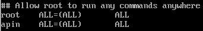
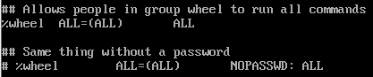
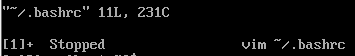

- 磁盘分区
- 首次登入
- 文件权限与目录配置
- Linux 文件与目录管理
- Linux 磁盘与文件系统管理
- 文件与文件系统的压缩，打包和备份
- vim 程序编辑器
- 认识和学习 BASH
- 正则表达式与文件格式化处理
- 文件的格式化与相关处理
文章若有侵犯版权，请联系作者，我将迅速修改！
磁盘分区
在 Linux 中，每个连接到计算机的磁盘都拥有一个磁盘文件名，正常的实体机器大概使用的都是 /dev/sd[a-p] 的格式；至于虚拟环境下，为了加速，可能会使用 /dev/vd[a-p] 这种装置文件名。
MSDOS(MBR) 与 GPT 磁盘分区表
MSDOS(MBR)分区表格式与限制
早期 Linux 系统使用的是支持 Windows 的 MBR（Master Boot Record）的方式来处理开机管理程序与分区表，这两者都存放在磁盘的第一个扇区（旧的磁盘扇区都是 512 bytes）。
即，第一个扇区 512 bytes 会有这两个数据：
- 主要启动记录区（Master Boot Record，MBR）：可以安装开机管理程序的地方，有 446 bytes；
- 分区表（partition table）：记录整颗硬盘分区的状态，有 64 bytes；
由于分区表仅 64 bytes 容量，因此最多仅能有四组记录区：
| 分区 | 文件名 |
|---|---|
| P1 | /dev/sda1 |
| P2 | /dev/sda2 |
| P3 | /dev/sda3 |
| P4 | /dev/sda4 |
这四个分区的记录被称为主要（Primary）分区槽或延伸（Extended）分区槽。
- 主要分区与延伸分区最多可以有四个（硬盘的限制）；
- 延伸分区最多只能有一个（操作系统的限制）；
其中，延伸分区的目的是使用额外的扇区来记录分区信息，每个延伸分区里有一个分区表，其指向的分区被称为逻辑分区槽（logical partition）。
虽然，延伸分区的大小是其所有逻辑分区槽的总和，但是，作为数据存取的分区槽为主要分区与逻辑分区，延伸分区本身并不能被拿来格式化。
上述的分区槽在 Linux 系统中的装置文件名分别如下：
| 分区 | 文件名 |
|---|---|
| P1 | /dev/sda1 |
| P2 | /dev/sda2 |
| L1 | /dev/sda5 |
| L2 | /dev/sda6 |
| L3 | /dev/sda7 |
| L4 | /dev/sda8 |
| L5 | /dev/sda9 |
注意：一般建议将延伸分区放在最后；
GUID partition table,GPT磁盘分区表
与 MBR 仅使用第一个 512 bytes 区块来记录不同，GPT 使用了 34 个 LBA（逻辑区块地址，Logical Block Address）区块来记录分区信息。
除了前面 34 个 LBA 之外，整个磁盘的最后 33 个 LBA（预设为 512 bytes）也拿来作为另一个备份，相比 MBR 仅使用一个区块会更安全。
LBA0（MBR相容区块）
这个兼容区块分为两个部分，第一部分 446 bytes 存储了第一阶段的开机管理程序，第二部分仅放入一个特殊标志的分区，用来表示此磁盘为 GPT 格式。
LBA1（GPT 表头记录）
记录分区表本身的位置与大小、备份用的 GPT 分区放置的位置和分区表的检验机制码（CRC32）。
LBA2-33（实际记录分区信息处）
每个 LBA 都可以记录 4 笔分区记录，所以在默认情况下，总共可以有 4*32=128 笔分区记录。
开机流程中的 BIOS 与 UEFI 开机检测程序
刚开机的计算机还没有任何软件系统，那它该如何读取硬盘内的操作系统文件？
基本上，目前的主机系统在加载硬件驱动方面的程序，主要有早期的 BIOS 与新的 UEFI 两种机制。
BIOS 搭配 MBR/GPT 的开机流程
BIOS+MBR
整个开机流程到操作系统之前的动作：
- BIOS：开机主动执行的固件，会认识第一个可开机的装置，例如磁盘；
- MBR：第一个可开机装置的第一个扇区内的主要启动记录区块，内含开机管理程序；
- 开机管理程序（boot loader）：一支可读取核心文件来执行的软件；
- 核心文件：开始操作系统的功能；
开机管理程序是操作系统在安装的时候所提供的，它会认识硬盘内的文件系统格式，能够读取核心文件。
BIOS+GPT
流程相差不大，但是要求系统提供的开机管理程序能够认识 GPT。例如，Windows XP 环境，开机管理程序不懂 GPT，就无法读取核心文件。
注意：GRUD 是一个用于加载和管理系统启动的完整程序。它是 Linux 发行版中最常见的*引导程序(bootloader)*。由于 LBA0 仅提供第一阶段的开机管理程序，因此当你使用类似 grud 的开机管理程序时，你需要额外分区出一个 BIOS boot 的分区槽，其中放置其他开机过程所需要的程序代码；
总结，BIOS 和 MBR 是硬件本身会支持的功能，至于 Boot loader 则是操作系统安装在 MBR上的一套软件。
这个 boot loader 的主要任务有以下项目：
- 提供选单：用户可以选择不同的开机项目，这也是多重引导的重要功能；
- 载入核心文件：直接指向可开机的程序区段来开始操作系统；
- 转交其他 loader：将开机管理功能转交给其他 loader 负责；
多重引导，开机管理程序除了可以安装在 MBR 之外，还可以安装在每个分区槽的启动扇区（boot sector）。例如，硬盘的四个分区槽，其中第一、第二分区槽分别安装了 Windows 和 Linux：

loader 只会认识自己系统槽内的可开机核心文件，以及其他 loader。
UEFI BIOS 搭配 GPT 开机的流程
UEFI（Unified Extensible Firmware Interface，统一可扩展固件接口），可以解决 BIOS 不懂 GPT 和与操作系统接轨方面的问题（BIOS 是仅为 16 位的程序）。
基本上，传统 BIOS 与 UEFI 的差异可以用以下表格说明：
| 比较项目 | 传统 BIOS | UEFI |
|---|---|---|
| 使用程序语言 | 汇编语言 | C 语言 |
| 硬件资源控制 | 使用中断（IRQ）管理 不可变的内存存取 不可变得输入/输出存取 |
使用驱动程序与协议 |
| 处理器运作环境 | 16 位 | CPU 保护模式 |
| 扩充方式 | 透过 IRQ 连结 | 直接加载驱动程序 |
| 第三方厂商支持 | 较差 | 较佳且可支持多平台 |
| 图形化能力 | 较差 | 较佳 |
| 内建简化操作系统前环境 | 不支援 | 支援 |
首次登入
我计划安装 CentOS（兼容 RHEL）进行接下来的学习。
X window 与文本模式的切换
通常称文本模式为终端机接口（terminal），Linux 预设的情况下会提供六个 Terminal 来让使用者登入，切换的方式：**[Ctrl]+[Alt]+[F1]~[F6]**。
系统会将 [F1][F6] 命名为 tty1tty6 的操作接口环境：
- [Ctrl]+[Alt]+[F2]
[F6]：文字接口登入 tty2tty6 终端机； - [Ctrl]+[Alt]+[F1]：图形接口桌面；
在终端，你可以使用 startx 启动窗口界面，不过要求没有其他的 X window 被启用；
终端下达指令
1 | command [-options] parameter1 parameter2 ... |
| 指令 | 选项 | 功能 |
|---|---|---|
| ls | -al（-a -l），列出隐藏档与相关的文件属性 | 列出当前目录下的文件 |
| date | +%Y/%m/%d，以年月日格式显示日期 +%H:%M，显示具体时间 |
显示日期 |
| locale | - | 显示目前支持的语系 |
| cal | cal [month] [year] |
显示日历 |
| bc | quit，退出 scale=number，输出 number 位小数 |
打开计算器 |
| 热键 | 功能 |
|---|---|
| [Tab] | 命令补全 文件补全 若安装 bash-completion 软件，在某些指令后可以进行选项/参数补全 |
| [Ctrl]-c | 中断目前程序 |
| [Ctrl]-d | 代表键盘输入结束（EOF），可以代替 exit 输入 |
| [Shift]+{[PageUP]|[PageDown]} | 翻页 |
## Linux 系统求助
–help 求助说明
使用 --help 选项，你可以对该指令的用法作一个大致的了解。
1 | date --help |
man page
这个 man 是 manual（操作说明）的简写，例如：
1 | man date |
生成的 man page 的内容可以分为以下几个主要部分：
| 代号 | 内容说明 |
|---|---|
| NAME | 简短的指令、数据名称的说明 |
| SYNOPSIS | 简短的指令下达语法（syntax）简介 |
| DESCRIPTION | 较为完整的说明，这部分最好仔细看 |
| OPTIONS | 针对 SYNOPSIS 部分中，有列举的所有可用的选项说明 |
| COMMANDS | 当这个程序在执行的时候，可以在此软件中下达的指令 |
| FILES | 这个程序或数据所使用或参考或连结到的某些文件 |
| SEE ALSO | 可以参考的，跟这个指令或数据有相关的其他说明 |
| EXAMPLE | 一些可以参考的范例 |
在 man page 第一行，你可以看到 DATE(1)，DATE 是被查询的指令名称，(1) 代表的是一般用户可使用的指令。以下是常见数字所代表的意义：
| 代号 | 代表内容 |
|---|---|
| 1 | 用户在 shell 环境中可以操作的指令或可执行文件 |
| 2 | 系统核心可呼叫的函数与工具等 |
| 3 | 一些常用的函数（function）与函式库（library），大部分为 C 的函式库（libc） |
| 4 | 装置文件的说明，通常在 /dev 下的文件 |
| 5 | 配置文件或者是某些文件的格式 |
| 6 | 游戏 |
| 7 | 惯例与协议等，例如 Linux 文件系统、网络协议、ASCII code 等等的说明 |
| 8 | 系统管理员可用的管理指令 |
| 9 | 跟 kernel 有关的文件 |
在进入 man page 后，你还可以输入命令进行操作：
| 按键 | 进行工作 |
|---|---|
| 空格键 | 向下翻一页 |
| [PageDown] | 向下翻一页 |
| [PageUp] | 向上翻一页 |
| [Home] | 去到第一页 |
| [End] | 去到最后一页 |
| /string | 向【下】搜寻 string 这个字符串 |
| ?string | 向【上】搜寻 string 这个字符串 |
| n，N | 利用 / 或 ? 来搜寻字符串时，可以用 n 来继续下一个搜寻，可以利用 N 来进行【反向】搜寻。 |
| q | 结束这次的 man page |
| 选项 | 功能 | 实例 |
|---|---|---|
| -f | 显示与指令相关的说明文件，可以指定说明文件进行搜寻 | man -f manman 1 man（选择 1 号文件） |
| -k | 在系统的说明文件中，寻找有这个关键字的文件 | man -k man |
通过 root 身份使用 mandb 指令建立 whatis 数据库，我们可以使用以下两个指令：
whatis [指令或数据]：相当于 man -f；apropos [指令或数据]：相当于 man -k；
info page
info 与 man 的用途其实差不多，但是和 man page 一口气输出一堆信息不同的是，info page 将文件数据拆成一个一个的段落，每个段落用自己的页面来撰写，并且在各个页面中还有类似网页的【超链接】来跳到各不同的页面中，每个独立的页面也被称为一个节点。
注意：info 指令只能查询 info 格式的说明文件。
info page 的第一行显示了很多的信息：
- File：代表这个 info page 的资料是来自 info.info 文件所提供的；
- Node：目前页面所属的节点；
- Next：下一个节点的名称，按【N】到下一节点；
- Up：上一层的节点总揽画面，按【U】回到上一层；
- Prev：前一个节点；
info page 各说明文件相关性的示意图：
同样的，info page 可以输入命令：
| 按键 | 进行工作 |
|---|---|
| [Space] | 向下翻一页 |
| [PageDown] | 向下翻一页 |
| [PageUp] | 向上翻一页 |
| [Tab] | 在 node 之间移动，有 node 的地方，通常会以 * 显示 |
| [Enter] | 当光标在 node 上面时，按下 enter 可以进入该 node |
| b | 移动光标到该 info 画面当中的第一个 node 处 |
| e | 移动光标到该 info 画面当中的最后一个 node 处 |
| n | 前往下一个 node 处 |
| p | 前往上一个 node 处 |
| u | 向上移动一层 |
| s（/） | 在 info page 当中进行搜寻 |
| h，? | 显示求助选单 |
| q | 结束这次的 info page |
简单文本编辑器：nano
1 | nano [filename] |
注意：^X 表示 [Ctrl]+x；M-D 表示 [Alt]+d；
正确的关机方法
在 Linux 系统中，可能存在相当多人同时在你的主机上面工作，如果你直接按下电源开关来关机时，则其他人的数据可能就此中断。最重要的是，若不正常关机，则可能造成文件系统的损毁。
在正常情况下，要关机时需要注意底下几件事：
观察系统的使用状态：
如果要看目前有谁在线，可以使用
who指令；如果要看网络的状态，可以使用
netstat -a指令；如果要看后台执行的程序，可以执行
ps -aux指令；通知在线使用者关机的时刻：
关机前给在线的使用者一些时间来结束他们的工作，可以使用
shutdown指令实现这个功能。正确的关机指令使用：
例如 shutdown 与 reboot 两个指令；
接下来是几个与关机/重新启动相关的指令。
数据同步写入磁盘：sync
由于性能要求，某些已经加载内存中的数据将不会直接被写回硬盘，而是先暂存在内存当中。万一系统因为某些特殊情况造成不正常关机，内存中的数据尚未被写入硬盘，就会造成数据的更新不正常。
1 | su - #转变身份为 root |
惯用的关机指令：shutdown
- 以实体终端机（tty1~tty7）来登入系统，一般用户和管理员都可以关机；
- 使用远程管理工具（如透过 pietty 使用 ssh 服务），只有 root 有权利关机；
常用 shutdown 指令关机，这个指令会通知系统内的各个程序，并且将通知系统中的一些服务来关机。shutdown 可以达成如下的工作：
- 自由选择关机模式：关机或重启；
- 设定关机时间；
- 自定义关机讯息：在关机之前，可以将自己设定的讯息传送给在线用户；
- 仅发出警告讯息：适用于请退其他用户或者发出警告信息；
语法规则：
1 | /sbin/shutdown [-krhc] [时间] [警告讯息] |
选项与参数：
- -k：仅发送警告讯息；
- -r：将系统的服务停掉之后，重新启动；
- -h：将系统的服务停掉后，立即关机；
- -c：取消正在进行的 shudown 指令内容；
- 时间：指定系统关机的时间（分钟），若忽略这一选项，默认 1 分钟后自动进行；
示例：
1 | shutdown -h now # 立即关机 |
重新启动，关机：reboot，halt，poweroff
它们三者全部的动作都是去呼叫 systemctl 这个重要的管理命令。
1 | reboot # 重新启动 |
实际使用管理工具 systemctl 关机
systemctl 负责系统中所有服务的管理。这个指令相当的复杂，目前只讨论其中与关机有关的部分，上面谈到的 halt，poweroff，reboot，shutdown 等等，其实都是呼叫这个 systemctl 指令。
1 | systemctl [指令] |
文件权限与目录配置
Linux 最优秀的地方之一就在于它的多人多任务环境。为了让各个使用者具有较保密的文件数据，因此文件的权限管理非常重要。
Linux 一般将文件可存取的身份分为三个类别，分别是 user/group/others，且三种身份各有 read/write/execute 等权限。
使用者与群组
对一些概念做基本的说明、介绍。
文件拥有者：User
由于 Linux 是个多人多任务的系统，因此可能常常会有多人同时使用这部主机来进行工作的情况发生，为了考虑每个人的隐私权以及每个人喜好的工作环境，文件拥有者这个角色相当重要。
例如，你可以将一个文件设定成只有文件拥有者（我）才能看与修改这个文件的内容。
群组：Group
群组最有用的功能之一，就是当你在团队开发资源的时候。例如，有两个专题组在主机里，需要保证每组的组员之间能够互相修改对方的数据，但是其他组的组员不行。
并且每个账号都可以有多个群组的支持。例如，teacher 这个账号需要能够进入这两个群组的权限时，可以设定它同时支持 projecta 和 projectb 这两个群组。
其他人：Others
不在同一个群组的陌生人，相对于这个群组来说就是其他人。
注意：root 用户是特殊的；
Linux 用户身份与群组记录的文件：
/etc/passwd：所有系统上的账号，一般身份使用者以及 root 的相关信息；/etc/shadow：个人的密码；/etc/group：所有的组名；
Linux 文件权限概念
Linux 文件属性
使用 su - 指令切换 root 身份，展示家目录下的文件，截取一部分：
1 | -rw-r--r--. 1 root root 2252 Jul 13 16:44 initial-setup-ks.cfg |
第一栏代表这个文件的类型与权限（permission）：
这一栏共十个字符：
第一个字符代表这个文件是【目录、文件或链接文件等等】：
- 当为 [ d ] 则是目录；
- 当为 [ - ] 则是文件；
- 若是 [ l ] 则表示为连结文件（link file）；
- 若是 [ b ] 则表示为装置文件里面的可供存储的接口设备（可随机存取装置）；
- 若是 [ c ] 则表示为装置文件里面的串行端口设备，例如键盘、鼠标（一次性读取装置）；
接下来的字符中，以三个为一组，且均为 [rwx] 的三个参数的组合。其中 [ r ] 代表可读（read）、[ w ] 代表可写（write）、[ x ] 代表可执行（execute）。
注意：这三个权限的位置不会改变，如果没有权限，则会出现 [ - ] 减号；
- 第一组为文件拥有者可具备的权限；
- 第二组为加入此群组之账号的权限；
- 第三组为非本人且没有加入本群组之其他账号的权限；
注意：目录与文件的权限意义并不相同，这是因为目录与文件所记录的数据内容不相同所致；
第二栏表示有多少档名连结到此节点（i-node）：
如果是一个文件，此时这一字段表示这个文件所具有的硬链接数；
如果是一个目录，则表示该目录所含子目录的个数（初始为 2）；
第三栏表示这个文件（或目录）的拥有者账号；
第四栏表示这个文件的所属群组；
第五栏为这个文件的容量大小，默认单位为 bytes；
第六栏为这个文件的建档日期或者是最近的修改日期；
第七栏为这个文件的档名；
改变文件属性与权限
改变所属群组：chgrp
命令格式：
1 | chgrp [-R] dirname/filename ... |
选项与参数：
-R：进行递归（recursive）的持续变更，即连同次目录下的所有文件、目录都更新成为这个群组。
示例：
1 | chgrp users initial-setup-ks.cfg |
改变文件拥有者：chown
修改文件的拥有者（-R 递归可用），同时也可以修改文件的所属群组：
1 | chown root:root initial-setup-ks.cfg # 修改拥有者以及群组 |
改变权限：chmod
权限设定方法有两种，分别可以使用数字或者符号来进行权限的变更。
数字类型改变文件权限
Linux 文件的基本权限就有 9 个，分别是 user/group/others 三种身份各有自己的 read/write/execute 权限。
可以使用数字来代表各个权限，各权限的分数对照表如下：
- r：4
- w：2
- x：1
每种身份各自的三个权限分数是需要累加的，例如当权限为：[-rwxrwx—] 分数则是：
- user = rwx = 4+2+1 = 7；
- group = rwx = 4+2+1 = 7；
- others = — = 0+0+0 = 0；
所以，该文件的权限数字就是 770。语法为：
1 | chmod [-R] xyz 文件或目录 |
符号类型改变文件权限
用 u，g，o 代表三种身份的权限，a 代表全部的身份；权限即用 r，w，x 表示；
| chmod | u g o a |
+（加入） -（除去） =（设定） |
r w x |
文件或目录 |
|---|
示例：
1 | chmod u=rwx,go=rx .bashrc # -rwxr-xr-x |
目录与文件的权限意义
| 组件 | 内容 | 迭代物件 | r | w | x |
|---|---|---|---|---|---|
| 文件 | 详细内容 data | 文件文件夹 | 读到文件内容 | 修改文件内容 | 执行文件内容 |
| 目录 | 文件名 | 可分类抽屉 | 读到文件名 | 修改文件名 | 进入该目录的权限 |
权限对文件的重要性
文件是实际含有数据的地方，包括一般文本文件、数据库内容文件、二进制可执行文件等等。
- r（read）：可读取此文件的实际内容；
- w（write）：可以编辑、新增或者修改该文件的内容（但不含删除该文件）；
- x（execute）：该文件具有可以被系统执行的权限；
在 Windows 下一个文件是否具有执行的能力是有由扩展名来判断的；在 Linux 下，文件是否能被执行是由文件是否具有 x 这个权限来决定的。
权限对目录的重要性
目录主要的内容在记录文件名列表，文件名与目录有强烈的关联。
r（read contents in directory）：
表示具有读取该目录结构列表的权限，例如使用 ls 将该目录的内容列表显示出来；
w（modify contents of directory）：
表示具有异动该目录结构列表的权限，即：
- 建立新的文件或目录；
- 删除已经存在的文件与目录（无论该文件的权限）；
- 将已存在的文件或目录进行更名；
- 搬移该目录内的文件、目录位置；
x（access directory）：
代表用户能否进入该目录成为工作目录；
Linux 文件种类与扩展名
任何装置在 Linux 底下都是文件，不仅如此，连数据沟通的接口也有专属的文件在负责。
文件种类
正规文件（regular file）：
一般在进行存取的类型的文件，属性的第一个字符为 [-]；依照文件的内容，可大略分为：
- 纯文本文件（ASCII）：其内容可被人类直接读到，例如数字、字母等等；
- 二进制文件（binary）：Linux 中的可执行文件（script，文字型批处理文件不算）；
- 数据格式文件（data）：有些程序在运行的过程中会读取某些特定格式的文件，可被称为数据文件（data file）。例如，Linux 在使用者登入时，会将登录的数据记录在 /var/log/wtmp 文件内，它能够通过 last 指令读出来，使用 cat 指令会读出乱码。
目录（directory）：属性第一个字符为 [d]；
连结文件（link）：类似 Windows 系统下的快捷方式，属性第一个字符为 [l]。
设备与装置文件（device）：
与系统周边及存储等相关的一些文件，通常都集中在 /dev 目录下，通常分为两种：
- 区块（block）设备档：一些储存数据，以提供系统随机存取的接口设备，属性第一个字符为 [b]；例如，/dev/sda；
- 字符（character）设备文件：一些串行端口的接口设备，属性第一个字符为 [c]；这些设备的特点是一次性读取（一次读取，多次写入），不能截断输出；例如键盘、鼠标，你不能让鼠标闪现到另一个位置，而是连续的滑动；
数据接口文件（sockets）：
通常用于网络上的数据承接，属性第一个字符为 [s]；我们可以启动一个程序来监听客户端的请求，而客户端就可以透过这个 socket 来进行数据的沟通；
数据输送文件（FIFO，pipe）：
其主要目的为解决多个程序同时存取一个文件所造成的错误问题，属性第一个字符为 [p]；
文件扩展名
基本上，Linux 文件是没有所谓的扩展名的。一个 Linux 能否被执行与它的权限有关，与文件名没一点关系，只要文件的权限中具有 x 就代表这个文件具有可以被执行的能力。
不过，可以被执行跟可以执行成功是不一样的，能不能执行成功要看该文件的内容。
虽然如此，我们通常会以适当的扩展名来表示该文件的种类，例如：
- *.sh：脚本或批处理文件（script）；
- *.Z,*.tar,*.tar.gz,*.zip,*.tgz：经过打包的压缩文件；
- *.html,*.php：网页相关文件；
Linux 文件名的限制：
长度：
在 Linux 下，使用传统的 Ext2/Ext3/Ext4 文件系统以及 CentOS 7 预设的文件系统 xfs 而言，针对文件的档名长度限制为：单一文件或目录的最大容许文件名为 255 bytes；
这是相当长的文件名，因为我们希望 Linux 的文件名可以一看就知道其用处；
特殊字符：
这些符号在文字接口下，是有特殊意义的。在设定文件名时，最好可以避免：
*** ? > < ; & ! [ ] | \ ' " ` ( ) { }**；
另外，文件名的开头为小数点 . 时，代表文件为隐藏文件。同时，由于指令选项的问题，最好避免将文件名的开头以 - 或 + 来命名；
Linux 目录配置
为了避免管理上的困扰，FHS 标准规定了每套 Linux distributions 的配置文件、执行文件的位置，目录的内容等，不让每个人都可以用自己的想法配置文件放置的目录。
Linux 目录配置的依据—FHS
FHS（Filesystem Hierarchy Standard）的重点在于规范每个特定目录下应该要放置什么样的数据。
FHS 根据文件系统使用的频繁与否与是否允许使用者随意变动，而将目录定义成为四种交互作用的形态：
| 可分享的（sharable） | 不可分享的（unsharable） | |
|---|---|---|
| 不可变的（static） | /usr（软件放置处） /opt（第三方协力软件） |
/etc（配置文件） /boot（开机与核心文件） |
| 可变动的（variable） | /var/mail（使用者邮箱信件） /var/spool/news（新闻组） |
/var/run（程序相关） /var/lock（程序相关） |
- 可分享的：可以分享给其他系统挂载使用的目录，是能够分享给网络上其他主机挂载用的目录；
- 不可分享的：自己机器上面运行的装置文件或者是与程序有关的 socket 文件等，仅与自身机器有关；
- 不变的：有些数据是不会经常变动的，跟随着 distribution 而不变动；
- 可变动的：经常改变的数据；
事实上，FHS 针对目录树架构仅定义出三层目录底下应该放置什么数据：
- /（root，根目录）：与开机系统有关；
- /usr（unix software resource）：与软件安装/执行有关；
- /var（variable）：与系统运作过程有关；
根目录（/）的意义与内容
根目录是整个系统最重要的一个目录，因为不但所有的目录都是根目录衍生出来的，同时根目录也与开机/还原/系统修复等动作有关。
因此 FHS 标准建议：根目录（/）所在分区槽应该越小越好，且应用程序所安装的软件最好不要与根目录放在同一分区槽内。这样不但效能较佳，根目录所在的文件系统也较不容易发生问题。
鉴于上述的说明，FHS 定义出的根目录下应该要求以下次目录，即使没有实体目录也应有连结文件存在：
第一部分：FHS 要求必须存在的目录
| 目录 | 应放置文件内容 |
|---|---|
| /bin | 执行文件，在单人维护模式下还能够被操作的指令，可以被 root 与一般账号使用，主要有 cat，chmod，chown，mv，cp 等常用指令； |
| /boot | 开机会使用到的文件，包括 Linux 核心文件以及开机选单与开机所需配置文件等； |
| /dev | 以文件的型态存在这个目录的装置与接口设备； |
| /etc | 系统主要的配置文件，另外 FHS 还规范几个重要的目录最好存在 /etc/ 目录下： 1. /etc/opt（必要）：第三方协力软件 /opt 的相关配置文件； 2. /etc/x11（建议）：与 X Window 有关的各种配置文件； 3. /etc/sgml（建议）：与 SGML 格式有关的各项配置文件； 4. /etc/xml（建议）：与 XML 格式有关的各项配置文件； |
| /lib | 函数库，在开机时会用到的函数库，以及在 /bin 或 /sbin 下的指令会呼叫的函数库；另外 FSH 要求以下目录必须存在： 1. /lib/modules：可抽换式的核心相关模块（驱动程序）； |
| /media | 可移除的装置，例如软盘、光盘、DVD 等； |
| /mnt | 暂时挂载某些额外的装置； |
| /opt | 第三方协力软件，例如 KDE 桌面管理系统； |
| /run | 系统开机后所产生的各项信息，/run 可以使用内存仿真，效能更好； |
| /sbin | 设定系统环境的，只有 root 能够使用，开机过程中所需要的，里面包括了开机、修复、还原系统所需要的指令，例如 fdisk，fsck，ifconfig 等； |
| /srv | 网络服务启动后所需要取用的数据； |
| /tmp | 一般用户或正在执行的程序暂时放置的文件； |
| /usr | 第二层 FHS 设定； |
| /var | 第二层 FHS 设定，主要放置变动性的数据； |
第二部分：FHS 建议可以存在的目录
| 目录 | 应放置文件内容 |
|---|---|
| /home | 系统默认的用户家目录； |
| /lib<qual> | 存放与 /lib 不同格式的二进制函数库，例如支持 64 位的 /lib64 函数库等； |
| /root | 系统管理员（root）的家目录； |
第三部分：应放置文件内容
| 目录 | 应放置文件内容 |
|---|---|
| /lost+found | 使用标准的 ext2/ext3/ext4 文件系统才会产生，发生错误时放置遗失的片段； |
| /proc | 虚拟文件系统，数据存储在内存，是 Linux 系统所需要加载的系统数据，与内核交流； |
| /sys | 虚拟文件系统，主要记录系统硬件相关信息； |
/usr 的意义与内容
根据 FHS 的基本定义，/usr 里面放置的数据属于可分享的与不可变动的。
第一部分：FHS 要求必须存在的目录
| 目录 | 应放置文件内容 |
|---|---|
| /usr/bin | 所有一般用户能够使用的指令，FHS 要求在此目录下不应该有子目录；目前最新的 CentOS 7 已经将全部的用户指令放置于此，即使用连结文件的方式将 /bin 连结至此； |
| /usr/lib | 基本上，与 /lib 功能相同，所有 /lib 就是链接到此目录中的； |
| /usr/local | 系统管理员在本机自行下载安装的软件； |
| /usr/sbin | 非系统正常运行所需要的系统指令，目前 /sbin 就是链接到此目录中的；最常见的就是某些网络服务器软件的服务指令（daemon）； |
| /usr/share | 主要放置只读架构的数据文件，当然也包括共享文件。在这个目录下放置的数据几乎是不分硬件架构均可读取的数据。以下是常见的次目录： 1. /usr/share/man：联机帮助文件； 2. /usr/share/doc：软件杂项的文件说明； 3. /usr/share/zoneinfo：与时区有关的时区文件； |
第二部分：FHS 建议可以存在的目录
| 目录 | 应放置文件内容 |
|---|---|
| /usr/games | 与游戏比较相关的数据放置处 |
| /usr/include | c/c++ 等程序语言的 header 和 include 文件放置处，当我们以 tarball 方式（*.tar.gz 方式）安装软件时会用到里面的文件； |
| /usr/libexec | 某些不被一般使用者惯用的执行文件或脚本等等； |
| /usr/lib<qual> | 目前 /lib<qual> 链接到此目录； |
| /usr/src | 一般原始代码建议放置在这里，至于核心原始代码则建议放置到 /usr/src/linux 目录下； |
/var 的意义与内容
如果 /usr 是安装时会占用较大硬盘容量的目录，那么 /var 就是在系统运作后才会渐渐占用硬盘容量的目录。因为 /var 目录主要针对常态性变动的文件，包括 cache，logfile 以及某些软件运行所产生的文件。
第一部分：FHS 要求必须存在的目录
| 目录 | 应放置文件内容 |
|---|---|
| /var/cache | 应用程序本身运行过程中会产生的一些暂时文件； |
| /var/lib | 程序本身执行的过程中，需要使用到的数据文件放置的目录。在此目录下各自的软件应该要有各自的目录； |
| /var/lock | 某些装置或者文件资源一次只能被一个应用程序所使用，即上锁。 |
| /var/log | 重要目录，，是日志放置的目录；里面比较重要的文件如 messages，wtmp（记录登入者的信息）等； |
| /var/mail | 放置个人电子邮件信箱的目录，通常与 /var/spool/mail 目录互为链接文件； |
| /var/run | 某些程序或服务启动后，会将它们的 PID 放置在这个目录，与 /run 相链接； |
| /var/spool | 通常放置一些队列数据，所谓队列就是排队等待其它程序使用的数据； |
Linux 文件与目录管理
前一章我们认识了 Linux 系统下的文件权限概念以及目录的配置说明，接下来是进一步的操作与管理文件及目录；
目录管理
在 Linux 中存在一些特殊的目录：
| 目录 | 意义 |
|---|---|
| . | 代表此层目录 |
| .. | 代表上一层目录 |
| - | 代表前一个工作目录 |
| ~ | 代表目前用户身份所在的家目录 |
| ~account | 代表 account 用户的家目录 |
相对路径与绝对路径
- 绝对路径：路径的写法一定是由根目录 / 写起；
- 相对路径：路径的写法不是由 / 写起，例如 ../home；
目录的相关操作
注意：在所有目录底下都会存在的两个目录，分别是 [.]，[..]；
变换目录：cd
语法格式：
1 | cd [相对路径或绝对路径] |
如果仅输入 cd，代表的就是 cd ~ 的意思；
显示目前所在目录：pwd
语法格式：
1 | pwd [-P] |
选项与参数：
- -P：显示出确实的路径，而非使用链接路径；
建立新目录：mkdir
语法格式：
1 | mkdir [-mp] 目录名称 |
选项与参数：
- -m：手动配置目录的权限，忽略预设权限（umask）；
- -p：帮助你直接将所需要的目录（包含上层目录）递归建立起来；
示例：
1 | mkdir -p test1/test2/test3/test4 |
使用 [-p] 递归建立目录时，即使上层目录已经存在，系统也不会显示错误信息；
删除空目录：rmdir
语法格式：
1 | rmdir [-p] 目录名称 |
选项与参数：
- -p：连同上层空的目录一起删除；
关于执行文件路径的变量：$PATH
当我们在执行一个指令的时候，系统会按照环境变量 PATH 的设定去每个 PATH 定义的目录下搜寻可执行文件。如果在 PATH 定义的目录中含有多个同名的可执行文件，那么执行最先搜寻到的同名指令。
注意：$PATH 前面的 $ 表示后面接的是变量；
文件管理
复制文件或目录：cp
除了单纯的复制外，还可以建立连结文件，比对两文件的新旧而予以更新，以及复制整个目录等等功能；
语法结构：
1 | cp [-adfilprsu] 来源文件(sourcr) 目标文件(destination) |
选项与参数：
- -a：相当于 -dr –preserve=all 的意思；（常用）
- -d：若来源文件为链接文件，则复制链接文件属性而非文件本身；
- -f：为强制（force）的意思，若目标文件已经存在且无法开启，则移除后再尝试一次；
- -i：若目标文件已经存在时，在覆盖前会先询问；（常用）
- -l：进行硬式连结（hard link）的连结文件建立，而非复制文件本身；
- -p：连同文件的属性（权限、用户、时间）一起复制过去，而非使用默认属性；（备份常用）
- -r：递归持续复制，用于目录的复制行为；（常用）
- -s：复制成为符号链接文件（symbolic link），即快捷方式文件；
- -u：目标文件比源文件旧才更新，或目标文件不存在；
- –preserve=all：除了 -p 的相关参数外，还加入 SELinux 的属性，links，xattr 等也复制了；
示例：
1 | cp -a /etc /tmp # 备份 /etc 目录 |
注意：如果来源文件有两个以上，则最后目标一定要是目录；
cp 指令默认复制的是源文件，若要复制链接文件的属性，需要使用 -d 的选项；
chown 指令要求 root 身份，而 chgrp 要求 root 或属于组的文件所有者；这分别是变更文件拥有者或变更文件关联组的需要，因此 cp 虽然有复制属性的选项，但是一般用户不能进行的动作，即使加上 -a 选项，也是无法复制完整的权限；
移除文件或目录：rm
语法格式：
1 | rm [-fir] 文件或目录 |
选项与参数：
- -f：就是强制 force 的意思，忽略不存在的文件，不会出现警告信息；
- -i：互动模式，在删除前会询问；
- -r：递归删除；
移动文件或目录，或更名：mv
语法格式：
1 | mv [-fiu] source destination |
选项与参数：
- -f：force 强制的意思，如果目标文件已经存在，不会询问而直接覆盖；
- -i：若目标文件已经存在时，就会询问是否覆盖；
- -u：若目标文件已经存在，且 source 比较新，才会更新；
注意：在 Linux 下，rename 指令专职进行多个文件同时更名；
如果有多个来源或目录，则目标文件一定是目录；
文件内容查阅
直接检视
- cat：将一个文件的内容持续的打印在屏幕上面；
- tac：与 cat 相反，由最后一行到第一行反向在屏幕上显示出来；
- nl：将输出的文件内容自动的加上行号显示；
可翻页检视
more
在 more 运行过程中，可以进行输入，以下只列举出与 nano 不同的、有特色的：
- [ :f ]：立即显示文件名和目前显示的行数；
- b 或 [Ctrl]+b：往回翻页，只对文件有用；
less
用法比 more 更加由弹性，拥有更多的搜寻功能：
- g：前进到内容的第一行；
- G：前进到内容的最后一行；
资料撷取
head：取出前面几行；
1
head [-n number] 文件
若 number 忽略，默认取 10 行；
若 number < 0（例如，-100），取除了后面 number 行的所有行；
tail：取出后面几行；
1
tail [-n number] 文件
选项：-f，表示持续侦测文件内容，显示新加入的内容；
若 number 忽略，默认取 10 行；
若 number 为 +number（例如，+100）型式，取 number 行后的所有行；
非纯文本文件：od
语法格式：
1 | od [-t TYPE] 文件 |
选项与参数：
- a：使用默认的字符来输出；
- c：使用 ASCII 字符来输出；
- d[size]：利用十进制（decimal）来输出，每个数占用 size bytes；
- f[size]：利用浮点数（floating）来输出，每个数占用 size bytes；
- o[size]：利用八进制（octal）来输出，每个数占用 size bytes；
- x[size]：利用十六进制（hexadecimal）来输出，每个数占用 size bytes；
示例：
1 | od -t oCc /etc/issue |
其中，oC 中 C 为 char size；
- 若 TYPE 为 [doux]， C 为 char size，S 为 short size，I 为 int size，L 为 long size；
- 若 TYPE 为 f，F 为 float size，D 为 double size，L 为 long double size；
修改文件时间或建置新文件：touch
每个文件在 Linux 底下都会记录许多的时间参数，其中有三个主要的变动时间：
modification time（mtime）：
当该文件的内容数据变更时，更新这个时间；
status time（ctime）：
当该文件的状态改变时，更新这个时间；例如，属性与权限；
access time（atime）：
当该文件的内容被取用时，更新这个时间；
语法格式：
1 | touch [-acdmt] 文件 |
选项与参数：
- -a：仅修订 access time；
- -c：仅修改文件的时间，若该文件不存在，不建立新文件；
- -d：接欲修订的日期而不用目前的日期；
- -m：仅修改 mtime；
默认情况下，目标文件的三个时间都会更新为目前时间，若该文件不存在则创建一个新文件；
文件与目录的默认权限与隐藏权限
除了基本的 r，w，x 权限外，在 Linux 传统的 Ext2/Ext3/Ext4 文件系统下，我们还可以设定其他的系统隐藏属性；其中最重要的属性就是可以设定其不可修改（包括拥有者）。
不过，xfs 文件系统仅支持 chattr 的部分参数，而 CentOS 就是使用 xfs 作为预设文件系统；
文件预设权限：umask
umask 指定目前用户在建立文件或目录时候的权限默认值；有两种预设的情况如下：
- 文件：预设可执行（x）权限关闭，只有 rw 两个项目，最大为 666。
- 目录：预设可执行（x）权限开放，最大为 777；
查询用户文件预设权限的方式有两种：
1 | umask # 输出 0002（第一个数是特殊权限） |
- 数字型态：umask 的分数指的是该默认值需要减掉的权限，例如，002 表示拿掉其他人的写的权限；
- 符号类型：加入 -S 选项；
设定用户文件预设权限：
1 | umask 权限 |
文件隐藏属性
隐藏属性对于系统有很大的帮助，尤其在系统安全上。不过，底下 chattr 指令只能在 Ext2/Ext3/Ext4 的 Linux 传统文件系统上完整生效，其他的文件系统可能就无法完整支持这个指令了，例如 xfs 只支持部分参数。
配置文件隐藏属性：chattr
语法格式：
1 | chattr [+-=][ASacdistu] 文件或目录名称 |
选项与参数：
- +：增加某一个特殊参数；
- -：移除某一个特殊参数；
- =：设定有且仅有的特殊参数；
以下只列举 xfs 文件系统支援的参数：
- A：存取文件时，访问时间 atime 不会被修改，可避免 I/O 较慢的机器过度存取磁盘；
- a：只能增加数据，不能删除也不能修改数据，只有 root 可以设置；
- d：使该文件不会被 dump 程序备份；
- i：不能被删除、改名、设定连结也无法写入数据，只有 root 可以设置；
- S：任何文件的修改变动同步写入磁盘（一般文件是异步写入磁盘的sync）；
显示文件隐藏属性：lsattr
语法结构：
1 | lsattr [-adR] 文件或目录 |
选项与参数：
- -a：将隐藏文件的属性也秀出来；
- -d：如果目标是目录，仅列出目录本身的属性而非目录内的文件名；
- -R：连同子目录的数据也一并列出来；
文件特殊权限
除了 r，w，x 基本权限外，可以发现上面还有其它的特殊权限（s 和 t）；
Set UID
简称，SUID 特殊权限：s 在拥有者的 x；例如，/usr/bin/passwd；
基本上，SUID 的限制与功能：
- SUID 权限仅对二进制程序（binary program）有效；
- 本权限仅在执行该程序的过程中有效（run-time）；
- 执行者将具有该程序拥有者（user）的权限；
举例说明，/etc/shadow 文件权限为 [———-] 表示只有 root 有权限读取和修改，但是一般用户却可以使用 passwd 指令修改自己的密码？这就是 SUID 的功能，我们可以由上述功能说明知道：
- wl（一般用户）对于 /usr/bin/passwd 来说是具有 x 权限的；
- passwd 的拥有者是 root；
- wl 执行 passwd 过程中，会暂时获得 root 权限；
- /etc/shadow 就可以被 wl 所执行的 passwd 所修改；
注意：SUID 只能用在 binary program 上，不能用在 shell script 上。
由于安全性的考量，shell script 会忽略 setUID 属性；
Set GID
简称，SGID 特殊权限：s 在群组的 x；例如：
与 SUID 不同的是，SGID 可以针对二进制文件和目录来设定；
1.对于二进制程序，SGID 有如下限制和功能：
- 本权限仅在执行该程序的过程中有效（run-time）；
- 执行者在执行的过程中将会获得该程序群组的支持；
举例说明，若使用 wl 执行 locate，wl 会取得 slocate 群组的支持，也因此可以读取 mlocate.db；
2.对于目录，SGID 有如下限制与功能：
- 用户在此目录下的有效群组（effective group）将会变成该目录的群组；
- 使用者所建立的新文件，其群组与此目录的群组相同；
注意：通常有效群组的作用是在新建文件，SGID 改变不了 others 的身份；
Sticky Bit
简称，SBIT 特殊权限：t 在其他人的 x；例如，/tmp；
SBIT 目前只针对目录有效，其作用为：
- 在该目录下建立文件或目录时，仅有 user 和 root 有权限删除；
SUID/SGID/SBIT 权限设定
数字型态：
- 4 为 SUID；
- 2 为 SGID；
- 1 为 SBIT；
示例：
1
chmod 4755 filename
符号类型：
- u+s 为 SUID；
- g+s 为 SGID；
- o+t 为 SBIT；
示例：
1
chmod g+s,o+t filename
注意：S，T 代表的就是空的，user、group 和 others 都没有 x 权限；
显示文件类型：file
显示某个文件的基本信息，例如格式、是否使用动态函数库等等；
指令与文件的搜寻
搜寻命令：which
根据 PATH 环境变量所规范的路径，去搜索可执行文件；
语法格式：
1 | which [-a] command |
选项或参数：
- -a：将所有由 PATH 目录中可以找到的指令均列出；
注意：history 是 bash 内建的指令，无法被 which 找到，需要使用 type；
搜寻文件
在 Linux 下有相当优异的搜寻指令，whereis、locate 和 find。不过，find 是不常用的，一般优先使用 whereis 和 locate 来检查。
- find：速度慢，很耗硬盘；
- whereis：只找系统中某些特定目录下的文件；
- locate：利用数据库来搜寻文件名；
whereis 和 locate 速度相当快，并且没有实际搜寻硬盘内的文件系统状态，比较省时间；
whereis
由一些特定的目录中寻找文件；
语法结构：
1 | whereis [-bmsu] 文件或目录名 |
选项与参数：
- -l：可以列出 whereis 会去查询的几个主要目录而已；
- -b：只找 binary 格式的文件；
- -m：只找在说明文件 manual 路径下的文件；
- -s：只找 source 来源文件；
- -u：搜寻不在上述三个项目当中的其它特殊文件；
locate/updatedb
语法结构：
1 | locate [-ir] keyword |
选项与参数：
- -i：忽略大小写的差异；
- -c：不输出文件名，只计算找到的文件数量；
- -l：只输出制定行数，例如输出五行 -l 5；
- -S：输出 locate 所使用的数据库文件的相关信息；
- -r：后面可接正规表示法的显示方式；
locate 是在已建立的数据库（/var/lib/mlocate）里面搜寻文件信息。该数据的建立默认是在每天执行一次（每个 distribution 都不同），因此 locate 指令可能搜寻不到用户新建立的文件；
为此你可以输入 updatedb 指令更新数据库，该指令会在读取配置文件设定后，在硬盘里面搜寻文件信息，可能会等待几分钟；
find
语法格式：
1 | find [PATH] [option] [action] |
选项与参数：
与时间有关的选项：共有 -atime、-ctime 和 -mtime，以 -mtime 说明：
- -mtime n：n 为数字，意义为在 n 天之前的一天之内被更动过内容的文件；
- -mtime +n：列出在 n 天之前（不含 n 天本身）被更动过内容的文件；
- -mtime -n：列出在 n 天之内（含 n 天本身）被更动过内容的文件；
- -newer file：file 为一个存在的文件，列出比 file 新的文件；
与使用者或组名有关的参数：
- -uid n：n 为用户账号 ID（UID），记录在 /etc/passwd；
- -gid n：n 为组名 ID（GID），记录在 /etc/group；
- -user name：name 为使用者账号名称；
- -group name：name 为组名；
- -nouser：寻找文件的拥有者不存在 /etc/passwd 的文件；
- -nogroup：寻找文件的拥有群组不存在 /etc/group 的文件；
与文件权限及名称有关的参数：
- -name filename：寻找文件名为 filename 的文件；
- -size [+-]SIZE：搜寻比 SIZE 还要大（+）或小（-）的文件；这个 SIZE 的规格有：c 代表 byte，k 代表 1024 bytes。例如，-size +50k；
- -type TYPE：搜寻文件类型为 TYPE 的，类型主要有：一般文件（f）、装置文件（b，c）、目录（d）、连结文件（l）、socket（s）和 FIFO（p）等；
- -perm mode：搜寻文件权限等于 mode 的文件；
- -perm -mode：搜寻文件权限攘括（子集） mode 的文件；
- -perm /mode：搜寻文件权限包含任一（交集不等于空） mode 的文件；
额外可进行的动作：
- -exec command：-exec 后面接额外的指令来处理搜寻到的结果；
- -print：将结果打印到屏幕，默认动作；
find 的特殊功能就是能够进行额外的动作（action）。例如：
- {}：代表由 find 找到的内容；
- -exec 一直到 ; 是关键词，代表 find 额外动作的开始（-exec）到结束（;），即 ls -l {}；
- 因为 ; 在 bash 环境中是有特殊意义的，因此用反斜杠 \ 来跳脱；
Linux 磁盘与文件系统管理
本章重点在于如何制作文件系统，包括分区、格式化与挂载等；
认识 Linux 文件系统
Linux 最传统的磁盘文件系统（filesystem）使用的是 Ext2，所以要了解 Linux 的文件系统从 Ext2 开始；
文件系统特性
每种操作系统所设定的文件属性/权限并不相同，格式化就是使分区槽成为操作系统能够利用的文件系统格式；例如，Windows 98 的文件系统格式为 FAT，Windows 2000 以后出现 NTFS 文件系统；
一般情况，一个分区槽只能被格式化为一个文件系统，但是由于新技术的应用（例如 LVM），使得一个分区槽可以格式化为多个文件系统，也能够将多个分区槽合成为一个文件系统。
LVM（Logical Volume Manager），即逻辑卷管理，是 Linux 环境下对磁盘分区进行管理的一种机制，LVM 是建立在硬盘和分区之上的一个逻辑层，来提高磁盘分区管理的灵活性。
通过 LVM 系统管理员可以轻松管理磁盘分区，如：将若干个磁盘分区连接为一个整块的卷组（volume group），形成一个存储池。管理员可以在卷组上随意创建逻辑卷组（logical volumes），并进一步在逻辑卷组上创建文件系统。
管理员通过 LVM 可以方便的调整存储卷组的大小，并且可以对磁盘存储按照组的方式进行命名、管理和分配。
在 Linux 系统中，文件系统通常会将文件不同部分的数据分别存放在不同的区块：
- inode：记录文件的属性，一个文件占用一个 inode，同时记录此文件的数据所在的 block 号码；
- block：实际记录文件的内容，若文件太大则会占用多个 block；
- superblock：记录文件系统的整体信息，包括 inode/block 的总量、使用量、剩余量，以及文件系统的格式与相关信息等；
inode/block 资料存取示意图：
这种数据存取的方法称为索引式文件系统，inode 中记录了文件数据的所有实际放置点，操作系统能够一口气读四个 block 的内容；
FAT 文件系统资料存取示意图：
这个文件系统无法一次性就知道所有 block 的号码，需要碎片整理，即将同一个文件所属的 blocks 汇整在一起；
Linux 的 Ext2 文件系统
Ext2 中的 inode 与 block 固定后就不再变动，除非重新格式化（或使用 resize2fs 等指令变更文件系统大小）。
如果文件系统规模巨大时，将所有的 inode 和 block 全部放置在一起会导致管理困难；为此，Ext2 文件系统在格式化的时候基本上是区分为多个区块群组（block group）的，每个区块群组里都有独立的 inode/block/superblock 系统；
在整体的规划中，文件系统最前面有一个启动扇区（boot sector），这个启动扇区可以安装开机管理程序；这样，我们就可以将不同的开机管理程序安装到个别的文件系统最前端，而不用覆盖整颗磁盘唯一的 MBR，同时也可以制作出多重引导的环境；
data block
在 Ext2 文件系统中所支持的 block 大小有 1K，2K 及 4K 三种。
由于 block 大小的差异，对 Ext2 文件系统的限制：
| Block 大小 | 1KB | 2KB | 4KB |
|---|---|---|---|
| 最大单一文件限制 | 16GB | 256GB | 2TB |
| 最大文件系统总容量 | 2TB | 8TB | 16TB |
基本限制：
- 原则上，block 的大小与数量在格式化完就不能再改变了；
- 每个 block 只能放置一个文件的数据；
- 若文件小于 block，该 block 的剩余容量不能被使用；
inode table
- 同样 inode 的数量与大小在格式化时被固定，大小固定为 128 bytes（Ext4 和 xfs 可设定为 256 bytes）；
- 每个文件仅会占用一个 inode；
- 系统读取文件时，先分析 inode 所记录的权限；
inode 记录一个 block 号码花费 4 bytes，假设一个文件大小为 400MB，每个block 为 4K，至少需要十万个 block 号码，inode 明显没有足够的记录空间。
为此，文件系统将 inode 记录 block 号码的区域定义为 12 个直接，一个间接，一个双间接，一个三间接记录区。
总额：12 + 256 + 256 * 256 + 256 * 256 * 256 (K) = 16GB；
注意：这个方法不能用在 2K 和 4K block 大小的计算中，因此大于 2K 的 block 会受到 Ext2 文件系统本身的限制；
Superblock
superblock 是非常重要的，一般来说，superblock 的大小为 1024 bytes；
此外，每个 block group 都可能含有 superblock，但是除了第一个 block group，其它 block group 主要是作为备份；
Ext2 中目录与文件
目录
当我们在 Linux 下的文件系统建立一个目录时，文件系统会分配一个 inode 与至少一块 block 给目录。
- inode 记录该目录的相关权限与属性，并可记录分配到的 block 号码；
- block 记录在这个目录下的文件名与改文件名占用的 inode 号码数据；
文件
当我们在 Linux 下的 ext2 建立一个一般文件时，ext2 会分配一个 inode 和相对于该文件大小的 block 数量给该文件。
日志式文件系统
- 数据存放区域：inode table 与 data block；
- metadata：其他例如 superblock、inode bitmap 和 block bitmap 等区段；
每次新增、移除、编辑文件，都需要同步更新 metadata。万一出现意外导致系统中断，跳过了这一步骤，就会发生 metadata 的内容与实际数据存放区产生不一致。
在早期 EXT2 文件系统中，系统在重新启动时会判断是否需要强制进行数据一致性的检查。但是，这种检查会扫描整个分区，非常费时费力。
日志式文件系统（Journaling filesystem）
为了避免不一致的情况发生，简化一致性检查的步骤，日志式文件系统在 filesystem 中规划出一个区块，专门记录写入或修订文件的步骤；
- 预备：当系统要写入一个文件时，会先在日志记录区块中记录某个文件准备要写入的信息；
- 实际写入：开始写入文件的权限与数据，更新 metadata；
- 结束：完成数据与 metadata 的更新后，在日志记录区块完成该文件的记录；
这样，万一数据的写入过程发生意外，系统只需要检查日志记录区块，只针对出现的问题进行一致性检查即可。
ext3、ext4 是 ext2 的升级版本并且向下兼容，拥有日志式文件系统的功能；
挂载点的意义
每个 filesystem 都有独立的 inode/block/superblock 等信息，只有链接到目录树才能被系统使用；
挂载：将文件系统与目录树结合的动作，其重点是挂载点一定是目录，该目录为进入该文件系统的入口。
例如，我安装的 CentOS 有三个挂载点，分别是 /，/boot，/home：
可以发现，三个目录的 inode 编号都是 64，即不可能挂载到同一个文件系统（一个文件对应一个 inode）；
类似的，我们可以透过 inode 判断不同文件名是否为相同的文件
由于三个文件的 inode 号码均为 64 号，三个文件的内容也就完全相同。也就是说，根目录（/）的上层目录就是它自己。
VFS
Linux 常见的支持文件系统有：
- 传统文件系统：ext2 / minix / MS-DOS / FAT / iso9660(光盘) 等；
- 日志式文件系统：ext3 / ext4 / ReiserFS / Windows’ NTFS / IBM’ JFS / SGI’ XFS / ZFS；
- 网络文件系统；NFS / SMBFS；
硬盘驱动器上可能有可用的模块，它们支持其他附加文件系统，但未加载到正在运行的内核中：
1 | ls -l /lib/modules/$(uname -r)/kernel/fs |
给定且正在运行的内核所支持的文件系统：
1 | cat /proc/filesystems |
事实上，整个 Linux 系统都是通过 Virtual Filesystem Switch 去读取文件系统，使用者不需要知道 partition 上的 filesystem，Linux VFS 会负责管理它们；
XFS 文件系统简介
Ext 文件系统家族：支持度广，格式化慢；
XFS 更适合高容量磁盘和大型文件，效能更好；
xfs 文件系统在分布上，主要规划三个部分，其内容如下：
数据区（data section）
与 ext 家族的 block group 类似，可分为多个储存区群组（allocation groups），每个储存区群组包含了superblock、剩余空间管理机制等，注意，在 AG 中，inode 和 block 是根据需要动态配置产生，带来了极快的格式化；
文件系统活动登录区（log section）
相当于日志区，记录文件系统的变化，xfs 支持用户指定外部磁盘作为 log section。
实时运作区（realtime section）
当有文件要被建立时，xfs 会先将文件放置到 realtime section 的数个 extent 区块内，等到分配完毕后，再写入到 data section 的 inode 和 block。
类似 ext 的 dumpe2fs 指令，xfs 可以通过 xfs_info 指令去观察 superblock 的内容：

文件系统的简单操作
磁盘与目录的容量
df
列出文件系统的整体磁盘使用量；
语法格式：
1 | df [-ahikHTm] [目录或文件名] |
选项与参数：
- -a：列出所有的文件系统，包括系统特有的 /proc 等；
- -k，-m：以 KBytes、MBytes 的容量显示；
- -h：以 1.9G、233M 的格式自行显示；
- -H：以 M=1000K 取代 M=1024K 的进位方式；
- -T：连同该 partition 的 filesystem 名称列出；
- -i：不用磁盘容量，而以 inode 的数量显示；
在 Linux 下，df 默认以 1 Kbytes 容量显示当前目录所在分区的使用量；
由于 df 主要读取的数据几乎都是针对整个文件系统，因此读取的范围主要是在 superblock，所以显示结果的速度非常快；
du
评估文件系统的磁盘使用量；
语法格式：
1 | du [-ahskm] 文件或目录名称 |
选项与参数：
- -a：列出所有文件与目录的大小，默认仅统计目录的大小；
- -h：以 G/M/K 显示；
- -s：列出总量，而不列出每个各别的目录大小；
- -S：不包括子目录下的总计；即，总量 = 子目录总计 + 文件总计；
- -k，-m：以 KBytes，MBytes 列出；
du 默认分析目前所在目录的磁盘空间，不含文件，以 K 为单位显示。
示例：
1 | du -sm /* |
利用通配符 * 代表每个目录，以 M 为单位列出根目录下的每个目录的总量；
实体链接与符号链接：ln
在 Linux 底下的连结文件有两种：
- 符号链接：类似 Windows 的快捷方式，可以让用户快速的链接到目标文件（目录）；
- 实体链接：通过文件系统的 inode 连结来产生新文件名，而不是产生新文件；
Hard Link
实体链接，硬式连结或实际连结；
实际上，文件名只与目录有关，文件内容则与 inode 有关。
hard link 即是多个文件名对应到同一个 inode 号码。简单来说，hard link 只是在某个目录下新增一个文件名链接到某 inode 号码的关联记录而已；
除了文件名，实体链接的两个文件的所有相关信息都是一摸一样的（包括文件类型）。

实体链接的限制：
- 不能跨 filesystem；
- 不能 link 目录；
如果给 /etc 目录创建一个硬式连结 /etc_hd，那么在 /etc_hd 目录下创建的文件全部需要在 /etc 下建立新的硬式连结，不仅仅只是连结目录而已；会造成环境相当大的复杂度；
Symbolic Link
基本上，Symbolic link 就是在建立一个独立的文件，而这个文件会让数据的读取指向它 link 的那个文件的文件名；
当来源文件被删除后，Symbolic link 的文件会无法打开；
明显得到，两个文件指向不同的 inode，相互独立；
由 1 号 inode 读取到的符号链接文件的内容只有文件名（basename + dirname），系统通过文件名找到正确的目录取得目标文件的 inode；
符号链接相当于目的地的另一条道路，是有实体的、独立的；即，同一文件可能会有多个路径到达；
创建连结文件：ln
语法格式：
1 | ln [-sf] 来源文件 目标文件 |
选项与参数：
- -s：创建 symbolic link；如果不加参数进行连结，就是创建 hard link；
- -f：如果目标文件存在，主动删除目标文件再建立；
注意：与 Windows 快捷方式相同，修改连结文件（包含 Symbolic link）的内容，连带会修改原始文件的内容；
磁盘的分区、格式化、检验与挂载
对于一个系统管理员（root）而言，磁盘的管理是相当重要的一部分；在系统中新增一个磁盘可分为以下几个步骤：
- 对磁盘进行分区，以建立可用的 partition；
- 对该 partition 进行格式化，以建立系统可用的 filesystem；
- 若仔细一点，可对刚刚建立好的 filesystem 进行检验；
- 在 Linux 系统上，需要建立挂载点（即目录），并将设备成功挂载；
观察硬盘分区状态
- lsblk 和 blkid 针对所有装置显示相关信息；
- parted 针对单一装置显示相关信息（分区）；
列出系统上所有磁盘列表：lsblk
list disk device，即列出所有储存装置；
语法格式：
1 | lsblk [-dfimpt] [device] |
选项与参数：
- -d：仅列出磁盘本身，不列出该磁盘的分区数据；
- -f：同时列出该磁盘内的文件系统名称；
- -i：使用 ASCII 输出，不使用复杂的编码；
- -m：同时输出该装置在 /dev 下的权限数据；
- -p：列出该装置的完整文件名；
- -t：列出磁盘装置的详细数据，包括磁盘队列机制、预读写的数据量大小；
以下是列出的相对陌生的字段：
- MAJ:MIN：分别是主要:次要装置代码，内核内部识别装置的编码；
- RM：是否为可卸除装置（removable device），如光盘、U盘等；
- RO：是否为只读装置；
- TYPE：是磁盘（disk）、分区槽（partition）还是只读存储器（rom）等；
列出装置 UUID 等参数：blkid
和 lsblk -f 实现的效果相似，不过多显示了挂载点字段，少了 PARTUUID 字段；
1 | blkid |
UUID 是全局单一标识符（universally unique identifier），Linux 会将系统内所有的装置都给予一个独一无二的标识符，可以用于挂载或使用；
列出磁盘的分区表类型与分区信息：parted
使用 lsblk 和 blkid 知道了所有的文件系统，可以继续使用 parted 输出磁盘的分区类型；
1 | parted device_name print |
磁盘分区
MBR 分区表使用 fdisk 分区，GPT 分区表使用 gdisk 分区；
这两个工具软件的操作类似，执行该软件后，可以透过该软件内部的说明数据来操作，因此不需要背指令，知道方法即可；
注意：修改磁盘分区表，使用 parted 指令；
由于 fdisk 和 gdisk 的应用差异，Linux 支持修改分区表：
2
parted /dev/sdb # 示例打开软件后，输入命令：
mklabel msdos；mklabel gpt；
gdisk
打开软件，会首先扫描分区表：
1 | gdisk 装置名称 |
接下来，输入 ? 可以看到所有命令，根据软件的提示一步步操作就可以了；
其中 q 和 w 需要注意，只要离开 gdisk 时，按下 q 所有动作失效；相反，按下 w 动作全部生效；
显示磁盘状态
使用 p 指令，列出目前这颗磁盘的分区表信息；
上半部信息：显示整体磁盘的状态。要注意的是，目前分区主要是以扇区为最小的单位；
下半部信息：每个分区槽的个别信息项目；每个项目的意义为：
- Number：分区槽编号，/dev/sdb1；
- Start(sector)：每一个分区槽的开始扇区位置；
- End(sector)：每一个分区槽的结束扇区位置；
- Size：分区槽容量；
- Code：在分区槽内的可能的文件系统类型。Linux 为 8300，swap 为 8200。不过这个项目只是一个提示；
- Name：文件系统的名称；
新增分区槽
使用 n 指令，添加分区槽；
重点在 Last sector 一行，默认使用光所有剩余容量，你可以通过 +1G 形式设置容量，gdisk 会自动计算出扇区数；
以相同的方式建立三个分区，最后输入 w 指令执行动作，用 p 指令查看分区槽：

需要注意的是，当你对系统正在使用的磁盘进行分区时，为了防止错误，Linux 内核的分区表（/proc/partitions）并不会更新，有两个方法进行处理：
- 重启系统；
- partprobe 更新 Linux 核心的分区表信息，-s：显示讯息；
删除分区槽
使用 d 指令，移除分区槽；
注意：不要处理正在活动的文件系统；
fdisk
与 gdisk 的使用方式几乎一模一样，只有两个不同：
- 以 m 为提示；
- fdisk 有时候会使用磁柱作为分区的最小单位；
parted
同时支持 MBR 和 GPT；
语法结构：
1 | parted [装置] [指令 [参数]] |
指令功能：
- 新增分区：mkpart [primary|logical|extended] [ext4|vfat|xfs] 开始 结束
- 显示分区：print
- 删除分区：rm [partition]
parted 可以直接进行分区而不用交互，这在编写脚本的时候非常有效；
磁盘格式化
建置文件系统；分区完毕后就是要进行文件系统的格式化，make filesystem，mkfs；
指令 mkfs 是个综合的指令，执行时会去呼叫正确的文件系统格式化工作软件；
当我们使用 [mkfs -t xfs] 时，它会跑去找 [mkfs.xfs] 相关的参数使用；
XFS 文件系统：mkfs.xfs
需要建立 xfs 文件系统，使用 mkfs.xfs 指令；
语法格式：
1 | mkfs.xfs [-b size] [-d parms] [-i parms] [-l parms] [-L label] [-f] [-r parms] 装置名称 |
选项与参数：
- -b：后接 block 容量，512 到 64k，不过最大容量限制为 Linux 的 4k；
- -d：接 data section 的相关参数，主要的值有：
- agcount=数值：设定需要几个存储群组（AG），通常与 CPU 有关；
- agsize=数值：每个 AG 设定为多少容量，通常 agcount/agsize 只选一个设定；
- file：格式化的装置是个文件而不是装置，例如虚拟磁盘；
- size=数值：data section 的容量，可以不用完分区的容量；
- su=数值：当有 RAID（独立磁盘冗余阵列）时，设定 stripe 的值；
- sw=数值：当有 RAID 时，用于储存数据的磁盘数量（除备份磁盘和备用磁盘）；
- sunit=数值：与 su 相当，不过单位使用的是几个 sector 来设定；
- swidth=数值：是 susw 的数值，但是以*几个 sector 来设定；
- -f：装置已有文件系统，强制格式化；
- -i：与 inode 相关的设定，主要的设定值为：
- size=数值：最小是 256bytes 最大是 2k，一般保留 256 足够；
- -l：接 log section 的相关参数，主要的值有：
- internal=[01]：log 装置是否内建，预设为 1 内建；
- logdev=device：当 internal=0，设定 log 装置；
- size=数值：log sector 的 大小；
- -L：文件系统的标头名称 Label name；
- -r：与 realtime section 的相关参数，主要的值：
- extsize=数值：即 extent 值，一般无需设定；但有 RAID 时，最好与 swidth 设定的值相同；
示例：
执行 grep 'processor' /proc/cpuinfo 找出系统 CPU 数，设定 AG 数量：
EXT4 文件系统：mkfs.ext4
语法格式：
1 | mkfs.ext4 [-b size] [-L label] 装置名称 |
选项与参数：
- -b：设定 block 大小，有 1K，2K，4K 的容量；
- -L：装置标头名称；
文件系统检验
万一系统运作时硬件或电源出现了问题（例如，内存磁盘数据异步），导致文件系统发生错乱，Linux 提供了相应的文件系统救援指令；
XFS 文件系统：xfs_repair
语法格式：
1 | xfs_repair [-fnd] 装置名称 |
选项与参数：
- -f：后面接的是文件（例如虚拟磁盘）而不是实体装置；
- -n：单纯检查并不修改文件系统的任何数据；
- -d：通常用在单人维护模式下，针对根目录 / 进行检查与修复的动作；很危险，不要随便使用；
注意：被修复的文件系统不能被挂载；如果根目录 / 出现问题，先进入单人维护或救援模式，通过 -d 选项强制检验该装置。
EXT4 文件系统：fsck.ext4
fsck 是个综合指令；
语法格式：
1 | fsck.ext4 [-pf] [-b superblock] 装置名称 |
选项与参数：
- -p：自动回复 y 以继续进行修复动作；
- -f：强制检查；一般来说，如果 fsck 没有发现任何 unclean 的标志，不会进入细部检查；
- -D：针对文件系统下的目录进行优化配置；
- -b：后面接 superblock 位置；通过这个参数可以利用备份 superblock 来救援；一般来说，superblock 备份在：1K block 放在 8193，2K block 放在 16384，4K block 放在 32768；
例如，注意每个 group 有 32768 个 block，因此第二个 superblock 应该就在 32768 上；
注意：在正常状况使用修正文件系统错误的指令，可能会造成对系统的危害；一般这个指令都是在系统出现极大问题，导致得进入单人维护模式时才会使用；
文件系统挂载与卸除
文件系统挂载原则：
- 单一文件系统不应该被重复挂载在不同的挂载点中；
- 单一目录不应该重复挂载多个文件系统；
- 作为挂载点的目录，理论上应该都是空目录；
如果用来挂载的目录非空，那么其挂载了文件系统后，原目录下的文件就会暂时消失（隐藏），等到新分区被卸除后，原内容才会再次显示出来；
mount
语法格式：
1 | mount -a |
选项与参数：
- -a：依照配置文件 /etc/fstab 将所有未挂载的磁盘都挂载上来；
- -l：单纯输入 mount 会显示目前挂载的信息，加上 -l 可增列 Label 名称；
- -t：指定欲挂载的文件系统；
- -n：默认将实际挂载的情况实时写入 /etc/mtab 中；但在某些情况下（例如单人维护模式）为了避免问题会使用 -n 选项刻意不写入；
- -o：接一些挂载时额外加上的参数：
- async，sync：使用同步写入（sync）或异步（async）的内存机制。预设为 async；
- ro，rw：挂载文件系统成为只读（ro）或可擦写（rw）；
- auto，noauto：允许此 filesystem 被以 mount -a 自动挂载；
- dev，nodev；suid，nosuid；exec，noexec；user，nouser：是否允许 filesystem 上建立装置文件、suid/sgid 文件格式、可执行文件；是否允许一般用户 mount 此 filesystem；
- defaults：默认值为：rw, suid, dev, exec, auto, nouser, and async；
- remount：重新挂载，系统出错或重新更新参数时使用；
在 CentOS 7 上，不需要添加 -t 选项，系统会自动分析最恰当的文件系统来尝试挂载装置；这也是 blkid 能显示正确文件系统的原因；
由于文件系统几乎都有 superblock，Linux 可以通过分析 superblock 搭配 Linux 自己的驱动程序去测试挂载，主要参考文件：
- /etc/filesystems：系统指定的测试挂载文件系统类型的优先级；
- /proc/filesystems：Linux 系统已经加载的文件系统类型；
- /lib/modules/$(name -r)/kernel/fs/：Linux 支持的文件系统的驱动程序；
示例：
1 | mount /dev/sdb1 /mnt/xfs # 挂载 xfs 文件系统 |
umount
语法格式：
1 | umount [-fn] 装置文件或挂载点 |
选项与参数：
- -f：强制卸除；可用在类似网络文件系统（NFS）无法读取到的情况下；
- -l：立即卸除文件系统，比 -f 还强；
- -n：不更新 /etc/mtab 情况下卸除；
磁盘/文件系统参数修订
mknod
Linux 内核中表示不同的设备是通过 Major 和 Minor 数值实现的，通过 Major 和 Minor 来加载相应的驱动程序；
基本上 Linux 核心 2.6 版后，装置文件都可以被系统自动的实时产生；不过，某些情况下可能还是需要手动处理装置文件；
语法格式：
1 | mknod 装置文件名 [bcp] [Major] [Minor] |
选项与参数：
- 装置种类：
- b：周边储存设备文件，例如磁盘等；
- c：周边输入设备文件，例如鼠标键盘等；
- p：FIFO 文件；
- Major：主要设置代码；
- Minor：次要装置代码；
xfs_admin
语法格式：
1 | xfs_admin [-lu] [-L label] [-U uuid] 装置文件 |
选项与参数：
- -l：列出 label name；
- -u：列出 UUID；
- -L：设定 Label name；
- -U：设定 UUID；
注意：UUID 是系统生成的通用唯一识别码；在不同的情况下，可以用同一指令去挂载；
tune2fs
语法格式：
1 | tune2fs [-l] [-L Label] [-U uuid] 装置文件 |
选项与参数：
- -l：类似 dumpe2fs -h，显示 superblock 内的数据；
- -L：修改 Label name；
- -U：修改 UUID；
设定开机挂载：fstab
可以修改 /etc/fstab 的内容，让文件系统在开机时自动挂载；例如：
注意：系统挂载的一些限制：
- 根目录 / 是必须挂载的，而且一定要先于其它 mount point；
- 所有 mount point 在同一时间内，只能挂载一次；
- 所有 partition 在同一时间内，只能挂载一次；
以下是 fstab 数据各个字段的意义：
第一栏：磁盘装置文件名/UUID/Label name；
第二栏：挂载点（mount point）；
第三栏：磁盘分区槽的文件系统；
第四栏：文件系统参数；
参数 内容意义 async/sync - auto/noauto 当下达 mount -a 时，此文件系统是否会被主动测试挂载，预设为 auto rw/ro - exec/noexec - user/nouser 一般设定为 nouser suid/nosuid - defaults - 第五栏：能否被 dump 备份指令使用，一般不需要，输入 0；
第六栏：是否以 fsck 检验扇区，xfs 会自己进行检验，不需要额外动作，输入 0；
示例：
1 | nano /etc/fstab |
/etc/fstab 是开机时的配置文件；实际 filesystem 的挂载是记录到 /etc/mtab 与 /proc/mounts 中的；
特殊装置 loop 挂载
挂载映像文件
下载的映像文件可以通过 loop 装置来挂载；示例：
1 | mount -o loop /tmp/CentOS-7.0-1046-x86_64-DVD.iso /mnt/cdrom |
建立大文件以制作 loop 装置文件
解决系统分区不良问题：制作出一个大文件，将这个文件格式化后挂载；
建立大型文件
指令 dd 建立空的文件；
1
2
3
4
5dd if=/dev/zero of=/srv/loopdev bs=1M count=512
# if 是 input file。/dev/zero 是会一直输出 0 的装置
# of 是 output file，将一堆零写入到后面的文件中
# bs 是每个 block 大小
# count 是总共 bs 的数量。所以 文件容量=bs*count格式化大型文件
1
mkfs.xfs -f /srv/loopdev
挂载
1
mount -o loop UUID="..." /mnt
建置内存置换空间：swap
swap 会被利用到的时候通常就是物理内存不足的情况；当内存不足的时候，为了让后续的程序可以顺利的运作，因此在内存中暂不使用的程序与数据就会被挪到 swap 中，留出空间给需要执行的程序。
在个人主机上，由于现在的内存容量都很大，不设置 swap 没太大的问题；但是，在服务器上，由于你不会知道何时会有大量来自网络的要求，因此最好预留一些 swap 来缓冲一下系统的内存用量；
使用实体分区槽
分区
1
gdisk /dev/sda # Command: n
格式化：建置 swap 格式
1
mkswap /dev/sda4
使用及观察
1
2
3
4free # 显示系统内存使用情况
swapon /dev/sda4 # 启用新建置的 swap 分区
swapon -s # 列出目前使用的 swap 装置
nano /etc/fstab # 写入开机配置文件
使用文件
新建文件
使用 dd 指令新增一个 128M 的文件在 /tmp 下；
1
dd if=/dev/zero of=/tmp/swap bs=1M count=128
格式化
使用 mkswap 将 /tmp/swap 这个文件格式化为 swap 的文件格式；
1
mkswap /tmp/swap
使用及观察
1
2
3swapon /tmp/swap # 启用 /tmp/swap
swapon -s # 显示正在使用的 swap 装置
nano /etc/fstab # 写入卡机自动挂载配置文件
文件与文件系统的压缩，打包和备份
Linux 系统常见的压缩指令
Linux 支持的压缩指令很多，使用的压缩技术各不相同；人们需要根据压缩文件的扩展名使用不同的程序解压；
| 扩展名 | 详情 |
|---|---|
| *.Z | compress 程序压缩，不流行 |
| *.zip | zip 程序压缩，为支持 Windows 常见的 zip |
| *.gz | gzip 程序压缩，常见 |
| *.bz2 | bzip2 程序压缩，常见 |
| *.xz | xz 程序压缩，最新 |
| *.tar | tar 程序打包，没有压缩 |
| *.tar.gz | tar 程序打包，gzip 压缩 |
| *.tar.bz2 | tar 程序打包，bzip2 压缩 |
| *.tar.xz | tar 程序打包，xz 压缩 |
注意：tar 可以将很多文件（包括目录）打包成为一个文件，使压缩指令可以一次性压缩多个文件；
- tarfile：打包未压缩的文件；
- tarball：打包且压缩的文件；
gzip,zcat/zmore/zless/zgrep
gzip 是应用度最广的压缩指令。目前 gzip 可以解开 compress、zip 和 gzip 等软件所压缩的文件。
语法格式：
1 | gzip [-cdtv#] 文件名 |
选项与参数：
- -c：将压缩的数据输出到屏幕上，可透过数据流重导向来处理，不进行压缩；
- -d：进行解压缩；
- -t：检验压缩文件的一致性，有无错误；
- -v：显示（原文件 - 压缩文件）/ 原文件的压缩率等信息，进行压缩；
- -#：# 位数字，代表压缩等级；-1 最快，但压缩比最差；-9 最慢，但压缩比最好；预设为 -6；
将 /etc/services 复制到 /tmp 下压缩，示例：
在预设的状态下，原文件被压缩成 .gz 文件，就不再存在；这和 Windows 的习惯不同；
其它的用法如下：
1 | # services 是文本文件，可以使用 zcat/zmore/zless |
重点在于 -c 和 > 的使用，-c 将源文件压缩后的数据输出到屏幕；通过 > 符号，可以将数据流导向输出到压缩文件。
bzip2,bzcat/bzmore/bzless/bzgrep
bzip2 是为了取代 gzip 并提供更好的压缩比而成立的；使用方法与 gzip 几乎相同；
语法格式：
1 | bzip2 [-cdkzv#] 文件名 |
选项与参数：
- -c，-d，-v，-#：与 gzip 功能相同；
- -k：保留源文件压缩；
- -z：压缩的参数，保持默认即可；

可以发现，bzip2 的压缩能力更好；
压缩文件再次进行压缩不一定节省空间；之前，我将文件用 gzip 压缩两次，第二次压缩率为 0；这次，我使用 bzip2 指令压缩 .gz 文件，结果压缩率为负，文件大小反而增大；
xz,xzcat/xzmore/xzless/xzgrep
xz 压缩比更高，用法和 gzip/bzip2 几乎一样；
语法格式：
1 | xz [-dtlkc#] 文件名 |
- -d，-t，-k，-c，-#：与 gzip/bzip2 功能相同；
- -l：列出压缩文件的相关信息；
不过，xz 的运算时间多很多，差不多有十倍的差距；
打包指令：tar
tar 的选项与参数很多，以下只是几个常用的选项；
语法格式：
1 | tar [-z|-j|-J] [cv] [-f 待建立的新文件名] filename # 打包与压缩 |
选项与参数：
- -c：建立打包文件，可搭配 -v 来查看过程中被打包的文件名；
- -t：查看打包文件的内容含有哪些文件；
- -x：解打包或解压缩的功能，可以搭配 -C 在特定目录解开；
- -z：透过 gzip 的支持进行压缩/解压缩：此时文件名最好为 *.tar.gz；
- -j：透过 bzip2 的支持进行压缩/解压缩：此时文件名最好为 *.tar.bz2；
- -J：透过 xz 的支持进行压缩/解压缩：此时文件名最好为 *.tar.xz；
- -v：将压缩/解压缩过程中，正在处理的文件名显示出来；
其他选项介绍：
- -p：保留原文件的权限与属性，常用于备份重要的配置文件；
- -P：要求 filename 为绝对路径，使得压缩文件中的文件名为绝对路径，即包含根目录；
- –exclude=FILE：在压缩过程中，不要将 FILE 打包；
注意：在 tar 所记录得文件名（tar -jtv）就是解压缩后的实际文件名；
例如，如果解压缩 etc.tar.bz2（-P），解压后的数据一定会被放置到 /etc 底下，即 /etc 底下的文件会被备份数据覆盖；
- 拿掉根目录比较安全；
- 拿掉根目录比较有弹性；
示例：
1 | # 备份 /etc 目录，-p 保留属性和权限 |
1 | # 查看 tar 文件的内容 |
1 | # 解压 tar 文件 |
1 | # 仅解开单一文件 |
1 | # 仅备份比某个时刻还要新的文件 |
1 | # 打包文件到某些特别装置，例如一次性读写装置磁带 |
XFS 文件系统的备份与还原
tar 通常是针对目录树系统来进行备份工作；
xfsdump 和 xfsrestore 只针对整个 XFS 文件系统来进行备份和还原；
xfsdump
除了可以进行文件系统的完整备份（full backup）之外，xfsdump 还可以进行累积备份（Incremental backup）。
累积备份只会备份与第一次完整备份有所差异，发生变化的文件；
各个 level 的记录文件放置在 /var/lib/xfsdump/inventory 中；
另外，使用 xfsdump 时，有以下限制：
- xfsdump 不支持没有挂载的文件系统备份；
- xfsdump 是通过文件系统的 UUID 来分辨各个备份文件的，因此不能备份两个具有相同 UUID 的文件系统；
语法结构：
1 | xfsdump [-L S_label] [-M M_label] [-l #] [-f 备份档] 待备份文件 |
选项与参数：
- -L：xfsdump 会记录每次备份的 session 标头，这里可以填写针对此文件系统的简易说明；
- -M：xfsdump 可以记录储存媒体的标头，这里可以填写此媒体的简易说明；
- -l：指定等级有 0~9 共 10 个等级（预设为 0，即完整备份）；
- -f：后接产生的文件，包括一般文件和 /dev/st0 装置文件；
- -I：从 /var/lib/xfsdump/inventory 列出目前备份的信息状态；
示例：
1 | # 用 xfsdump 进行完整备份 |
1 | # 用 xfsdump 进行累积备份 |
xfsrestore
语法格式：
1 | xfsrestore -I # 查看备份文件资料 |
选项与参数：
- I：查询备份数据，与 xfsdump -I 的输出相同；
- -f：后接备份文件（实现功能需要的文件）；
- -L：Session 的 Label name；
- -s：需要接某特定目录，即仅恢复某一个文件或目录；
- -r：进入累积操作模式；
- -i：进入互动模式；
示例：
1 | # 简单复原 level 0 的文件系统 |
直接还原的结果为：同名的文件会被覆盖，非同名的新文件会被保留；
1 | # 继续还原 level 1 的文件系统 |
光盘写入工具
目前 DVD/CD 很少使用，但有必要了解；数据的刻录通常分为两个步骤：
- 先将所需数据建置成为一个映像文件（iso），利用 mkisofs 指令；
- 再将映像文件刻录至光盘或 DVD 当中，利用 wodim 指令；
ISO 映像文件，相当于虚拟光盘，挂载后只能一次性刻录修改；由于其压缩性、安全性（其文件被完整绑定）和易于存储与携带，被大量使用；
建立映像文件：mkisofs
语法格式：
1 | mkisofs [-o 映像文件] [-Jrv] [-V vol] [-m file] 待备份文件... -graft-point isodir=system ... |
选项与参数：
- -o：后接欲生成的映像文件名；
- -J：产生较兼容于 Windows 的文件名结构，可增加文件名长度到 64 个 unicode 字符；
- -r：通过 Rock Ridge 产生支持 Unix/Linux 的文件数据，可记录较多的信息；
- -v：显示建置 ISO 文件的过程；
- -V vol：建立 Volume，类似 Windows 的 CD title；
- -m file：-m 为排除文件（exclude）的意思，后面的文件不备份到映像文件中；
- -graft-point：允许使用移植点；
一般预设的情况下，所有要被加到映像文件中的文件都会直接被放置到映像文件中的根目录；
1 | # 将 /root /home /etc 目录内的数据建立 |
由于在 /root 目录下包含的 crontab 文件与 /etc 目录下 crontab 文件同名，使得 mkisofs 报错无法建立映像文件；即，映像文件根目录下会出现同名文件导致错误；
使用 -graft-point 选项，通过移植点建立了映像文件的第一层目录，避免了出错；
1 | mkisofs -r -V 'linux_file' -o /tmp/system.img -graft-point /root=/root /home=/home /etc=/etc |
其中 -graft-point 后接的就是待备份文件；
- 等号左边是映像文件的目录；
- 等号右边是实际数据；
1 | # 制作可开机光盘映像文件 |
-b 指定在制作可开机光盘时所需的开机映像文件；
光盘刻录工具：wodim
语法格式：
1 | wodim --devices dev=/dev/sr0 # 侦测刻录机位置 |
选项与参数：
- –devices：扫描磁盘总线并找出可用的刻录机；
- -v：显示过程；
- dev=…：找出此光驱的 BUS 地址；
- blank=[fast|all]：抹除可重复写入的 CD/DVD-RW，fast 较快，all 较完整；
- -format：对光盘片进行格式化，但仅针对 DVD+RW 格式的 DVD；
- [可用选项功能] 主要是写入 CD/DVD 时可使用的选项，常见的选项有：
- -data：指定后面的文件以数据格式写入，不是以 CD 音轨（-audio）方式写入；
- speed=X：刻录速度，例如 CD 可用 speed=40，DVD 可用 speed=4；
- -eject：指定刻录完毕后自动退出光盘；
- fs=Ym：指定缓冲存储器的容量，预设为 4m，一般建议可增加到 8m；
- 针对 DVD 的选项功能：
- driveropts=burnfree：打开 Buffer Underrum Free 模式的写入功能；
- -sao：支持 DVD-RW 格式；
示例：
1 | # 侦测刻录机位置 |
其他常见的压缩与备份工具
dd
可以读取磁盘装置的内容（几乎是直接读取扇区），然后将整个装置备份成一个文件：
1 | dd if=/dev/sr0 of=/tmp/system.iso # 光驱 |
默认 dd 是一个一个扇区去读写的，不进行多余处理，因此备份出来的文件体积不变；
cpio
cpio 不会主动去找文件来备份，一般配合类似 find 等可以找到文件名的指令来告知 cpio 该备份的数据的位置：
1 | find boot | cpio -ocvB > /tmp/boot.cpio # 备份 |
注意：cpio 不理解绝对路径和相对路径，加上绝对路径的 / 开头，未来解开的时候一定会覆盖原本的 /boot。
vim 程序编辑器
vi 的使用
vi 共有三种模式：
- 一般指令模式（command mode）：以 vi 打开文件首先进入的模式（默认）。
- 编辑模式（insert mode）：编辑文件内容；
- 指令列命令模式（command-line mode）：可以使用增强功能等；
按键说明
第一部分：一般指令模式可用的按键说明，光标移动、复制粘贴、搜寻替代等
移动光标的方法
按键 功能 h 或 向左箭头键（←） 光标向左移动一个字符 j 或 向下箭头键（↓） 光标向下移动一个字符 k 或 向上箭头键（↑） 光标向上移动一个字符 l 或 向右箭头键（→） 光标向右移动一个字符 如果需要进行多次移动，加上想要进行的次数后按下动作即可，例如 “30j” 向下移动 30 列；
按键 功能 [Ctrl] + [f] 屏幕 向下 移动一页，相当于 [Page Down] 键（常用） [Ctrl] + [b] 屏幕 向上 移动一页，相当于 [Page Up] 键（常用） [Ctrl] + [d] 屏幕 向下 移动半页 [Ctrl] + [u] 屏幕 向上 移动半页 + 光标移动到非空格符的下一列 - 光标移动到非空格符的上一列 n<space> n 为数字，光标 向后 移动 n 个字符 0 或 功能键 [Home] 移动到 这一列 的最前面字符处（常用） $ 或 功能键 [End] 移动到 这一列 的最后面字符处（常用） H 光标移动到 这个屏幕 最上方那一列的第一个字符 M 光标移动到 这个屏幕 中央那一列的第一个字符 L 光标移动到 这个屏幕 最下方那一列的第一个字符 G 移动到这个文件的最后一列（常用） nG n 为数字，移动到这个文件的第 n 列 gg 移动到这个文件的第一列，相当于 1G（常用） n<Enter> n 为数字，光标向下移动 n 列（常用） 搜寻与替代
按键 功能 /string 向光标之下寻找 string 字符串（常用） ?string 向光标之上寻找 string 字符串 n n 为按键，重复进行上一个搜寻动作 N N 为按键，反向进行上一个搜寻动作 :n1,n2s/string1/string2/g n1 和 n2 为数字，在第 n1 列与 n2 列之间寻找 string1 并替代为 string2；n2 可为 $ 表示最后一列（常用） :1,$s/string1/string2/gc 取代前显示提示给用户确认 删除、复制和粘贴
按键 功能 x，X 在一列字当中，x 为向后删除一个字符（[del]），X 为向前删除一个字符（[backspace]）（常用） nx n 为数字，连续向后删除 n 个字符 dd 删除光标所在的那一整列（常用） ndd n 为数字，删除光标所在的向下 n 列，1dd 相当于 dd（常用） d1G 删除光标所在列，到第一列的所有数据 dG 删除光标所在列，到最后一列的所有数据 d$，d0 删除光标所在字符，到该列最后一个字符/最前面一个字符的所有数据 yy 复制光标所在的那一列 nyy n 为数字，复制光标所在的向下 n 列（常用） y1G，yG，y0，y$ 与 d 删除用法相同 p，P p 为将已复制的数据粘贴在光标下一列；P 为粘贴在光标上一列（常用） J 将光标所在列与下一列的数据结合成同一列 c 重复删除多个数据，例如向下删除 10 列，[10cj] u 还原上一个动作，相当于 [Ctrl] + z [Ctrl] + r 重做上一个动作，相当于 [Ctrl] + y . 小数点，重复上一个动作
第二部分：一般指令模式切换到编辑模式的可用按键说明
进入插入或取代的编辑模式
按键 功能 i，I 进入插入模式（insert mode）：
i 为 从目前光标所在处插入；I 为 在目前所在列的第一个非空格符处开始插入a，A 进入插入模式（insert mode）：
a 为 从目前光标所在的下一个字符处开始插入；A 为 从光标所在列的最后一个字符处开始插入o，O 进入插入模式（insert mode）：
o 为 在光标所在的下一列处插入新的一列；O 为 在光标所在的上一列处插入新的一列r，R 进入取代模式（replace mode）：
r 只会取代光标所在的那一个字符一次；R 会一直取代光标所在的文字，直到退出[Esc] 退出编辑模式
第三部分：一般指令模式切换到指令列模式的可用按键说明
指令列模式的存储、离开等指令
按键 功能 :w 将编辑的数据写入硬盘文件中（常用） :w! 若文件为只读，强制写入该文件。不过是否成功，依旧与用户文件权限有关 :q 离开 vi :q! 强制离开不存储文件 :wq 存储后离开，[:!wq] 为强制存储后离开（常用） ZZ 若文件没有变动，则不存储离开；若文件发生改变，则存储后离开 :w [filename] 将编辑的数据存储成为另一个文件 :r [filename] 在编辑的数据中，读入另一个文件的数据；即将 filename 文件内容加到光标 所在列 后面 :n1,n2 w [filename] 将 n1 到 n2 的内容存储成为 filename 文件 :! command 暂时离开 vi 到终端执行 command vim 环境的变更
按钮 功能 :set su 显示行号 :set nonu 取消行号
vim 的暂存文件、救援恢复
当系统意外中断，正在进行的编辑没有保存时，vim 提供了使用暂存文件的救援方法；
当用户使用 vim 编辑时，vim 会在被编辑文件的目录下，再建立一个名为 .filename.swp 的文件。
示例：
用 vim 打开文件并按下 [Ctrl] + z 组合键，将 vim 丢到后台去执行。
仿真系统断线，由于 vim 不正常中断，所以暂存文件不会消失：
再次使用 vim 编辑文件，由于暂存文件存在，因此 vim 判断文件有问题：
问题一：可能有其他人或程序同时在编辑这个文件：
由于 Linux 是多人多任务的环境，因此很可能出现这种情况；解决方法：
- 找到另外的程序或人员，请他将该 vim 的工作结束；
- 如果你只需要查看内容而不会有编辑，可以选择开启成为只读文件；即上述画面输入 o 即可；
问题二：在前一个 vim 的环境中，可能因为某种不知名原因导致 vim 中断：
这是常见的不正常结束 vim 产生的后果。根据不同情况有不同处理方法：
如果想要保存修改，输入 r 恢复文件，即 (R)ecover 项目；
不过，用户需要自行删除 .swp 文件才能避免每次打开都出现警告；并且，每次出错都会产生一个 .swp 文件，若存在多个 .swp 文件，恢复时需要指定其中一个文件；
如果暂存文件是没用的，输入 d 删除文件，即 (D)elete it；
在这个发现暂存文件的警告讯息中，出现六个可用按钮：
- [O]pen Read-Only：打开此文件成为只读文件；
- [E]dit anyway：以正常的方式打开文件，不载入暂存文件；
- [R]ecover：加载暂存文件，恢复文件；
- [D]elete it：开启文件前先将这个暂存文件删除；
- [Q]uit：离开当前文件；
- [A]bort：结束 vim；
vim 的额外功能
具有颜色显示的功能，支持许多的程序语法还可以帮助进行 debug；
区块选择
即 Visual Block；能够以区块为单位进行编辑；
| 按键 | 功能 |
|---|---|
| v | 字符选择，会将光标经过的地方反白选择 |
| V | 列选择，会将光标经过的列反白选择 |
| [Ctrl] + v | 区块选择，可以用长方形的方式选择资料 |
| y | 将反白的地方复制起来 |
| d | 将反白的地方删除掉 |
| p | 将复制的区块，粘贴在光标处 |
多文件编辑
在 vim 后接多个文件同时开启，相关按键有：
1 | vim [-p] filename1 filename2 ... |
| 按键 | 功能 |
|---|---|
| :n | 编辑下一个文件 |
| :N | 编辑上一个文件 |
| :files | 列出目前这个 vim 开启的所有文件 |
多窗口功能
在指令列模式输入 [:sp {filename}] 启动多窗口功能；
- 在新窗口启动另一个文件，添加文件名；
- 在新窗口启动同一文件，仅输入 [:sp]；
| 按键 | 功能 |
|---|---|
| :sp [filename] | 开启一个新窗口 |
| [Ctrl] + w + j [Ctrl] + w + ↓ |
光标移动到下方的窗口 |
| [Ctrl] + w + k [Ctrl] + w + ↑ |
光标移动到上方的窗口 |
| [Ctrl] + w + q | 结束窗口，也可以按下 :q |
自动补全功能
| 组合按键 | 补齐的内容 |
|---|---|
| [Ctrl] + p | 以 文件的内容文字 作为关键词，予以补充 |
| [Ctrl] + x -> [Ctrl] + f | 以 当前目录内的文件名 作为关键字，予以补充 |
| [Ctrl] + x -> [Ctrl] + o | 以 扩展名作为语法补充，以 vim 内建的关键词，予以补充 |
在一般指令模式下，[Ctrl] + x 减小数字，[Ctrl] + a 增大数字；
在编辑模式下，[Ctrl] + x 进入智能补全模式，包括整行补全、标签补全等；
vim 环境设定与记录
vim 会主动的将用户曾经做过的行为记录在 ~/.viminfo 中，以方便用户的工作；
vim 的环境设定参数很多，以下是一些简单的设定值：
| 设定值 | 功能 |
|---|---|
| :set nu :set nonu |
设定与取消行号 |
| :set hlsearch :set nohlsearch |
高亮度搜寻（high light search） |
| :set autoindent :set noautoindent |
是否自动缩进 |
| :set backup | 是否自动存储备份文件；原文件会备份为 filename~ 文件 |
| :set ruler | 是否显示右下角的状态说明 |
| :set showmode | 是否显示模式提示 |
| :set backspace=(012) | 当 backspace=2，可以删除任意值 当 backspace=1|0，仅可删除增加的字符 |
| :set all | 显示目前所有的环境参数设定值 |
| :set | 显示与系统默认值不同的设定参数 |
| :syntax on :syntax off |
是否语法高亮 |
| :set bg=dark :set bg=light |
显示不同的背景色调 |
全局 vim 的设定值一般放置在 /etc/vimrc 文件；
用户可以创建修改 ~/.vimrc 文件作为局部配置文件；
认识和学习 BASH
在终端机（tty）上登陆后，Linux 会根据 /etc/passwd 文件的设定给用户一个 shell；
BASH 即 Bourne Again Shell，是 Linux 中常用的 shell；另一个流行 shell 为 TCSH，语法类似 C 语言，在 Sun 里预设；
更换用户的 shell：
1 | chsh [-ls] |
注意：
在 Linux 中，有一类用户它们只负责处理相关系统服务，而不能登入终端，即系统账号；
因此，系统账号所分配的 shell 就是无法登录的合法 shell，即 /sbin/nologin；
Shell 的变量
可以使用 echo 指令取用变量：echo $variable 或 echo ${variable}；
通常大写字符为系统默认变量，小写字符为自定义变量；
设定与取消变量
使用 [=] 连接变量名和变量值，以设定变量；
1 | # 设定新变量 |
注意，在 bash 中，当一个变量名称未被设定时，预设的内容为空；
另外，设定变量需要符合的规则如下：
以等号连接，且等号两边不能直接接空格；
变量名只能包含英文字母和数字，但不能以数字开头；
变量内容若有空格，可使用单引号 [‘] 或双引号 [“] 包裹，但：
双引号内的特殊字符如 $ 等，可以保留原本的特性；
[var=”lang is $LANG”] 输出 [lang is zh_CN.UTF-8]
单引号内的特殊字符仅为一般字符；
[var=’lang is $LANG’] 输出 [lang is $LANG]
使用转义字符将特殊字符变为一般字符；
在指令执行中，需要其他额外指令所提供的信息时，可使用反单引号 [`command`] 或 [$(command)]；例如，[version=$(uname -r)]；
使用 unset 取消设定的变量；
1 | # 取消设定的变量 |
查看变量
环境变量：系统进行数据存取的载体（例如 MAIL），或者是环境的设定参数值；
用 env 查看环境变量（全局变量）：
- HOME：代表用户的家目录；
- SHELL：目前这个环境使用的 SHELL 程序；
- HISTSIZE：记录已下达指令的数量；
- MAIL：信件信箱文件位置；
- PATH：执行文件搜寻的路径；
- LANG：语系数据；
- RANDOM：随机随机数；
用 set 查看所有变量（局部变量）：
- PS1：提示字符的设定；CentOS 预设为 [\u@\h \W]$，即 [wl@localhost ~]$；
- $：目前这个 Shell 的进程 ID（PID，Process ID），echo $$（本 shell PID）；
- ?：上一个执行的指令所回传的值；一般来说，成功执行回传 0，发生错误回传错误码；
使用 export 将自定义变量转成环境变量；
子程序仅会继承父程序的环境变量，子程序不会继承父程序的自定义变量；
可以分享自己的变量设定给后来调用的文件或其它程序；
1 | # 若变量需在子程序中执行，以 export 使变量变成环境变量 |
变量声明：declare
declare 与 typeset 功能相同，声明变量的类型；
语法格式：
1 | declare [-aixr] variable |
选项与参数：
- -a：声明为数组（array）；
- -i：声明为整型（integer）；
- -x：与 export 一样，将 variable 变成环境变量；
- -r：设定为 readonly（非环境变量），不可修改，不可 unset；
注意：
变量类型默认为字符串；
1
2sum=100+300
echo $sum # 输出 "100+300"bash 环境中的数值运算，预设最多只能到达整型；即 1/3=0；
示例：
将 sum 定义为 整型环境变量：
1 | declare -ix sum |
将 - 变成 + 可以进行取消动作：
1 | declare +x sum # 将 sum 变成非环境变量的自定义变量 |
定义数组变量：
1 | var[1]="1" |
变量键盘读取：read
读取来自键盘输入的变量，这个指令最常被用在 shell script 的编写中；
语法格式：
1 | read [-pt] variable |
选项与参数：
- -p：接提示字符；
- -t：接等待的秒数；
示例：
1 | # 提示使用者 30s 内输入姓名，作为变量 named 的值 |
限制用户系统资源：ulimit
系统资源是有限的，如果用户获得的资源不加以限制，很有可能导致错误；
语法格式：
1 | ulimit [-SHacdfltu] [配额] |
选项与参数：
-H：hard limit，严格设定，一定不能超过限定值；
-S：soft limit，警告设定，允许超过限定值但会发出警告；
-a：列出所有限制额度；
-c：限制每个核心文件的大小；
核心文件（core file）：某些程序出错，系统将其内存中的数据写成文件用于除错；
-d：程序可使用的最大内存量；
-f：此 shell 可建立的最大文件容量（默认为 2G），单位为 Kb；
-l：可用于锁定（lock）的内存量；
-t：可使用的最大 CPU 时间，单位为秒；
-u：单一用户可使用的最大程序数量；
示例：
1 | # 列出目前身份的所有限制数据 |
编辑变量内容
变量内容的删除与取代：
| 变量设定方式 | 说明 |
|---|---|
| ${variable#keyword} ${variable##keyword} |
若变量内容从头开始的数据符合 keyword，则将符合的最短数据删除 若变量内容从头开始的数据符合 keyword，则将符合的最长数据删除 |
| ${variable%keyword} ${variable%%keyword} |
若变量内容从尾向前的数据符合 keyword，则将符合的最短数据删除 若变量内容从尾向前的数据符合 keyword，则将符合的最长数据删除 |
| ${variable/oldstr/newstr} ${variable//oldstr/newstr} |
若变量内容符合 oldstr 则 第一个旧字符串会被新字符串取代 若变量内容符合 oldstr 则 全部的旧字符串会被新字符串取代 |
示例：
1 | echo ${path#/*:} # 只输出处理结果，并没有赋值，因此 path 变量没改变 |
1 | echo ${path%:*bin} |
1 | echo ${path/sbin/SBIN} |
变量的内容替换
str: 代表 str 没设定或为空字符串时；str 代表仅为没有该变量时；
| 变量设定方式 | str 没有设定 | str 为空字符串 | str 已设定不为空字符串 |
|---|---|---|---|
| var=$(str-expr) | var=expr | var= | var=$str |
| var=$(str:-expr) | var=expr | var=expr | var=$str |
| var=$(str+expr) | var= | var=expr | var=expr |
| var=$(str:+expr) | var= | var= | var=expr |
| var=$(str=expr) | str=expr var=expr |
str 不变 var= |
str 不变 var=$str |
| var=$(str:=expr) | str=expr var=expr |
str=expr var=expr |
str 不变 var=$str |
| var=$(str?expr) | expr 输出到 stderr | var= | var=$str |
| var=$(str:?expr) | expr 输出到 stderr | expr 输出到 stderr | var=$str |
命名别名与历史命令
命令别名设定：alias，unalias
可以查询隐藏文件也可以一页一页的翻看：
1 | alias lm='ls -al | more' |
另外，命名别名还可以取代既有的指令：
1 | alias rm='rm -i' |
取消别名：
1 | unalias lm |
历史命令：history
语法格式：
1 | history [n] |
语法与参数：
- n：数字，列出最近 n 条指令；
- -c：将目前 shell 中的所有 history 内容全部消除；
- -r：将 histfiles 的内容读到目前这个 shell 的记忆中；
- -a：将新增的指令记录在 histfiles 中，预设为 ~/.bash_history；
- -w：将目前 shell 的记忆写入 histfiles；
可以使用 history 相关功能执行命令，语法结构：
1 | !number # 执行第 number 条指令 |
Bash Shell 的操作环境
指令搜寻顺序
- 以相对/绝对路径执行命令；
- 由 alias 找到该指令；
- 由 bash 内建的指令执行；
- 通过 $PATH 变量的顺序搜寻到的第一个指令来执行；
bash 欢迎信息
在终端接口（tty1~tty6）运行后（未登录），会有几行的提示信息；
这些信息配置在 /etc/issue 中；
1 | cat /etc/issue |
issue 内的各代码意义：
- \d 本地端时间的日期；
- \l 显示第几个终端机接口；
- \m 显示硬件的等级；
- \n 显示主机的网络名称；
- \O 显示 domain name；
- \r 系统内核的版本；
- \t 本地端时间的时间；
- \S 操作系统的名称；
- \v 操作系统的版本；
除 /etc/issue 外，/etc/issue.net 提供给 telnet 远程登录程序使用；
另外，可以配置 /etc/motd 文件，使用户在登陆后取得信息；
bash 的环境配置文件
系统中存在一些环境配置文件，让 bash 在启动时直接读取这些配置文件，以规划好 bash 的操作环境；
这些配置文件可分为全体系统的配置文件以及用户个人偏好配置文件；
在开始介绍 bash 的配置文件前，一定要先知道 login shell 和 non-login shell：
login shell：取得 bash 时需要完整的登录流程的，就称为 login shell；
例如，由 tty1~tty6 登入，需要输入用户的账号密码，此时取得的 bash 就称为 login shell；
non-login shell：取得 bash 接口的方法不需要重复登入；
例如，以 X window 登入 Linux 后，再启动终端就不需要账号密码；在原本的 bash 中输入 bash 指令，同样不需要账号密码；
这两个取得 bash 的情况中，读取的配置文件数据并不一致。一般来说，login shell 只会读取这两个配置文件：
- /etc/profile：这是系统整体的设定，最好不要修改这个文件；
- ~/.bash_profile 或 ~/.bash_login 或 ~/.profile：属于使用者个人设定；
整体 login shell 的读取流程，实线的方向是主线流程，虚线的方向是被调用的配置文件；
/etc/profile
login shell 才会读；
这个配置文件可以利用使用者的标识符（UID）来决定很多重要的变量数据，为所有使用者设定整体环境，是每个使用者登入取得 bash 时一定会读取的配置文件；
这个文件设定的变量主要有：
- PATH：会依据 UID 决定 PATH 变量要不要含有 sbin 的系统指令目录；
- MAIL：依据账号设定好使用者的 mailbox 到 /var/spool/mail/username；
- USER：依据用户的账号设定此变量内容；
- HOSTNAME：依据用户的 hostname 指令决定变量内容；
- HISTSIZE：历史命令记录笔数；
- umask：包括 root 默认为 022，而一般用户为 002 等；
/etc/profile 还可以调用外部的其它配置文件；在 CentOS 7.x 默认的情况下，底下这些数据会依次的被调用：
/etc/profile.d/*.sh
只要在 /etc/profile.d 这个目录内且扩展名为 .sh，另外，使用者能够具有 r 权限，那么该文件就会被 /etc/profile 调用起来；
在 CentOS 7.x 中，这个目录底下的文件规范了 bash 操作接口的颜色、语系、ll 和 ls 指令的命令别名；如果你需要为所有使用者设定一些共享的命令别名时，可以在这个目录下自行建立扩展名为 .sh 的文件，并将所需要的数据写入；
/etc/locale.conf
由 /etc/profile.d/lang.sh 载入，是决定 bash 预设使用何种语言的重要配置文件；
/usr/share/bash-completion/completions/*
由 /etc/profile.d/bash_completion.sh 载入，参与进行指令的选项/参数补全功能；
~/.bash_profile 等
login shell 才会读；
bash 在读完了整体环境设定的 /etc/profile 并借此调用其他配置文件后，接下来会读取使用者的个人配置文件；
在 login shell 的 bash 环境中，所读取的个人偏好配置文件其实主要有三个，依次分别是：
- ~/.bash_profile；
- ~/.bash_login；
- ~/.profile；
事实上，bash 的 login shell 设定只会读取上面三个文件的其中一个，而读取的顺序则是按照上面的顺序；之所以这样设置，是为了照顾从其它 shell 转过来的使用者的习惯；
查看 ~/.bash_profile 文件，发现其中设定了 PATH 变量并且使用 export 将 PATH 变成了环境变量；由于在 /etc/profile 中已经有设定，所以采用累加的方式增加 PATH 变量；
而且，其中 if then 那一段的意思是判断目录下的 ~/.bashrc 是否存在，若存在则读入 ~/.bashrc 的设定；
source：读入环境配置文件的指令；
2
3
# 两指令相同
. 配置文件名
~/.bashrc
non-login shell 会读；
当用户取得 non-login shell 时，该 bash 配置文件仅会读取 ~/.bashrc；
在 ~/.bashrc 中会调用 /etc/bashrc 文件，它是 CentOS（Red Hat）特有的，其它 distributions 可能会是不同的文件；
在 /etc/bashrc 中定义了以下数据：
- 依据不同的 UID 规范出 umask 值；
- 依据不同的 UID 规范出提示字符（PS1）；
- 调用 /etc/profile.d/*.sh 的设定；
终端输入的环境设定
不建议修改 tty 的环境；但是可以选择进行修改：
设置按键内容 stty；
设置整个指令输入/输出环境 set；
例如，记录历史命令、显示指令内容等；
bash 默认的组合键：
| 组合按键 | 执行结果 |
|---|---|
| Ctrl + C | 终止目前的命令 |
| Ctrl + D | 输入结束 EOF； |
| Ctrl + M | 就是 Enter； |
| Ctrl + S | 暂停屏幕的输出 |
| Ctrl + Q | 恢复屏幕的输出 |
| Ctrl + U | 在提示字符下，将整列命令删除 |
| Ctrl + Z | 暂停目前的命令 |
通配符与特殊符号
常用通配符如下：
| 符号 | 意义 |
|---|---|
| * | 代表 0 个到无穷多个任意字符 |
| ? | 代表一定有一个任意字符 |
| [] | 代表一定有一个在括号内的字符 |
| [-] | 若有减号在中括号内，代表在编码顺序内的所有字符 |
| [^] | 若中括号内的第一个字符为指数符号（^），表示反向选择 |
bash 环境中的特殊符号如下：
| 符号 | 内容 |
|---|---|
| # | 注释符号 |
| \ | 转义字符 |
| | | 管线（pipe） |
| ; | 连续指令下达分隔符 |
| ~ | 用户家目录 |
| $ | 取用变量 |
| & | 工作控制：将指令放到后台工作，例如 cp file1 file2 & |
| >，>> | 数据流重导向：输出导向，分别是取代与累加 |
| <，<< | 数据流重导向：输入导向 |
| ‘’ | 不具有变量置换的功能（$ 为纯文本） |
| “” | 具有变量置换的功能 |
| `` | 两个 ` 中间为可以先执行的指令，亦可使用 $() |
| () | 在中间为子 shell 的开始与结束 |
| {} | 在中间为命令区块的组合 |
判断式：&&，||，$?
语法格式：
1 | command1 && command2 || command3 |
Linux 底下的指令是由左往右执行的，判断也是，不存在 && 的优先级；
- command1 $?=0，因此 command2 执行；$?=0 保持，因此 command3 不执行；
- command1 $?!=0，因此 command2 不执行，原 $?!=0 向下传递，因此 command3 执行；
数据流重导向
指令执行过程的数据传输情况：
- 标准输入：指令执行所回传的正确信息；
- 标准错误：指令执行失败后，所回传的错误信息；
数据流重导向所使用的特殊字符如下：
- 标准输入（stdin）：代码为 0，使用 < 或 <<；
- 标准输出（stdout）：代码为 1，使用 > 或 >>；
- 标准错误输出（stderr）：代码为 2，使用 2> 或 2>>；
注意：在输出中，> 代表的是覆盖的方式，>> 代表的是累加的方式；
数据流重导向可以将 stdout 和 stderr 分别传送到其他的文件或装置；
将正确和错误数据分开输出；
1
2
3# /dev/null 垃圾桶黑洞装置与特殊写法
# /dev/null 可以吃掉任何导向这个装置的信息
find /home -name .bashrc > list_right 2> /dev/null将正确和错误数据一起输出；
1
2
3
4
5
6# 方法一
find /home -name .bashrc > list 2> list # <== 错误
# 方法二
find /home -name .bashrc > list 2>&1 # <== 正确
# 方法三
find /home -name .bashrc &> list # <== 正确方法一错误的原因是，由于两股数据同时写入一个文件，又没有使用特殊的语法，此时两股数据可能会交叉写入该文件内，造成次序的错乱；
在数据流重导向中，stdin 有两种不同的用法：
[ < ] 表示将原本需要由键盘输入的数据，改由文件内容来取代；
[ << ] 代表结束的输入字符；
1 | # 用 stdin 取代键盘的输入以建立新文件 |
管线命令 pipe
管线命令的处理示意图：
管线命令主要有两个需要注意的地方：
- 管线命令仅会处理 stdout，忽略 stderr；
- 管线命令必须要能够接收来自前一个指令的数据成为 stdin 继续处理才行；
撷取命令
cut：将每一行里面的数据进行分解；
1
2# 以 : 为分隔符，列出第 3 个和第 5 个
echo ${PATH} | cut -d ':' -f 3,5grep：分析每一行信息，取出匹配的行；
1
2# 在 last 输出中，取出有 root 的行，并且只输出第一列
last | grep 'root' | cut -d ' ' -f 1
排序命令
sort：根据不同的数据型态进行排序；
1
cat /etc/passwd | sort
uniq：将重复的资料仅列出一个显示；
1
2# 将 last 账号栏列出，进行排序后仅取出一位
last | cut -d ' ' -f1 | sort | uniq -cwc：计算输出数据的整体信息；
1
2# 输出相关字、行、字符数
cat /etc/man_db.conf | wc
双向重导向：tee
tee 会同时将数据流分送到文件和屏幕；
1 | # 将 last 的输出存一份到 last.last 文件 |
字符转换命令
tr：删除或替换一段信息中的文字；
1
2# 将 last 输出中所有小写字母替换为大写字母
last | tr '[a-z]' '[A-Z]'col：以对等的空格取代 [tab] 键；
1
cat /etc/man_db.conf | col -x
join：两个文件中，将有相同数据的那一行合并（等值连接）；
1
join -t ':' /etc/passwd /etc/shadow | head -n 3
paste：将两行贴在一起，中间以 [tab] 键隔开；
1
paste /etc/passwd /etc/shadow
expand：将 [tab] 键转成空格键；
分区命令：split
将大文件分区成为小文件；
1 | # 将三个小文件合成一个文件 |
在管线命令中，常常会将前一个指令的 stdout 作为下一个指令的 stdin，某些指令需要用到文件名来进行处理时，该 stdin 与 stdout 可以使用 [-] 来替代；
参数代换：xargs
以空格符或断行字符作为分辨，将 stdin 的数据分割成 arguments；
1 | # 将 /etc/passwd 第一列取出，并作为 id 指令的一个参数，接受到 sync 字符串结束 |
很多指令其实并不支持管线命令，但是我们可以通过 xargs 提供参数来引用该指令；
1 | find /usr/sbin -perm /7000 | xargs ls -l |
正则表达式与文件格式化处理
正则表达式
正则表达式就是处理字符串的方法，以行为单位来进行字符串的处理；正则表达式通过一些特殊符号的辅助，可以让使用者更轻松搜索/删除/取代某特定字符串；
基础正则表达式
| RE 字符 | 意义 |
|---|---|
| ^word | 待搜寻的 word 在行首 |
| word$ | 待搜寻的 word 在行尾 |
| . | 代表一定有一个任意字符的字符 |
| \ | 转义字符 |
| * | 重复 0 个到无穷多个的前一个 RE 字符 |
| [list] | list 集合中的一个字符 |
| [n1-n2] | 特定范围内的一个字符 |
| [^list] | 不在 list 集合中的一个字符 |
| {n,m} | 连续 n 个到 m 个的前一个 RE 字符 |
延伸正则表达式
| RE 字符 | 意义 |
|---|---|
| + | 重复一个或一个以上的前一个 RE 字符 |
| ? | 0 个或 1 个的前一个 RE 字符 |
| | | 用或（or）的方式找出数个字符串 |
| () | 找出群组字符串，其中的字符是一个整体 |
| ()+ | 多个重复群组的判别 |
文件的格式化与相关处理
底下这些命令可以将待输出的信息进行排版，不需要重新以 vim 去编辑；
格式化打印：printf
语法格式：
1 | printf '打印格式' 实际内容 |
选项与参数：
- 转义字符：
- \a：警告声音输出；
- \b：退格键（backspace）；
- \f：清除屏幕（form feed）；
- \n：换行；
- \r：Enter 按键；
- \t：水平的 [tab] 按键；
- \v：垂直的 [tab] 按键；
- \xNN：NN 为两位数的数字，可以转换数字成为字符；
- 格式替代符：
- %ns：n 个字符的字符串；
- %N.nf：N 位整数，n 位小数点的小数；
- %di：n 位的整数；
示例：
1 | # 出现排版问题 |
数据处理工具：sed
sed 是一种非交互式的流编辑器，可动态编辑文件，在编辑器处理数据之前基于预先提供的一组规则来编辑数据流；
sed 本身是一个管道命令，是可以分析 standard input 的，主要是用来分析关键字的使用、统计等，此外还可以将数据进行替换、删除、选中、选取特定行等功能；
语法格式：
1 | sed [-nefr] [动作] [filename] |
选项与参数：
- -n：安静模式。在默认情况下，所有 stdin 数据都会列出到屏幕；在安静模式下，仅会列出经过 sed 处理的行；
- -e：直接在指令列模式上进行 sed 的动作编辑；
- -f：将文件的内容添加到要执行的命令中；
- -r：支持延伸型正则表达式，默认仅支持基础正则表达式语法；
- -i：直接修改读取的文件内容，而不是由屏幕输出；
动作说明：[n1[,n2]]function
- n1,n2：一般代表选择进行动作的行；
function 参数：
- a：新增，a 后面接字符串，添加字符串到新的一行（下一行）；
- c：取代，c 后面接字符串，取代 n1，n2 之间的行；
- d：删除；
- i：插入，i 后面接字符串，添加字符串到新的一行（上一行）；
- p：打印；
- s：取代，搭配正则表达式直接进行取代的工作；
示例：
- 以行为单位的新增和删除：
1 | # 删除 2-5 行 |
在多行新增的情况下，转义符 \ 是关键；
- 以行为单位的取代与显示：
1 | # 将第 2-5 行的内容取代成 No 2-5 number |
不加上 -n 选项，sed 会将所有内容输出到屏幕，其中 5-7 行会重复输出；
- 部分数据的搜寻并取代
除了整行的处理模式之外，sed 还可以用行为单位进行部分数据的搜寻并取代的功能；
1 | sed 's/要被取代的字符串/新的字符串/g' |
1 | # 撷取关键数据，并删除 IP 前面的部分 |
- 直接修改文件内容
1 | # 将 test 文件内每一行结尾的 . 换成 ! |
数据处理工具：awk
相较于 sed 常常作用于一整个行的处理，awk 则比较倾向于一行当中分成数个字段来处理；
在 awk 执行时，会把行作为进行一次处理的单位，将每一行的数据以分隔符（默认为空格符）划分为数个字段作为基本的处理单位，根据条件决定是否执行相应的动作，直到 awk 指令处理完所有行；
语法格式如下：
1 | awk '条件类型1{动作1} 条件类型2{动作2} ...' filename |
示例：
1 | last -n 5 | awk '{print $1 "\t" $3}' |
从示例可以发现，awk 中每一行的每个字段都是有变量名称的，$0 代表一整行，$1、$2、$3等分别代表第一栏、第二栏和第三栏；
另外，awk 还有内建变量支持：
| 变量名称 | 代表意义 |
|---|---|
| NF | 每一行（$0）拥有的字段总数 |
| NR | 目前 awk 所处理的是第几行数据 |
| FS | 目前的分隔符，默认为空格键 |
我们可以使用内建变量对不同的数据进行处理，例如：
1 | cat /etc/passwd | awk 'BEGIN{FS=":"} $3<10{print $1 "\t" $3}' |
默认情况下，设置 FS 是从第二行才开始生效；不过，你可以使用 BEGIN 关键字让自己的设定从开始就生效；
注意：
- awk 指令间隔：可以使用分号 [:] 和回车 [Enter]；比较特别的是，回车前不需要加反斜杠转义；
- 与 bash shell 的变量不同，在 awk 中，变量可以直接使用，不需要加上 $ 符号；
1 | cat pay.txt | \ |
文件对比工具
diff 和 patch
以行为单位对比两个文件之间的差异，一般用在 ASCII 纯文本文件（新旧版本）的比对上；
语法格式：
1 | diff [-bBi] from-file to-file |
选项与参数：
- -b：忽略一行当中，仅有多个空白的差异；
- -B：忽略空白行的差异；
- -i：忽略大小写的不同；
示例：
1 | diff passwd.old passwd.new |
patch 与 diff 关系紧密；可以将旧的文件升级成为新的文件：
- 先比较新旧版本的差异（diff）；
- 将差异文件制成补丁文件（数据流重导）；
- 再由补丁文件更新旧文件；
语法格式：
1 | patch -pN < patch_file # 更新 |
选项与参数：
- -pN：后接取消 N 层目录的意思；
- -R：代表还原，将新文件还原成旧文件；
示例：
制作补丁文件
1
diff -Naur passwd.old passwd.new > passwd.patch
更新旧文件
1
patch -p0 < passwd.patch
恢复旧文件
1
patch -R -p0 < passwd.patch
cmp
以字节为单位比对文件；因此，可以比对 binary 文件；
语法结构：
1 | cmp [-l] file1 file2 |
选项与参数：
- -l：将所有的不同点的字节都列出来，cmp 预设仅输出第一个发现的不同点；
示例：
1 | cmp passwd.old passwd.new |
文件打印准备：pr
使用 pr 可以为纯文本文件添加打印的标头；
1 | pr /etc/man_db.conf |
上面代码会为 man_db.conf 产生标题，由文件时间、文件名和页码三大部分组成；
学习 Shell Scripts
shell script 是利用 shell 的功能所写的一个程序，这个程序是使用纯文本文件，将一些 shell 的语法与指令（含外部指令）写在里面，搭配正规表达式、管线命令与数据流重导向等功能，以达到我们所想要的处理目的；
script 一般格式：
第一行 #!/bin/bash 声明 script 使用的 shell；（重要）
当程序被执行时，加载 bash 的相关环境配置文件，并执行 bash 使接下来的指令能够运行；
程序内容说明；
整个 script 中，除第一行 #! 是用于宣告 shell 外，其它 # 都是注释；
建议说明内容：1.内容与功能；2.版本信息；3.作者与联络方式；4.历史记录；5.特殊指令等；
主要环境变量的声明；
由于主机的差异，为取得较佳的执行环境，建议自行将一些重要的、一定会被用到的环境变量先设定好；例如，PATH 和 LANG（如果程序有输出）；
主要程序部分；
回传运行结果；
使用 exit 结束程序，并返回一个数值给系统；
示例：
1 |
|
script 执行方式
利用直接执行的方式来执行 script
该 script 会使用一个新的 bash 环境来执行脚本内的指令，即子程序内的 bash；
当子程序完成后，在子程序内的各项变量或动作将会结束而不会传回到父程序中；
- 直接指令下达：shell.sh 文件必须要具备可读和可执行（rx）的权限，然后：
- 绝对路径：使用 /home/dmtsai/shell.sh 来下达指令；
- 相对路径：假设工作目录在 /home/dmtsai/，则使用 ./shell.sh 来执行；
- 变量 [PATH] 功能：将 shell.sh 放在 PATH 指定的目录内，例如：~/bin/
- 以 bash 程序来执行：通过 bash shell.sh 或 sh shell.sh 来执行；
利用 source 来执行 script
在父程序中执行，各项动作都会在原本的 bash 内生效；
1 | source showname.sh |
因此，可以执行 source ~/.bashrc 让修改生效；
script 数值运算
进行数值运算和赋值整型变量的两种方法：
declare 声明
1
declare -i total=${num1}*${num2}
var=$((运算内容))
1
total=$((${num1}*${num2}))
bash shell 仅支持整型的数据；通过 bc 指令可以计算浮点型数字；
例如，通过 bc 计算 pi：
1 | echo "scale=9; 4*a(1)" | bc -lq |
其中，scale=9 代表计算精度，即小数点后几位数；4*a(1) 是 bc 主动提供的一个计算 pi 的函数；
script 默认参数
shell script 后面也可以接参数，能够使脚本在执行过程中不需要手动输入；
执行的脚本名为 $0 变量，第一个参数为 $1，第二个参数为 $2 等等：
1 | /path/to/scriptname opt1 opt2 opt3 opt4 |
除了以上参数变量，script 内还有一些特殊变量可以调用：
- $#：代表后接的参数个数；
- $@：代表 [ “$1” “$2” “$3” “$4” ]，变量之间独立；
- $*：代表 [ “$1c$2c$3c$4” ]，其中 c 为分隔符（默认空格）；
注意：shift 可以移动参数，后接数字 n，代表拿掉最前面的 n 个参数的意思；
script 判断式
使用 test 指令
1 | test -e /root && echo "exist" || echo "Not exist" |
关于文件类型的判断，test -e filename
测试标志 代表意义 -e 是否存在（常用） -f 是否存在且为 文件 file（常用） -d 是否存在且为 目录 directory（常用） -b 是否存在且为一个 block device 装置 -c 是否存在且为一个 character device 装置 -S 是否存在且为一个 Socket 文件 -p 是否存在且为一个 FIFO（pipe）文件 -L 是否存在且为一个 link file 关于文件权限的判断，test -r filename
测试标志 代表意义 -r 是否存在且具有 可读 权限 -w 是否存在且具有 可写 权限 -x 是否存在且具有 可执行 权限 -u 是否存在且具有 SUID 属性 -g 是否存在且具有 SGID 属性 -k 是否存在且具有 Sticky bit 属性 -s 是否存在且为 非空白文件 两个文件之间的比较，test file1 -nt file2
测试标志 代表意义 -nt （newer than）判断 file1 是否比 file2 新 -ot （older than）判断 file1 是否比 file2 旧 -ef 判断 file1 与 file2 是否为同一文件，可用在判断 hard link 上；
主要意义在判断，两个文件是否均指向同一个 inode；关于两个整数之间的判定，test n1 -eq n2
测试标志 代表意义 -eq （equal）两数值相等 -ne （not equal）两数值不等 -gt （greater than）n1 大于 n2 -lt （less than）n1 小于 n2 -ge （greater than or equal）n1 大于等于 n2 -le （less than or equal）n1 小于等于 n2 关于字符串的判断
测试标志 代表意义 test -z string 字符串是否为 0；若 string 为空字符串，则为 true test -n string 字符串是否为 非 0；若 string 为空字符串，则为 false
注：-n 可省略test str1 == str2 str1 是否等于 str2；若相等，则返回 true test str1 != str2 str1 是否不等于 str2；若相等，则返回 false 注意比对字符串时，将变量用双引号包裹，因为变量在判断式中会直接进行替换（不以整体型式出现）；
多重条件判断
测试标志 代表意义 -a （and）两条件同时成立； -o （or）两条件任何一个成立 ! （not）条件取反
注意：由于 root 在很多权限的限制上面都是无效的，因此使用判断的时候需要注意区分使用对象；
使用判断符号 []
1 | [ "$HOME" == "$MAIL" ] |
由于中括号用在很多地方，包括通配符和正则表达式等，因此使用中括号作为 shell 判断式时，必须要注意：
- 中括号的两端需要有空格符来分隔；
- 同时，不要将判断式看作表达式，而是看作参数的组合，保证每个组件都有空格分隔；
script 条件判断
if … then
单层条件判断式
语法格式：
1 | if [ 条件判断式 ]; then |
多个条件的判断式：
1 | [ "${yn}" == "Y" -o "${yn}" == "y" ] |
多重条件判断式
语法格式：
1 | if [ 条件判断式 ]; then |
1 | if [ 条件判断式1 ]; then |
case … esac
语法格式：
1 | case ${变量名称} in |
一般来说，case $variable in 中的 $变量 有两种获取方式：
- 直接下达式：使用参数，是 /etc/init.d 目录下大多数程序的设计方式；
- 交互式：使用 read；
script 函数
函数可以在 shell script 当中定义一个类似自定义执行指令的单位；
1 | function fname() { |
由于 shell script 的执行方式是由上而下，由左而右，因此在 shell script 当中的 function 的设定一定要在程序的最前面；
另外，function 也拥有内建变量，函数名称为 $0，后接变量为 $1，$2，$3…；
示例：
1 | # script 不需要形参 |
script 循环
不定循环：while, until
1 | while [ condition ] |
当 condition 条件成立时，就进行循环，直到 condition 的条件不成立才停止；
1 | until [ condition ] |
当 condition 条件成立时，就终止循环，否则就持续进行循环的程序段；
固定循环：for
语法格式：
1 | for var in con1 con2 con3 ... |
1 | for (( 初始值; 限制值; 执行步阶 )) |
示例：
1 | for animal in dog cat elephant |
1 | users=$(cut -d ':' -f1 /etc/passwd) |
1 | for (( i=1; i<=100; i=i+1 )) |
除了使用 $(seq 1 100) 之外，还可以直接使用 bash 的内建机制用 {1..100} 取代；
script 的追踪与 debug
语法格式：
1 | sh [-nvx] script.sh |
选项与参数：
- -n：不要执行 script，仅查询语法问题；
- -v：将 script 的内容输出到屏幕上；
- -x：将 script 执行的过程输出到屏幕上；
Linux 账号管理与 ACL 权限设定
Linux 的账号与群组
简单显示 UID、GID 等信息：
1 | id [username] |
账号
在 Linux 系统中，有关账号管理的重要文件：
/etc/passwd：存储账号相关数据；
1.账号名称； 2.密码； 3.UID； 4.GID； 5.用户信息说明栏； 6.家目录； 7.Shell；
/etc/shadow：存储密码相关数据；
1.账号名称； 2.密码； 3.最近变更密码的日期：距离 1970/1/1 的天数；
4.密码不可变动的天数； 5.密码需要重新变更的天数； 6.密码需要变更期限前的警告天数；
7.密码过期后的账号宽限时间：0 为立即失效，-1 为永不失效；
8.账号失效日期：距 1970/1/1 的天数，常用于收费服务； 9.保留；
关于忘记密码的两种情况：
- 一般用户的忘记密码：root 使用 passwd 指令；
- root 密码忘记：1. 进入单人维护模式；2. 以各种方式挂载根目录，清空 root 密码；
群组
在 Linux 系统中，有关群组的重要文件：
/etc/group：存储群组相关数据；
1.组名； 2.群组密码；/etc/gshadow； 3.GID； 4.此群组支持的账号名称；
/etc/gshadow：存储群组密码相关数据；
1.组名； 2.密码；开头为 ! 表示无合法密码，所以无群组管理员；
3.群组管理员账号； 4.加入该群组支持的所属账号；
有效群组（effective group）与初始群组（initial group）
- 初始群组：在 /etc/passwd 中记录的群组，使用者一登入就会主动取得，且不需要记录在 /etc/group 的第四个字段；
- 有效群组：创建文件时可以体现，新建立文件的所属群组为当前有效群组；
查看用户支持的群组，第一个输出的群组即为有效群组：
1 | groups |
切换有效群组：
1 | newgrp user |
newgrp 是提供另一个 shell 来实现这个功能，相当于再次登入一个 GID 为 user 的新 shell；你可以使用 exit 回到原本的环境；
账号与群组管理
新增与移除使用者
新建用户：useradd
1 | useradd [-u UID] [-g 初始群组] [-G 次要群组] [-mM] [-c 说明栏] [-d 家目录绝对路径] [-s shell] 使用者账号名 |
选项与参数：
- -M：强制，不要建立用户家目录；（系统账号默认值）
- -m：强制，要建立用户家目录；
- -c：设置 /etc/passwd 的第五栏的说明内容；
- -r：建立一个系统的账号，这个账号的 UID 会有限制（参考 /etc/login.defs）；
- -s：预设为 /bin/bash；
- -e：设置失效日期，格式为 YYYY-MM-DD；
- -f：设置密码过期后的宽限时间；
示例：
1.建立一般账号：
1 | # 完全参考默认值建立用户，即建立家目录，初始群组为新建的、与用户名相同的私人群组等 |
2.建立系统账号：
1 | useradd -r user2 |
一般账号的 UID 应该是 1000 号以后，系统账号则是小于 1000；
由于系统账号主要是用来进行系统运行所需服务的权限设定，因此系统账号默认不会主动建立家目录；
创建账号是一个复杂的过程，其中的参数选项非常多，也有很多的参考文件；
每个默认的设定都可以在这些参考文件中进行查看和修改，使用 useradd 建立 Linux 账号时，至少会参考：
- /etc/default/useradd：有关 /etc/passwd；
- /etc/login.defs：有关 UID/GID 和 /etc/shadow；
- /etc/skel/*：有关家目录的内容；
在 /etc/default/useradd 中重点在 GROUP=100 这一项；
系统上 GID 为 100 的是 users 群组，按理讲新建用户的初始群组应为 users，但是 CentOS 上新建用户的初始群组为与账户名相同的群组；
这是因为 Linux 针对群组有两种不同的机制所致，分别是：
私有群组机制：
系统会建立一个与账号一样的群组给使用者作为初始群组，不会参考 GROUP=100；
这种群组设定机制会更为保密，因为使用者都有自己的群组，且家目录的权限为 700；
代表性的 distributions 有 RHEL，CentOS，Fedora 等；
公共群组机制：
以 GROUP=100 作为新建账号的初始群组，因此每个账号都属于 users 群组；
默认家目录的权限为 755，用户彼此之间互相分享家目录内的数据；
代表 distributions 有 SuSE 等；
给予密码：passwd
使用 useradd 建立了账号之后，在默认情况下，该账号是暂时锁定、无法登入的；
语法格式：
1 | passwd [--stdin] [账号名称] # <== 所有人都可用来更改自己的密码 |
选项与参数：
- –stdin：使用来自管线的数据作为密码输入，不是所有 distributions 都支持；
- -l：即 Lock，会将 /etc/shadow 第二栏最前面加上 !! 使密码失效；
- -u：与 -l 相反，即 Unlock；
- -S：列出密码相关参数，即 /etc/shadow 内大部分信息；
- -n：密码不可变动的天数；
- -x：密码需要重新变更的天数；
- -w：密码需要变更期限前的警告天数；
- -i：密码过期后的账号宽限时间；
示例：
1 | # 一般用户，使用 passwd 默认修改自己的密码 |
目前，distributions 是使用 PAM 模块来管理密码，取代 /etc/login.defs 中部分设定；
所以一般用户设置密码时，系统会强制要求使用复杂的密码，以维护系统安全；
删除用户：userdel
删除用户的相关数据，有：
- 用户账号/密码相关参数：/etc/passwd，/etc/shadow；
- 使用者群组相关参数：/etc/group，/etc/gshadow；
- 用户个人文件数据：/home/username，/var/spool/mail/username…
语法结构：
1 | userdel [-r] username |
选项与参数：
- -r：连同用户的家目录也一起删除；
在 Linux 系统上，如果想要将某个账号完整的移除，最好在下达 userdel -r username 之前，先以 find / -user username 查出整个系统内属于 username 的文件加以删除；
另外，使用 userdel 是个严肃的行为，如果你只是暂时不启动，只需要将 /etc/shadow 里账号失效日期（第八字段）设置为 0 即可；
其它：chage、usermod
chage：显示和修改密码参数；
1 | # 1.列出 wl 的详细密码参数 |
usermod：进行账号相关数据的微调；
与 useradd 中的选项相似；
1 | # 使用者 modtest 在 2015/12/31 失效 |
新增与移除群组
新增群组：groupadd
语法结构：
1 | groupadd [-g gid] [-r] 组名 |
选项与参数：
- -r：建立系统群组，与 /etc/login.defs 内 GID_MIN 有关；
群组管理员：gpasswd
管理账号加入/移出群组，减轻系统管理员压力；
关于系统管理员（root）的动作
语法结构：
1 | gpasswd groupname # 没有任何参数，表示为 groupname 设置密码 |
选项与参数：
- -A：指定该群组的管理员；
- -M：将用户加入群组；
- -r：移除群组密码；
- -R：使群组密码失效；
关于群组管理员（Group administrator）的动作
语法结构：
1 | gpasswd [-ad] user groupname |
选项与参数：
- -a：加入用户到群组；
- -d：移除用户出群组；
删除群组：groupdel
1 | groupdel [groupname] |
删除 groupname 时，必须确认 /etc/passwd 内的账号没有任何人使用该群组作为 initial group；
其它：groupmod
与 usermod 相似，修改 group 相关参数；
1 | groupmod [-g gid] [-n group_name] 群组名 |
细部权限规划：ACL 的使用
ACL（Access Control List），可以针对单一使用者、单一文件或目录来进行 rwx 的权限规范；传统的 Linux 权限只能针对一个用户、一个群组以及非此群组的其他人；
getfacl
获取某个文件/目录的 ACL 设置项目；
1 | getfacl filename # 选项与 setfacl 几乎相同不多介绍 |
setfacl
设置某个目录/文件的 ACL 规范；
语法格式：
1 | setfacl [-bkRd] [{-m|-x} acl参数] 目标文件名 |
选项与参数：
- -m：设置后接的 acl 参数，不可与 -x 合用；
- -x：删除后接的 acl 参数，不可与 -m 合用；
- -b：移除所有的 ACL 参数；
- -k：移除预设的 ACL 参数；
- -R：递归设置 ACL 参数；
- -d：设置预设 ACL 参数，只对目录有效，在该目录新建的数据会引用此默认值；
1.特定使用者的权限设置
设置规范：u:[使用者账号列表]:[rwx]；
1 | setfacl -m u:apin:r acltest # 针对 apin 的权限为 r |
设置了 ACL 参数，文件属性的权限部分的最后一个由 [.] 变成 [+]；
2.特定的单一群组的权限设置
设置规范：g:[群组列表]:[rwx]；
1 | setfacl -m g:apin:rx acltest |
3.针对有效权限的设置
设置规范：m:[rwx]；
有效权限（effective permission），使用者或群组所设置的权限必须要存在于 mask 的权限设定范围内才会生效；
1 | setfacl -m m:r acltest |
4.使用默认权限设置目录新建文件的 ACL 权限继承
设置规范：d:[u|g]:[user|group]:[rwx]；
1 | setfacl -m d:u:apin:rx /srv/project/ |
切换身份
在日常中，最好以一般账号登录系统操作 Linux，只有等到需要进行系统维护或软件更新时才转为 root 身份来操作；
su
su 是最简单的身份切换指令，可以进行任何身份的切换；
语法结构：
1 | su [-lm] [-c 指令] [username] |
选项与参数：
- - ：使用 [login-shell 方式](#bash 的环境配置文件)来登入系统，切换为 root 身份；
- -l：使用 login-shell 方式，切换身份为 username；
- -m：使用目前的环境设置，而不读取新使用者的配置文件；
- -c：仅进行一次指令；
注意，su - 是以 login shell 方式登录 root；su 是以 non-login shell 登录 root；减号 - 是相当重要的；
sudo
sudo 可以让用户不需要登入就能够以其他身份执行指令（保护 root 密码）；
不过并非所有人都可以执行 sudo，而是仅有规范到 /etc/sudoers 内的用户才能够执行；
一开始系统默认仅有 root 可以执行 sudo；
语法格式：
1 | sudo [-b] [-u 新使用者账号] |
选项与参数：
- -b：将后续的指令放到后台让系统自动执行，而不与目前的 shell 产生影响；
- -u：后接欲切换的使用者，默认为 root；
直接执行 sudo 指令会出现错误：
除了 root 之外的其它账号，若想要使用 sudo 执行属于 root 的权限指令，需要 root 先使用 visudo 去配置 /etc/sudoers；
一般来说，visudo 的设置方法有几种简单的方法：
单一用户可进行 root 所有指令：
找到 98 行左右，直接修改有 root 设置的那行；
实际上，visudo 是用 vi 将 /etc/sudoers 文件打开进行修改，并在关闭前进行语法检查；
wheel 群组以及免密码：
任何加入 wheel 群组的使用者，都能够使用 sudo 切换任何身份来操作任何指令；
另外，可以设置群组成员不需要密码即可使用 sudo；将该行最前面的 # 注释符号去掉；
有限制的指令操作：
1
2
3
4# ! 表示 不可执行 的意思
# 可以执行 [passwd 任意字符]，但是 [passwd] 和 [passwd root] 例外
user1 ALL=(root) !/usr/bin/passwd, /usr/bin/passwd [A-Za-z]*, !/usr/bin/passwd root
# user1 可以切换为 root 执行 passwd 指令通过别名设置：
1
2
3User_Alias ADMPW = pro1, pro2
Cmnd_Alias ADMPWCOM = !/usr/bin/passwd, /usr/bin/passwd [A-Za-z]*, !/usr/bin/passwd root
ADMPW ALL=(root) ADMPWCOMsudo 搭配 su：
1
user ALL=(root) /bin/su -
执行
sudo su -直接转换身份为 root，不需要频繁执行 sudo 输入密码；
PAM 模块
PAM 是一套应用程序编程接口，提供了一连串的验证机制，只要使用者将验证阶段的需求告知 PAM 后，PAM 就能够返回使用者验证的结果；
PAM 用来进行验证的数据称为模块（Modules），每个 PAM 模块的功能都不太相同；
PAM 模块设定语法
PAM 借由一个与程序同名的配置文件来进行一连串的认证分析需求；
例如，当你执行 passwd 后，这个程序呼叫 PAM 的流程是：
- 用户开始执行 /usr/bin/passwd 这支程序，并输入密码；
- passwd 呼叫 PAM 模块进行验证；
- PAM 模块会到 /etc/pam.d/ 找寻与程序（passwd）同名的配置文件；
- 依据 /etc/pam.d/passwd 内的设定，引用相关的 PAM 模块逐步进行验证分析；
- 将验证结果（成功、失败以及其他讯息）回传给 passwd；
- passwd 这支程序会根据 PAM 回传的结果决定下一个动作（重新输入新密码或者通过验证）；
例如，/etc/pam.d/passwd 配置文件的内容：

第一行是声明 PAM 版本，接下来每一行都是一个独立的验证流程，可以分为三个字段：
第一个字段：验证类别（type）
主要有四种，说明如下：
auth
是 authentication（认证）的缩写，主要用来检验使用者的身份验证，这种类别通常是需要密码来检验的，所以后续接的模块是用来检验用户的身份；
account
大部分是在进行 authorization（授权），主要在检验使用者是否具有正确的权限；
session
是会议期间的意思，所以 session 管理的就是使用者在这次登入（或使用这个指令）期间，PAM 所给予的环境设定。这个类别通常用在记录用户登入与注销时的信息；
password
主要提供验证的修订工作，举例来说，就是修改密码；
第二个字段：验证的控制标志（control flag）
管理验证通过的方式，主要有四种控制方式：
required
成功则带有 success 标志，失败则带有 failure 标志，都会继续后续的验证流程。
由于后续的验证流程可以继续进行，因此相当有利于资料的登录（log），这也是 PAM 最常使用 required 的原因。
requisite
成功则带有 success 标志并继续后续的验证流程；失败则返回 failure 标志，并终止后续的验证流程；
由于 requisite 失败就终止，因此失败时所产生的 PAM 信息无法通过后续的模块来记录。
sufficient
成功则返回 success 标志并终止后续的验证流程；失败则带有 failure 标志并继续后续的验证流程。；与 requisite 刚好相反；
optional
这个模块控件大多是在显示信息，而不是用在验证方面；
PAM 的模块与该模块的参数；
注意：include 代表调用其它文件进行验证；
常用模块介绍
PAM 中每个模块的功能都不相同，详细介绍在以下目录：
- /etc/pam.d/*：每个程序个别的 PAM 配置文件；
- /lib64/security/*：PAM 模块文件的实际放置目录；
- /etc/security/*：其它 PAM 环境的配置文件；
- /usr/share/doc/pam-*/：详细的 PAM 说明文件；
接下来是几个常用的模块介绍：
pam_securetty.so：
限制 root 只能从安全的终端机（tty）登入，记录在 /etc/securetty；
pam_nologin.so：
限制一般用户能否登入主机；
若 /etc/nologin 文件存在，所有一般使用者均无法登入，并在登入时将该文件的内容显示在终端。（注意：这与 /etc/nologin.txt 并不相同）
pam_selinux.so：
SELinux 是个针对程序来进行细部管理权限的功能；
由于 SELinux 会影响到用户执行程序的权限，因此我们利用 PAM 模块，将 SELinux 暂时关闭，验证通过后再启动；
pam_console.so：
当用户需要使用特殊的终端接口（例如 RS232 之类的终端联机设备）登入主机时，这个模块可以帮助处理一些文件权限的问题，让使用者可以通过特殊终端接口顺利的登入系统；
pam_env.so：
用来设定额外环境变量的一个模块；
pam_unix.so：
实现验证阶段的认证功能，可以用在授权阶段的账号许可证管理、会议阶段的日志记录等；
pam_pwquality.so：
检验密码的强度；最早使用的是 pam_cracklib.so 模块，后来改成 pam_pwquality.so 模块；
pam_limits.so：
提供 ulimit 限制用户资源的功能；
Linux 主机上的用户信息传递
查询使用者：w/who/last
w/who
查询目前已登入在系统上面的用户；
last
查询所有用户的登录记录；
lastlog
查询每个账号的最近登入时间；
使用者对谈：write/wall
write
直接将信息传递给其它用户；
1 | write 使用者账号 [用户所在终端接口] |
- 本地终端机：tty1~tty6；
- 虚拟终端（远程）：pts/0，pts/1，pts/2；
mesg
选择是否接收消息；
1 | mesg [y|n] |
wall
广播，给所有在线用户发送消息；
1 | wall 消息 |
使用者邮箱：mail
使用 write 和 wall 需要使用者在线；当使用者离线时，可以向用户的 mailbox（/var/spool/mail/username） 发送邮件；
寄邮件
语法格式：
1 | # 开始邮件发送 |
由于邮件是实时编辑的，万一出现错误就无法修改；
你可以通过数据流重导向（<）将文件内容取代键盘输入：
1 | mail -s "邮件标题" username@localhost < filename |
收邮件
1 | mail # 打开邮件程序 |
常见指令如下：
| 指令 | 意义 |
|---|---|
| h | 列出信件标头，h 40 |
| d | 删除指定信件，d 10、d 20-40 |
| s | 将信件存储为文件，s 5 ~/mail.file |
| x | 不作任何动作离开 mail 程序，所有进行的工作都会失效 |
| q | 执行动作离开 mail 程序 |
磁盘配额与进阶文件系统管理
磁盘配额：Quota
Quota 是一个用于磁盘配额的工具，限制硬盘容量给用户，以妥善的分配系统资源；
Quota 介绍
Quota 的一般用途：
- 限制某一群组所能使用的最大磁盘配额；
- 限制某一用户的最大磁盘配额；
- 限制某一目录的最大磁盘配额；
Quota 的使用限制：
在 EXT 文件系统家族仅能针对整个 filesystem：
1
df -hT /home # 查看文件系统
无法针对某个单一的目录来设计它的磁盘配额；
核心必须支持 quota；
只对一般身份有效；
若启用 SELinux，非所有目录均可设定 quota：
默认情况下，quota 仅能针对 /home 进行设定；
Quota 的语法格式：
1 | xfs_quota -x -c "指令" [挂载点] |
Quota 应用
1.启动 quota 功能；
使用 vim 修改 /etc/fstab 文件，在第四字段添加参数；
重新挂载文件系统：
1 | umount /home |
基本上，针对 quota 限制的项目主要有三项，如下所示：
- uquota/usrquota/quota：针对使用者账号的设定；
- gquota/grpquota：针对群组的设定；
- pquota/prjquota：针对单一目录的设定，但是不可与 grpquota 同时存在；
2.查看 Quota 信息；
列出文件系统，以及其 quota 挂载参数支持：
1
xfs_quota -x -c "print"
列出目前 /home 这个支持 quota 的挂载点文件系统使用情况：
1
xfs_quota -x -c "df -h" /home # 比原本 df 更准确
列出目前 /home 的所有用户的 quota 限制值：
1
xfs_quota -x -c "report -ubih" /home
soft/hard 若为 0，代表没限制；
Blocks：容量限制；Inodes：文件数量限制；
列出目前支持的 quota 文件系统功能启动情况：
1
xfs_quota -x -c "state"
宽限时间（grace time），当某一用户使用磁盘容量到达 soft 时，系统会给出一个 grace time，若超过这个天数，soft 值会变成 hard 值并禁止该用户对磁盘增加新的文件；
3.限制值设置方式；
针对用户或群组设置限制值：
1 | xfs_quota -x -c "limit [-ug] b[soft|hard]=N i[soft|hard]=N name" |
示例：
1 | xfs_quota -x -c "limit -u bsoft=250M bhard=300M apin" /home |
4.quota 额外管理指令；
- disable：暂时取消 quota 限制；系统仍在计算 quota，只是没有管制；
- enable：与 disable 相反；
- off：完全关闭 quota 限制；使用后只有重新挂载才能够再次启动 quota；
- remove：必须在 off 状态下才能够执行；移除 quota 的限制设定；
1 | xfs_quota -x -c "disable -up" /home |
软件磁盘阵列（Software RAID）
磁盘阵列可以分为硬件磁盘阵列和软件磁盘阵列；
- 硬件磁盘阵列：通过磁盘阵列卡来实现数组，不会重复消耗系统资源，/dev/sd[a-p]；
- 软件磁盘阵列：通过软件来仿真数组，会损耗较多的系统资源，/dev/md[0,1,···]；
RAID 介绍
RAID 可以通过一个技术（软件或硬件），将多个较小的磁盘整合成为一个较大的磁盘装置；
整个 RAID 由于选择的等级（level）不同，使得整合后的磁盘具有不同的功能，基本常见的 level 有以下几种：
RAID-0（等量模式，stripe）：效能最佳
使用相同型号与容量的磁盘组成时，效果最佳；
在此模式下，先将磁盘切出等量的区块（chunk），把文件依据 chunk 大小进行切割，并依次放到各个磁盘中，使每个磁盘交错的存放数据；
由于文件依次放置到各个磁盘中，因此 RAID-0 只要有任何一颗磁盘损毁，在 RAID 上面的所有数据都会遗失而无法读取；
RAID-1（映像模式，mirror）：完整备份
需要使用容量相同的磁盘，如果不同，那么总容量将以最小的那一颗磁盘为主；
让同一份数据，完整的保存在两颗磁盘上；
在大量写入 RAID-1的情况下，写入效率会非常差，因为 I/O 总线需要承载几倍文件大小的负载；不过，如果使用硬件 RAID（硬盘阵列卡），效能不会受太大影响；
RAID-1+0，RAID-0+1
结合 RAID-0 的效能和 RAID-1 的数据安全；
例如，RAID-1+0，先组成两组 RAID-1，再将它们组成一组 RAID-0；
是目前储存设备厂商最推荐的方法；
RAID-5：效能与数据备份的均衡考虑
至少需要三颗硬盘；
在循环写入的过程中，在每颗硬盘加入一个同位检查数据（Parity），用于当有磁盘损毁时的救援；
RAID-5 的总容量会是整体磁盘数量减一颗；预设仅能支持一颗磁盘的损毁情况；
Spare Disk 预备磁盘，可以在有磁盘损毁时，直接替换进行系统数据重建；提前将磁盘作为 Spare Disk 连接在 RAID 中，有需要就可以使用，解决了无法热插拔的磁盘恢复需要关机的问题；
RAID 设置
CentOS 提供的软件磁盘阵列为 mdadm 软件，以 partition 或 disk 为磁盘的单位（有两个分区槽就可以组成 RAID）；
以 mdadm 建置 RAID；
1
mdadm --create /dev/md0 --auto=yes --level=5 --chunk=256K --raid-devices=4 --spare-devices=1 /dev/sda{4,5,6,7,8}
查看 RAID 状态；
1
mdadm --detail /dev/md0
1
cat /proc/mdstat
格式化与挂载；
救援模式；
1
mdadm --manage /dev/md[0-9] [--add 装置] [--remove 装置] [--fail 装置]
开机自动启动 RAID 并自动挂载；
1
2vim /etc/mdadm.conf
ARRAY /dev/md0 UUID=...1
2vim /etc/fstab
UUID=... /srv/raid xfs defaults 0 0关闭软件 RAID；
1
2
3
4
5
6
7
8
9
10# 1. 先卸除，且删除配置文件内相关设置
umount /srv/raid
vim /etc/fstab # 删除自动挂载项
vim /etc/mdadm.conf # 删除自动启动项
# 2. 先覆盖掉 RAID 的 metadata 以及 XFS 的 superblock，再关闭
dd if=/dev/zero of=/dev/md0 bs=1M count=50
mdadm --stop /dev/md0
dd if=/dev/zero of=/dev/sda4 bs=1M count=10
...
逻辑卷管理（Logical Volume Manager）
LVM 的重点在于可以弹性的调整 filesystem 容量，RAID 才着重于文件读写效率或者数据可靠性；
LVM 可以将几个实体的 partition（或 disk）通过软件组合成为一块独立磁盘（VG），然后将这块大磁盘再经过分区成为可使用的分区槽（LV），最终能够挂载使用；
LVM 介绍
建立 LVM 的基本流程：
Physical Volume，PV，物理卷
实际的 partition（或 Disk）需要调整系统标识符（system ID）成为 8e（LVM 标识符），然后再经过 pvcreate 指令将它转成 LVM 最底层的物理卷；
Volume Group，VG，卷组
将许多 PV 整合成为 VG 这个大磁盘，其中的基本单位为 PE；
Physical Extent，PE，物理区块
默认大小为 4MB，是整个 LVM 最小的存储区块；
Logical Volume，LV，逻辑卷
最终的 VG 可以切为类似分区槽的 LV；
LVM 的写入机制有两种方式：
- 线性模式（linear）：将一个 partition 容量用完后，再使用下一个 partition；
- 交错模式（triped）：类似 RAID-0，将数据拆成几份，依次写入 partition；
LVM 操作流程
LVM 必须要核心有支持且安装 lvm2 软件；
0.Disk 阶段
修改实际分区或磁盘的系统标识符为 8e；
1.PV 阶段
1 | # 检查系统上的 PV |
2.VG 阶段
- vgcreate：建立 VG；
- vgscan：搜寻系统上是否存在 VG；
- vgdisplay：显示目前系统上的 VG 状态；
- vgextend：在 VG 内增加额外的 PV；
- vgreduce：在 VG 内移除 PV；
- vgchange：设置 VG 是否启动；
- vgremove：删除一个 VG；
1 | vgcreate [-s N] VG名称 PV名称 |
1 | vgcreate -s 16M vg1 /dev/sda{4,5,6} |
3.LV 阶段
- lvcreate：建立 LV；
- lvscan：查询系统上的 LV；
- lvdisplay：显示系统上 LV 状态；
- lvextend：在 LV 里面增加容量；
- lvreduce：在 LV 里面减少容量；
- lvremove：删除一个 LV；
- lvresize：对 LV 进行容量大小的调整；
1 | lvcreate [-L N] [-n LV名称] VG名称 |
1 | lvcreate -L 2G -n lv1 vg1 |
4.放大 LV 容量
1 | lvresize -L +500M /dev/vg1/lv1 |
5.快照区
类似 VG 上的备份区，文件更动前系统会将该区域的数据移动到快照区；
1 | lvcreate -s -l 26 -n snap1 /dev/vg1/lv1 |
1 | xfsdump -l 0 -L lvm1 -M lvm1 -f /home/lvm.dump /srv/snapshot1 |
6.关闭 LVM
1 | # 1. 卸载所有的 LVM 文件系统 |
LVM 相关指令汇总
| 任务 | PV 阶段 | VG 阶段 | LV 阶段 | filesystem (XFS / EXT4) |
|---|---|---|---|---|
| 搜寻（scan） | pvscan | vgscan | lvscan | lsblk，blkid |
| 建立（create） | pvcreate | vgcreate | lvcreate | mkfs.xfs | mkfs.ext4 |
| 列出（display） | pvdisplay | vgdisplay | lvdisplay | df，mount |
| 增加（extend） | vgextend | lvextend | xfs_growfs | resize2fs | |
| 减少（reduce） | vgreduce | lvreduce | 不支援 | resize2fs | |
| 删除（remove） | pvremove | vgremove | lvremove | umount，重新格式化 |
| 改变容量（resize） | lvresize | xfs_growfs | resize2fs | ||
| 改变属性 | pvchange | vgchange | lvchange | /etc/fstab，remount |
Linux 工作排程
Linux 工作排程的种类：
- at：仅执行一次就结束排程，需要 atd 服务支持；
- crontab：所设定的工作将会循环的一直进行下去，可以使用指令执行，也可以编辑 /etc/crontab 实现，需要 crond 服务支持；
单一工作排程：at
使用 at 指令产生所要运行的工作，并将这个工作以文本文件的方式写入 /var/spool/at/ 目录内，该工作便能等待 atd 服务的取用与执行了；
由于系统会将 at 工作从用户的 bash 环境中独立，直接交给系统的 atd 程序来接管（后台执行）；因此，当你下达了 at 的工作后就可以立刻脱机了，剩下的工作可以完全交给 Linux 管理；
使用 at 指令的前提是启用 atd 服务：
1 | systemctl restart atd # 重新启动 atd 服务 |
由于安全性的考量，能够进行工作排程的用户需要严格管控：
- 先查看 /etc/at.allow 文件，只有写在这个文件中的用户才可以使用 at；
- 如果 /etc/at.allow 不存在，就查看 /etc/at.deny 文件，只有写在该文件中的用户不能使用 at；
- 如果以上两个文件都不存在，那么只有 root 可以使用 at；
一般来说，系统默认只保留 /etc/at.deny；
语法结构：
1 | at [-mldv] TIME |
选项与参数：
- -m：当 at 的工作完成后，即使没有输出信息也以 email 通知使用者工作已完成；
- -l：at -l 相当于 atq，列出目前系统上面的所有该用户的 at 排程；
- -d：at -d 相当于 atrm，取消一个在 at 排程中的工作；
- -c：列出后接的该项工作的实际指令内容；
TIME 时间格式：
- HH:MM，04:00；
- HH:MM YYYY-MM-DD，04:00 2015-07-30；
- HH:MM[am|pm] [Month] [Date]，04pm July 30；
- HH:MM[am|pm] + number [minutes|hours|days|weeks]，now + 5 minutes；
示例：
1 | at 23:00 |
注意：必须为 at 给出一个时间，否则会报错 Garbled time；
at 的执行与终端环境无关，所有的 stdout 和 stderr 都会传送到执行者的 mailbox 中；
如果需要在终端上显示信息，可以使用装置文件：
1
echo "Hello" > /dev/tty2
如果要取消不要的输出项目，可以使用 /dev/null 这个垃圾桶：
1
ls -al > /dev/null
batch：系统有空时才进行后台任务，在 CPU 工作负载小于 0.8 时；
1 | uptime # 查看上机时间，包括显示 CPU 负载 |
例行性工作排程：crontab
循环执行的例行性工作排程则是由 cron（crond）这个系统服务来控制的；
当用户使用 crontab 这个指令来建立工作排程后，该项工作就会被记录到 /var/spool/cron/ 里面；另外，cron 执行的每一项工作都会被记录在 /var/log/cron；
与 at 相似，crontab 也有使用限制：
- /etc/cron.allow；
- /etc/cron.deny；
一般来说，系统默认只保留 /etc/cron.deny；
语法格式：
1 | crontab [-u username] [-l|-e|-r] |
选项与参数：
- -u：为其他人编辑工作，仅 root 可使用；
- -l：查看 crontab 工作内容；
- -e：编辑 crontab 工作内容；
- -r：移除所有 crontab 工作内容，若仅需要移除一项，请用 -e 编辑；
示例：
1 | crontab -e # 进入 vi 编辑工作，每项工作都是一行 |
每项工作的格式都是具有六个字段：
| 代表意义 | 分钟 | 小时 | 日期 | 月份 | 周 | 指令 |
|---|---|---|---|---|---|---|
| 数字范围 | 0-59 | 0-23 | 1-31 | 1-12 | 0-7 | - |
| 特殊字符 | 代表意义 |
|---|---|
| *（星号） | 代表任何时刻都接受； |
| ,（逗号） | 代表分隔时段的意思，例如，要下达的工作是 3:00 与 6:00 时： 0 3,6 * * * command |
| -（减号） | 代表一段时间范围内； |
| /n（斜线） | 每隔 n 单位间隔；例如，*/5； |
注意：和 /var/spool/at 目录中，每个工作都是一个文件不同；/var/spool/cron 中，每个用户是一个文件；
由于例行性工作排程的广泛使用和需要，类似的，除用户使用外还有以下使用场景：
- 系统维护管理使用
vim /etc/crontab：如果你这个例行工作排程是系统的重要工作，为了让自己管理方 便，同时容易追踪，建议直接写入 /etc/crontab 较佳！ - 自己开发软件使用
vim /etc/cron.d/newfile：如果你是想要自己开发软件，那当然最好就是使用全新的配置文件，并且放置于 /etc/cron.d/ 目录内。 - 固定每小时、每日、每周、每天执行的特别工作：/etc/cron.hourly/，/etc/cron.daily/，/etc/cron.weekly/，/etc/cron.monthly/；
cron 服务的最低侦测限制是分钟，cron 每分钟都会去读取一次 /etc/crontab 与 /var/spool/cron 里面的数据内容；
唤醒停机期间的工作
anacron 并不是用来取代 crontab 的，其目的是处理非 24 小时启动的 Linux 系统的 crontab 的执行，以及因为某些原因导致的超过时间而没有被执行的排程工作。
anacron 是一个程序并非一个服务，会被自动执行；
总结一下，在唤醒系统停机期间所错过的工作的过程中，crond 与 anacron 的关系：
- crond 会主动去读取 /etc/crontab，/var/spool/cron/，/etc/cron.d/ 等配置文件，并依据分、时、日、月、周的时间设定去各项工作排程；
- 根据 /etc/cron.d/0hourly 的设定，主动去 /etc/cron.hourly/ 目录下，执行所有在该目录下的执行文件；
- 因为 /etc/cron.hourly/0anacron 这个脚本文件的缘故，主动的每小时执行 anacron，并呼叫 /etc/anacrontab 的配置文件；
- 根据 /etc/anacrontab 的设定，依据每天、每周、每月去分析 /etc/cron.daily/，/etc/cron.weekly/，/etc/cron.monthly/ 内的执行文件，以进行固定周期需要执行的指令；
也就是说，如果需要执行的动作位于 /etc/crontab，那么该动作即使过期也不会被重新执行；
工作与进程管理
Linux 系统生成子进程的流程：
- 系统先以 fork 的方式复制一个与父进程相同的暂存进程，有着不同的 PID 和 PPID（Parent PID）；
- 暂存进程开始以 exec 的方式加载实际要执行的程序，例如新的程序名称为 qqq；
工作管理
当我们登入系统取得 bash shell 之后，在单一终端接口下同时进行多个工作的行为管理；
进行 bash 的 job control 必须要注意到的限制是：
- 所触发的进程必须是用户 shell 的子进程；
- 前台：可以控制和下达指令的环境；
- 后台：可以自行运行，无法使用 [ctrl]+c 终止，不能接收终端的输入；
job control 的管理
直接将指令丢到后台执行：&
1
2
3tar -zpcvf /tmp/etc.tar.gz /etc > /tmp/log.txt 2>&1 &
[1] 3660
# 工作号码（job number） PID由于进程无法被 [Ctrl]+c 关闭，将输出重导向至文件，可以防止扰乱屏幕；
将目前工作丢到后台中暂停：[ctrl]+z
+ 代表最近一个被丢到后台的工作，与 fg 有关；
观察目前的后台工作状态：jobs
1
2
3
4jobs [-lrs]
# -l : 同时列出 PID
# -r : 仅列出后台正在运行的工作
# -s : 仅列出后台暂停的工作将后台工作拿到前台来处理：fg
1
2fg # 预设取出最近（+）的工作
fg %jobnumber # 取出 jobnumber 指定的工作让后台工作的状态变成运行中：bg
1
2bg
bg %jobnumber管理背景当中的工作：kill
1
2
3
4
5
6
7
8kill -signal %jobnumber
# -l : 列出能使用的 signal
# signal : 工作指示
# -1 : 重新读取一次参数的配置文件（类似 reload）
# -2 : 与 [ctrl]+c 一样
# -9 : 立即强制删除一个工作
# -15 : 以正常的进程方式终止一项工作
# -19 : 与 [ctrl]+z 一样，暂停进程
离线管理问题
在工作管理中，后台指的是终端的后台而不是系统后台；当用户工作没有完成就注销系统，该工作不会继续进行而是会被终端掉；
为了解决这一问题，有两种方式：
使用 at 将工作放置到系统后台中；
使用 nohup 和 & 的配合；
1
nohup [指令与参数] &
进程管理
进程的观察
静态 ps
1 | ps aux # 观察系统所有的进程数据 |
- R（Running）：该程序正在运行中；
- S（Sleep）：可被唤醒的睡眠状态；
- D：不可唤醒的睡眠状态，通常在等待 I/O（打印）；
- T：停止状态；
- Z：僵死状态，进程已经终止但无法被移除至内存外；
动态 top
语法格式：
1 | top [-d 数字] |
选项与参数：
- -d：后接秒数，即整个进程画面更新的秒数；预设为 5 秒；
- -b：以批次的方式执行，而不是动态刷新；
- -n：与 -b 搭配，输出几次结果；
- -p：检测 PID 指定的进程；
在 top 执行过程中可以使用的按键指令：
- ?：显示 top 可用的按键指令；
- P：以 CPU 的使用资源排序显示；
- M：以 Memory 的使用资源排序显示；
- N：以 PID 排序；
- T：由进程使用的 CPU 时间累积（TIME+）排序；
- k：给予某个 PID 一个 signal；
- r：给予某个 PID 一个 Nice 值；
- q：离开；
进程树 pstree
语法格式：
1 | pstree [-A|U] [-up] |
选项与参数：
- -A：各进程树之间的连接以 ASCII 字符连接；
- -U：各进程树之间的连接以 UTF 字符连接；
- -p：同时列出每个 process 的 PID；
- -u：同时列出每个 process 的所属账号名称；
进程的管理
kill 将 signal 传递给 %jobnumber（工作）或 PID（进程）；
与工作管理不同，进程的管理多了一个指令可以使用：
1 | killall [iIe] [command name] |
选项与参数：
- -i：interactive（交互式），若需要删除时，会出现提示字符给用户；
- -e：exact，即精确查找；
- -I：指令名称忽略大小写；
进程的执行顺序
在 Linux 系统中，进程执行的优先级与 priority（PRI）和 nice（NI）有关；其中 PRI 是核心动态调整的，用户无权干涉，只能通过调整 NI 值以实现进程优先级的调整；
一般来收，PRI 和 NI 的相关性如下：
PRI(new)=PRI(old)+nice；
根据以上内容，并不是指 PRI(old)=50、nice=5，就会 PRI(new)=55；因为 PRI 是系统动态决定的，只是说 NI 可以影响 PRI；
nice 值可调整的范围为 -20~19；
- root 可调整其它用户的进程 NI（与 job 不同），范围为 -20~19；
- 一般用户仅可调整自己进程的 nice 值，范围为 0~19（避免一般用户抢占系统资源）；
给予进程 nice 值有两种方式：
nice：以新的 nice 值执行新的指令；
1
nice [-n 数字] command
renice：已存在进程的 nice 重新调整；
1
renice [number] PID
系统资源的观察
free：观察内存使用情况；
1
2
3
4
5free [-b|-k|-m|-g|-h] [-t] [-s N -c N]
# -b,-k,-m... : b(bytes)，m(Mbytes)...默认为 k(Kbytes)
# -t : 在结果中，显示物理内存与 swap 的总量（total）
# -s : 间隔 N 秒持续输出
# -c : 输出 N 次uname：查阅系统与核心相关信息；
1
2
3
4
5
6
7uname [-asrmpi]
# -a : 所有系统相关信息
# -s : 系统核心名称
# -r : 核心的版本
# -m : 本系统的硬件名称
# -p : CPU 类型
# -i : 硬件的平台uptime：观察系统启动时间与工作负载；
1
uptime
netstat：追踪网络或插槽文件；
1
2
3
4
5
6
7netstat [-atunlp]
# -a : 列出所有的联机、监听、Socket 等数据
# -t : 列出 tcp 网络封包的数据
# -u : 列出 udp 网络封包的数据
# -n : 不以进程的服务名称，以端口号来显示
# -l : 列出目前正在网络监听的服务
# -p : 列出该网络服务的进程 PIDdmesg：分析核心产生的信息；
所有核心侦测的信息，不管是开机时候还是系统运作过程中，只要是核心产生的信息，都会被记录到内存中的某个保护区段；
1
2dmesg | more
dmesg | grep -i sda # 查看硬盘相关信息vmstat：侦测系统资源变化；
1
2
3
4
5
6
7
8vmstat [-a] [延迟 [总计侦测次数]]
vmstat [-fs]
vmstat [-S 单位]
vmstat [-d 磁盘]
vmstat [-p 分区槽]
# -a : 使用 inactive/active（活跃与否）取代 buffer/cache 的内存输出信息
# -f : 开机到目前为止，系统复制（fork）的进程树
# -s : 将导致内存变化情况的事件列出
查询处理文件的进程
fuser
通过文件（文件系统）找出正在使用该文件的进程；
语法格式：
1 | fuser [-umv] [-k [i] [-signal]] file/dir |
选项与参数：
- -u：除了进程的 PID 外，同时列出该进程的拥有者；
- -m：主动将目标文件/目录上提到文件系统的最顶层，即显示读写文件系统的进程；
- -v：列出每个文件与进程和指令的完整相关性；
- -k，-i，-signal：k（kill）、i（询问）、-signal（信号）；
示例：
1 | fuser -muv . # 查看读写 /home 文件系统的进程 |
lsof
列出被进程所开启的文件；
语法格式：
1 | lsof [-aUu] [+d] |
选项与参数：
- -a：显示的结果符合所有选项；
- -U：列出 socket 类型；
- -u：后接 username，列出与用户相关进程所开启的文件；
- +d：后接目录，查找指定目录下的文件；
示例：
1 | lsof -u root -a -U |
pidof
找出某支正在执行的程序的 PID；
语法格式：
1 | pidof [-sx] program_name |
选型与参数：
- -s：仅列出一个 PID 而不列出所有的 PID；
- -x：同时列出该 program name 可能的父进程的 PID；
SELinux 初探
Security Enhanced Linux，即安全强化的 Linux；
SELinux 是在进行进程、文件等细部权限设定依据的一个核心模块；由于启动网络服务的也是进程，因此刚好也能够控制网络服务能否存取系统资源；
DAC 与 MAC
传统的文件权限与账号关系：自主式访问控制，DAC
系统的账号主要分为系统管理员（root）与一般用户，文件资源的权限设定由 rwx 组成；基本上，就是依据进程的拥有者与文件资源的 rwx 权限来决定有无存取的能力；
不过，这种 DAC（Discretionary Access Control）的访问控制有几个问题：
- root 具有最高的权限：得到 root 权限的进程可以存取系统上的任何资源；
- 文件/目录权限针对性差：当一个目录的权限为 777 时，任何人都可以存取该目录；
以政策规则订定特定进程读取特定文件：委任式访问控制，MAC
针对的主体由使用者变成进程，可以针对进程设置文件资源的权限，使主体进程不能任意使用系统文件资源，即使 root 使用该进程也不一定能取得 root 的权限；
例如，由 root 主导的 apache 进程在不同控制机制下，对以下三个目录的权限：
SELinux 原理
SELinux 是通过 MAC 的方式来管控程序：
主体（Subject）：进程；
目标（Object）：文件资源；
策略（Policy）：
由于进程与文件数量庞大，因此 SELinux 会依据某些服务来指定基本的存取安全性策略。这些策略内还会有详细的规则（rule）来规定不同的服务存取资源的权限；
在目前的 CentOS 7.x 中，提供三个主要的策略：
- targeted：针对网络服务限制较多，针对本机限制较少（预设）；
- minimum：由 targeted 修订而来，仅针对选择的进程来保护；
- mls：完整的 SELinux 限制，限制方面较为严格；
安全上下文（security context）：
除了策略指定外，主体与目标的安全上下文必须一致才能够顺利存取；
由于 SELinux 重点在保护进程读取文件系统的权限，因此将上述说明搭配起来得到以下流程图：
需要注意的是，最终能否存取目标还是与文件系统的 rwx 权限设定有关；
SELinux 模式的启动与关闭
目前 SELinux 依据启动与否，共有三种模式：
- enforcing：强制模式，代表 SELinux 运行中，且已经正确的开始限制 domain/type；
- permissive：宽容模式，代表 SELinux 运行中，不过仅会有警告信息并不会实际限制 domain/type 的存取；可以用于 SELinux 的 debug；
- disabled：关闭，SELinux 并没有实际运行；
由于 SELinux 是整合到核心里面的，不能直接关闭 SELinux，所以三种模式的变更和策略的变更都是需要重启系统；
1 | getenforce # 显示目前模式 |
1 | sestatus [-vb] |
1 | setenforce [0|1] |
SELinux 安全上下文
安全上下文相当于 SELinux 内的 rwx，存储在 inode 中，主要用冒号分为三个字段：
1 | identify:role:type |
安全上下文的组成
查看 /root 下文件的安全上下文：
1 | ls -Z |
身份识别（identify）：
- unconfined_u：不受限的用户，例如通过 bash 建立的文件；
- system_u：系统用户，大都是系统或软件本身所提供的文件；
角色（role）：
- object_r：代表文件或目录等文件资源；
- system_r：代表进程；
- unconfined_r：不受限的角色；
类型（type）：
类型字段在文件与进程的定义不同，分别是：
- type：在文件资源（object）上面称为类型（type）；
- domain：在主体进程（subject）上面称为领域（domain）；
domain 需要与 type 搭配，该进程才能够顺利的读取文件资源；
查看目前系统中进程的安全上下文：
1 | ps -eZ |
| 身份识别 | 角色 | 对应在 targeted 的意义 |
|---|---|---|
| unconfined_u | unconfined_r | 没有受限的进程，大都是用户登入来操作系统的进程，如 bash，X window 等 |
| system_u | system_r | 系统账号，非交谈式的系统运行进程 |
其中最重要的是类型字段，主体与目标之间是否具有可以读写的权限，与进程的 domain 和 文件的 type 有关：

- 首先，触发一个可执行文件，即具有 crond_exec_t 类型的 /usr/sbin/crond 文件；
- 该文件的类型会让执行的主体进程具有 crond_t 领域，针对这个领域策略已经指定了许多规则，其中包括这个领域可以读取的目标资源类型；
- 由于 crond_t 被设置为可以读取 system_cron_spool_t 这个类型的目标文件（object）；
- 但最终能否读取正确文件，还需要判断 rwx 权限；
安全上下文的修改
chcon
手动修改安全上下文；
语法格式：
1 | chcon [-R] [-t type] [-u user] [-r role] 文件 |
选项与参数：
- -R：连同该目录下的次目录也同时修改；
- -t：后接安全上下文的类型字段；
- -u：后接身份识别（identify）；
- -r：后接角色（role）；
- -v：若变动成功，列出变动的结果；
- –reference=…：拿某个文件当作范例来修改后续的文件类型；
示例：
1 | chcon -v -t net_conf_t /etc/cron.d/checktime |
restorecon
自动恢复正确的安全上下文，依据默认安全上下文；
语法格式：
1 | restorecon [-Rv] 文件或目录 |
选项与参数：
- -R：连同次目录一起修改；
- -v：将过程显示到屏幕上；
示例：
1 | restorecon -Rv /etc/cron.d |
semanage
查询与修改默认安全上下文；
语法结构：
1 | semanage {login|user|port|interface|fcontext} -l # 查询 |
示例：
1 | semanage fcontext -a -t system_cron_spool_t "/srv/mycron(/.*)?" |
即 /srv/mycron 下文件的 type 都将会是 system_cron_spool_t，包括新建的文件；
SELinux 规则管理
在 SELinux 中，规则和安全上下文的关系：
- 针对领域（domain）有一系列规则决定；
- 每个规则都包含管理相应资源的安全上下文；
getsebool
查询系统上面全部规则的启动与否（on/off，布尔值）；
1 | sestatus -b |
seinfo，sesearch
查询 SELinux 各个规则规范的主体进程能够读取的文件 type；
seinfo、sesearch 等工具并没有包含在 distributions 中，需要自行安装：
1 | yum install setools-console-* |
seinfo：列出 SELinux 的整体信息
语法结构：
1 | seinfo [-Atrub] |
选项与参数：
- -A：列出 SELinux 的状态、规则布尔值、身份识别、角色、类别等所有信息；
- -u：列出 SELinux 的所有身份识别（user）种类；
- -r：列出 SELinux 的所有角色（role）种类；
- -t：列出 SELinux 的所有类别种类；
- -b：列出所有规则（布尔值，SELinux Boolean Value）的种类；
sesearch：根据条件查找 type
语法结构：
1 | sesearch [-A] [-s 领域] [-t 类型] [-b 规则] |
选项与参数：
- –allow：-A，显示允许的规则；
- –neverallow：显示从不允许的规则；
- –all：显示所有的规则；
示例：
1 | sesearch -A -s httpd_t |
setsebool
修改 SELinux 规则的布尔值；
1 | setsebool -P 规则 [0|1] |
1 | setsebool -P httpd_enable_homedirs 1 |
认识系统服务（daemons）
提供系统服务（service）的程序（daemon），例如，达成循环型例行性工作排程服务（service）的程序为 crond 这个 daemon；
有两种启动系统服务的管理方式：
- System V：包含 service/chkconfig/setup/init 等指令，脚本存储位置在 /etc/init.d；
- systemd：目前正在使用，但只能管理由 systemctl 处理的服务；
- /usr/lib/systemd/system/：每个服务最主要的启动脚本设定；
- /run/systemd/system/：系统执行过程中所产生的脚本范围，优先级更高；
- /etc/systemd/system/：管理员依据主机系统的需求所建立的执行脚本，优先级最高；
systemd 将 daemon 执行脚本通通称为一个服务单位（unit），而每种 unit 依据功能来区分时，就分类为不同的类型（type）：
| 扩展名 | 主要服务功能 |
|---|---|
| .service | 主要是系统服务，包括本地服务和网络服务 |
| .socket | 内部程序数据交换的插槽服务（socket unit） |
| .target | 执行环境类型，是一群 unit 的集合（service、socket…） |
| .mount .automount |
文件系统挂载相关的服务 |
| .path | 某些服务需要侦测某些特定的目录来提供队列服务，例如启动打印服务 |
| .timer | 循环执行的服务，可以替代 crond |
systemctl
与 systemd 的 daemon 运行过程相关的目录：
- /etc/sysconfig/*：存储服务的初始化设置文件；
- /var/lib/：存储服务产生的数据；
- /run/：存储 daemon 临时文件，包括 lock file 和 PID file 等；
- /etc/services：网络服务与端口的绑定；
单一服务的启动与观察
语法结构：
1 | systemctl [command] [unit] |
command 主要有：
- start：立刻启动 unit；
- stop：立刻关闭 unit；
- restart：立刻重启 unit；
- reload：不关闭 unit，重新载入配置文件；
- enable：设置开机自启动；
- disable：设置开机不自启动；
- status：列出 unit 状态；
- is-active：是否正在运行；
- is-enable：是否自启动；
观察服务状态：
1 | systemctl status atd.service |
- Loaded：daemon 的预设状态（开机）；
- enabled：开机自启动；
- disabled：开机不自启动；
- static：不可以自启动，但是可以被其它服务唤醒；
- mask：注销，无法被启动；
- Active：目前 unit 的状态；
- active(running)：正有一只或多只程序正在系统中运行；
- active(exited)：仅执行一次就正常结束的服务，目前并没有执行；
- active(waiting)：正在执行中，不过需要等待其它事件才能够继续处理；例如打印的队列相关服务，正在启动中但是需要等待任务唤醒；
- inactive：目前没有运行；
服务关闭与注销：打印服务（cups.service，cups.path，cups.socket）：
1 | systemctl stop cups.service # start |
观察所有服务
语法结构：
1 | systemctl [command] [--type=TYPE] [--all] |
command：
- list-units：列出目前有启动的 unit（默认）；附上 –all 表示列出已加载的单元，无论是否 active；
- list-unit-files：依据 /usr/lib/systemd/system/ 内文件，列出系统上可用的服务单元文件列表（已安装）；
管理不同的操作环境
查看当前系统拥有的操作环境：
1 | systemctl list-units --type=target --all |
其中，与操作界面相关性比较高的 target 主要有以下几个：
- graphical.target：图形界面，包含 multi-user.target；
- multi-user.target：纯文本模式；
- rescue.target：救援模式；
- emergency.target：紧急模式；
- shutdown.target：关机的流程；
- getty.target：设置 tty 的数量；
语法格式：
1 | systemctl [command] [unit.target] |
command：
- get-default：取得目前的 target；
- set-default：设置 target 为默认操作模式；
- isolate：切换到后面接的模式，在 target 项目中，使用 isolate 隔离不同的操作模式；
分析服务依赖性
1 | systemctl list-dependencies [unit] [--reverse] |
列出目前 target 环境下，用到什么 unit：
1 | systemctl list-dependencies |
列出正在使用当前 target 的 unit：
1 | systemctl list-dependencies --reverse |
针对 service 类型的配置文件
在 systemd 的环境下，设置相关的服务启动环境；这里只介绍 service 类型 unit，让用户对 unit 设置有一定了解，其它类型 unit 设置只是参数的区别；
/usr/lib/systemd/system 目录中的文件主要是原本软件所提供的，建议不要修改；主要修改的位置应该是 /etc/systemd/system/；
例如，修改 /usr/lib/systemd/system/vsftpd.service：
/etc/systemd/system/vsftpd.service.d/custom.conf：
累加其他设定进入 /usr/lib/systemd/system/vsftpd.service 内；
在 /etc/systemd/system 下建立与配置文件相同文件名的具有 .d 扩展名的目录；然后在该目录下建立扩展名为 .conf 的配置文件；
/etc/systemd/system/vsftpd.service.wants/*：
此目录内的文件为链接文件，设定依赖服务的连结。意思是启动 vsftpd.service 之后，最好再加上这目录底下建议的服务；
/etc/systemd/system/vsftpd.service.requires/：
此目录内的文件为链接文件，设定依赖服务的连结。意思是启动 vsftpd.service 之前，需要事先启动哪些服务；
配置文件的设置项目简介
以 sshd.service 为例讲解：
整个设置分为三个部分：
[Unit]：unit 本身的说明，以及与其他依赖 daemon 的设置；
参数 意义说明 Description 使用 list-units 或 status 输出的说明 Documentation 提供管理员能够进一步的文件查询功能 After 说明服务启动顺序，不强制，持续要求 Before 说明服务启动顺序，不强制；与 After 相反 Requires 明确定义此 unit 需要提前启动的 daemon，强制 Wants 规范此 unit 启动后最好需要启动的 daemon，不强制 Conflicts 代表冲突的服务，不可以共存 [Service],[Socket],[Timer],[Mount],[Path]…：不同的 unit type 就得要使用相对应的设置项目；主要在规范服务启动的脚本、环境配置文件名、重新启动的方式等；
以下是 Service 当中可以使用的项目：
参数 意义说明 Type 说明这个 daemon 启动的方式，会影响到 ExecStart，有以下几种类型：
1. simple：默认值，由 ExecStart 接的指令串启动，启动后常驻于内存中；
2. forking：由 ExecStart 启动的程序通过 spawns 延伸出其他子程序来作为此 daemon 的主要服务。原生的父程序在启动结束后就会终止运作；
3. oneshot：与 simple 类似，不过这个程序在工作完毕后就结束了，不会常驻在内存中；
4. dbus：与 simple 类似，不过必须在取得一个 D-Bus 的名称后才会继续运行；
5. idle：与 simple 类似，不过要等到所有的工作都顺利执行完毕后才会执行；EnvironmentFile 指定启动脚本的环境配置文件；默认，存储在 /etc/sysconfig/； ExecStart 实际执行此 daemon 的指令或脚本程序； ExecStop 与 systemctl stop 的执行有关，关闭此服务时所进行的指令； ExecReload 与 systemctl reload 有关的指令行为； Restart 当设置 Restart=1 时，该服务会不断重复产生； RemainAfterExit 当设置 RemainAfterExit=1 时，此 daemon 所属的所有程序都终止后，会再尝试启动； TimeoutSec 无法顺利正常启动或正常结束服务的情况下，等多久进入强制结束； KillMode 1. process：daemon 终止时，只会终止主要的程序 (ExecStart 接的后面那串指令)；
2. control-group：由此 daemon 所产生的其他 control-group 的程序，也都会被关闭；
3. none：没有程序会被关闭；RestartSec sleep 多久再重新启动；预设为 100ms； [Install]：将此 unit 安装到哪个 target；
参数 意义说明 WantedBy unit 本身附挂在哪一个 target unit 下； Also 当目前 unit 被 enable 时，Also 后面接的 unit 也会被 enable； Alias 当 systemctl enable 相关的服务时，则此服务会进行连结档的建立；
设置 multi-user.target 为 default.target，/etc/systemd/system/default.target 就会连结到 /usr/lib/systemd/system/multi-user.target；
多重的重复设置方式
目前为简化多个执行的启动设定，以下是命名格式：
1 | 源文件：执行服务名称@.service |
因此当有范例名称带入时，则会有一个新的服务名称产生出来！
以 getty@.service 为例，负责终端机的管理：
getty@.service 的启动脚本：
1
ExecStart=-/sbin/agetty --noclear %I $TERM
启动脚本中的 %I 指的就是范例名称；
getty.target 的默认设置值：
1
After=getty@tty1.service getty@tty2.service getty@tty3.service getty@tty4.service getty@tty5.service getty@tty6.service
执行 getty@tty1.service 时，getty@.service 的 %I 就是 tty1，执行脚本就会变成 /sbin/agetty --noclear tty1；
因此我们可以用一个配置文件来启动多个 tty，同理可以让同一个 unit 使用不同的配置文件；
1 | ExecStart=/usr/sbin/vsftpd /etc/vsftpd/%i.conf |
认识与分析日志
日志是记录系统活动信息的几个文件，例如系统在什么时候由哪个程序做了什么样的行为，发生了什么事件；
详细而确实的分析以及备份系统的日志是一个系统管理员的主要任务；
日志的权限通常是仅有 root 可读，以下是几个常见日志：
- /var/log/boot.log：开机的时候系统核心会去侦测与启动硬件，接下来开始各种核心支持的功能启动等（只记录本次开机启动的信息）；
- /var/log/cron：例行性工作的排程，crontab 的运行信息；
- /var/log/dmesg：记录系统在开机的时候核心侦测过程所产生的各项信息；
- /var/log/lastlog：记录系统上面所有的账号最近一次登入系统时的相关信息；
- /var/log/maillog 或 /var/log/mail/*：记录邮件的往来信息；
- /var/log/messages：记录几乎所有系统发生的错误讯息（重要的信息）；
- /var/log/secure：记录几乎所有牵涉到需要输入账号密码的软件的登录信息；
- /var/log/wtmp, /var/log/faillog：记录正确登入系统者的帐户信息（wtmp）与错误登入时所使用的帐户信息（faillog）；
- /var/log/httpd/*, /var/log/samba/*：不同的网络服务会使用不同的日志来记录产生的各项信息；
通常，不同的 distributions 会有不同的日志，可以在 rsyslogd 的配置文件中查阅；
针对日志所需的功能，需要的服务与程序有：
- systemd-journald.service：最主要的信息接收者，由 systemd 提供；
- rsyslog.service：主要登录系统与网络等服务的信息，过去就存在；
- logrotate：主要在进行日志的轮替；
rsyslog.service
Linux 的日志主要是由 rsyslog.service 负责，将主机产生的各个信息进行登录；
rsyslogd 这个 daemon 的配置文件 /etc/rsyslog.conf，其中规定：
1.什么服务； 2.什么等级的信息； 3.记录的位置；
1 | 服务名称[.=!]信息等级 信息记录的文件名或装置或主机 |
在信息等级之前的链接符号：
- . ：比后面还要严重的等级（含该等级）都会被记录下来；
- .=：记录相同等级的信息；
- .!：记录不同等级的信息；
每个涉及日志的程序都可以呼叫 syslog.h（syslog 设计指引）文件中的服务名称，通过 rsyslog.service 加入的 systemd 的控制，根据 rsyslog.conf 配置文件的设置，由 rsyslogd 将消息记录到正确文件中；
logrotate
进行日志的轮替；其运作方式和 rsyslogd 相比：
- rsyslogd 以 daemon 方式启动，当有需求的时候立刻就会被执行；
- logrotate 挂在 cron 底下进行，在规定的时间进行轮替；
logrotate 的参数配置文件为 /etc/logrotate.conf，在 /etc/logrotate.d/ 目录下的文件可以作为补充（只有规定到细部设置才会生效）；
观察配置文件，分析解释其中内容；以 /etc/logrotate.d/bootlog 为例：
文件名：进行轮替的日志的绝对路径；可以使用空格分隔多个日志；
参数：上述日志进行轮替的参数使用 {} 包裹；
执行脚本：使用外部指令下达额外的命令，由 sharedscripts 和 endscript 界定； 其可用的环境为：
- prerotate：在启动 logrotate 之前进行的指令；
postrotate：在完成 logrotate 之后启动的指令；
systemd-journald.service
由 systemd 唤醒的 systemd-journald 用来管理与查询这次开机后的系统信息，而 rsyslogd 可以用来记录以前及现在的所有数据到磁盘文件中；
systemd-journald.service 的配置文件主要参考 /etc/systemd/journald.conf；
journalctl
通过 journalctl 查阅 systemd-journald.service 的数据：
1 | journalctl [-nrpf] [--since TIME] [--until TIME] _optional |
选项与参数：
- -n：可接数字，输出最近几行信息；默认输出所有；
- -r：反向输出，从新到旧；
- -p：根据重要性进行输出；
- -f：实时监测，持续显示日志内容；
- –since –until：设置开始与结束的时间；
- _SYSTEMD_UNIT=unit.service：只输出 unit.service 的信息；
- _COMM=bash：只输出与 bash 有关的信息；
- _PID=pid：只输出 PID 为 pid 的信息；
- _UID=uid：只输出 UID 为 uid 的信息；
- SYSLOG_FACILITY=[0-23]：使用 syslog.h 规范的服务相对序号来呼叫出正确的数据；
logger
将数据自行储存到日志中；
1 | logger [-p 服务名称.等级] "讯息" |
保存 journal 数据
如果用户偏好使用 journalctl 进行存取，可以将 systemd-journald.servicd 的信息保存下来；
建立 /var/log/journal 目录，并设置好权限；
1
2
3mkdir /var/log/journal
chown root:systemd-journal /var/log/journal
chmod 2775 /var/log/journal重新启动 systemd-journald.service 后，日志登录文件会主动的复制一份到 /var/log/journal；
1
systemctl restart systemd-journald.service
日志分析
CentOS 有提供 logwatch 这个日志分析程序，用户可以使用该程序来了解日志信息；
logwatch 会每天分析一次登录文件，并且将数据以 email 的格式寄送给 root；
开机流程、模块管理与 Loader
开机流程
Boot Loader 安装在开机装置的第一个扇区 (sector) 内，即 MBR（Master Boot Record，主要启动记录区）。
简单来说，系统开机的经过可以汇整成底下流程：
- 加载 BIOS 的硬件信息与进行自我测试，并根据设置取得第一个可开机的装置；
- 读取并执行第一个可开机装置内 MBR 的 boot Loader（grub2，spfdisk 等）；
- 根据 boot Loader 的设置加载 Kernel，Kernel 会开始侦测硬件与加载驱动程序；
- 在硬件驱动成功后，Kernel 会主动呼叫 systemd 程序，并以 default.target 流程开机；
由于操作系统的文件系统格式各不相同，因此必须要有一个开机管理程序（Boot Loader）进行核心文件的加载；
不管 boot loader 是什么，BIOS 都可以通过硬件的 INT 13 中断功能来读取 MBR；
由于 boot loader 具有选单功能，因此可以选择不同的核心来开机；
由于 boot loader 具有控制权转交的功能，因此可以加载其他 boot sector 内的 loader；
不过 Windows 提供的 loader 不具有控制权转交的功能，因此制作多重引导时需要先安装 Windows 再安装 Linux；
当成功加载 Linux 核心（/boot/）后，Linux 核心会重新进行硬件侦测，并读取核心模块提供加载驱动程序的功能（/lib 和 / 不可以放在不同的 partition）；
问题是，核心需要加载驱动程序，否则无法挂载根目录；但是驱动程序在 /lib/modules 内，根目录没有挂载又怎么能读取到 /lib/modules/ 内的驱动程序？通过虚拟文件系统可以解决这个问题；
虚拟文件系统（Initial RAM Disk 或 Initial RAM Filesystem）能够通过 boot loader 加载到内存中，然后这个文件会被解压缩并且在内存当中仿真成一个根目录，且此仿真在内存当中的文件系统能够提供一支可执行的程序，通过该程序来加载开机过程中所最需要的核心模块；等载入完成后，会帮助核心重新呼叫 systemd 开始后续的正常开机流程；
如上图所示，boot loader 可以加载 kernel 与 initramfs，然后在内存中让 initramfs 解压缩成为根目录，kernel 就能够借此加载适当的驱动程序，最终释放虚拟文件系统，并挂载实际的根目录文件系统，开始后续的正常开机流程；
核心与核心模块
在整个开机的过程中，核心（kernel）负责驱动主机的硬件配备，且一般都是压缩文件；
为了应付日新月异的硬件，目前的核心都具有读取模块化驱动程序的功能，一个个模块相当于核心上面的插件；
核心与核心模块的位置：
- 核心：/boot/vmlinuz 或 /boot/vmlinuz-version；
- 核心解压缩所需 RAM Disk：/boot/initramfs（/boot/initramfs-version）；
- 核心模块：/lib/modules/version/kernel 或 /lib/modules/$(uname -r)/kernel；
- 核心原始码：/usr/src/linux 或 /usr/src/kernels/（预设不安装）；
如果需要添加一个新的硬件，且操作系统并不支持：
- 重新编译核心，并加入最新的硬件驱动程序原始码
- 将该硬件的驱动程序编译成为模块，在开机时加载该模块
模块依赖性：depmod
更新或显示在核心支持的模块的各项依赖性；
depmod 会将全部的模块捉出来分析，最终将分析的结果写入 modules.dep；
语法结构：
1 | depmod [-Ane] |
选项与参数：
- -A：不加任何参数时，depmod 会主动分析目前核心的模块，并写入 /lib/modules/$(uname -r)/modules.dep 中；若加上 -A 参数，则 depmod 只会在有新模块时更新；
- -n：不写入 modules.dep，而是输出到屏幕（stdout）；
- -e：显示出目前已加载的不可执行的模块名称；
观察模块：lsmod/modinfo
lsmod
显示出目前已经存在于核心当中的模块，显示的内容包括：
- 模块名称（module）；
- 模块大小（size）；
- 此模块是否被其它模块所使用（Used by）；（依赖性）
1 | lsmod |
modinfo
列出指定模块的相关信息；
语法结构：
1 | modinfo [-adln] [module_name|filename] |
选项与参数：
- -a：仅列出作者名称；
- -d：仅列出该 modules 的说明；
- -l：仅列出授权（license）；
- -n：仅列出该模块的详细路径；
核心模块的加载与移除
载入模块：
1 | insmod [/full/path/module_name] [parameters] |
移除模块：
1 | rmmod [-fw] module_name |
使用 insmod 和 rmmod 必须自行找到模块的完整文件名，并无法处理相互依赖的模块；
建议直接使用 modprobe 来处理模块加载的问题：
1 | modprobe [-cfr] module_name |
选项与参数：
- -c：列出目前系统所有的模块（更详细的代号对应表）；
- -f：强制加载该模块；
- -r：类似 rmmod，移除某个模块；
modprobe 可以克服模块的相依性问题，而且还不需要知道该模块的详细路径；
Boot Loader：Grub2
boot loader 的两个 stage
MBR 是整个硬盘的第一个 sector 内的一个区块，最大只有 446 bytes；但是，loader 单单程序代码与设定数据就不可能只占这么一点点的容量；
为了解决这个问题，Linux 将 boot loader 的程序代码执行与设定值加载分成两个阶段来执行：
Stage 1：执行 boot loader 主程序：
第一阶段为执行 boot loader 的主程序，必须要被安装在开机区，亦即是 MBR 或者是 boot sector。但如上所述，因为 MBR 实在太小了，所以，MBR 或 boot sector 通常仅安装 boot loader 的最小主程序，并没有安装 loader 的相关配置文件；
Stage 2：主程序加载配置文件：
第二阶段为通过 boot loader 加载所有配置文件与相关的环境参数文件（包括文件系统定义与主要配置文件 grub.cfg），一般来说，配置文件都在 /boot 底下；
建立新 initramfs 文件
语法格式：
1 | dracut [-fv] [--add-drivers 列表] 文件名 核心版本 |
选项与参数：
- -f：强制编译出 initramfs，并覆盖旧文件；
- -v：显示 dracut 的运作过程；
- –add-drivers 列表：在原本的默认核心模块中，增加模块；
- 文件名：最好以 initramfs 开头，后面接版本与功能；
- 核心版本：预设目前运作中的核心版本，不过也可以手动输入其他不同版本；
进入救援模式
进入系统内核选择界面，键入 e 进行编辑，添加以下内容：
1 | systemd.unit=rescue |
同理，进入紧急模式：
1 | systemd.unit=emergency |
开机过程的问题解决
忘记 root 密码
进入系统内核选择界面，键入 e 进行编辑，添加以下内容：
1 | rd.break |
无需输入密码拥有 root 权限；
1
mount # 确定挂载点为 /sysroot
重新挂载成可擦写；
1
mount -o remount,rw /sysroot
实际切换了根目录的所在，取回了环境；
1
chroot /sysroot
/sysroot 目录其实就是最原先的系统根目录；
更新密码；
1
echo "your_new_pw" | passwd --stdin root
变回 SELinux 的安全上下文；
1
touch /.autorelabel
退出，重启；
1
2exit
reboot
在 rd.break 的 RAM Disk 环境下，系统是没有 SELinux 的；由于更改了 /etc/shadow，所以这个文件的 SELinux 安全本文的特性将会被取消，系统将无法登入（Enforcing 模式）；
加上 /.autorelabel 就是要让系统在开机的时候自动的使用预设的 SELinux type 重新写入 SELinux 安全本文到每个文件去。
开机就以 root 执行 bash
使用 init=/bin/bash 替代 rd.break；可以进行救援，同样需要重新挂载可擦写；
PATH 只有 /bin，systemd 和 init 没有存在，相比较，rd.break 更保险；
因文件系统错误而无法开机
/etc/fstab 编辑错误；
文件系统不一致；
扇区错乱：fsck.ext3、xfs_repair 等工具；
不过，如果 filesystem 有过多的数据损毁时，即使 fsck/xfs_repair 完成，仍可能因为伤到系统槽，导致某些关键系统文件数据的损毁，使用户依旧无法进入 Linux；
此时，就好就是将系统当中的重要数据复制出来，然后重新安装，并且检验一 下；
基础系统设置与备份策略
系统基本设置
网络设置
1 | nmcli connection show [网卡代号] |
其中，比较重要的参数有：
- connection.autoconnect [yes|no]：是否开机时启动；默认 yes；
- ipv4.method [auto|manual]：自动还是手动设置网络参数；
- ipv4.dns [dns_server_ip]：DNS 的 IP 地址；
- ipv4.addresses [IP/Netmask]：IP 与 netmask 的集合，中间用斜线 / 分隔；
- ipv4.gateway [gw_ip]：gateway 的 IP 地址；
1 | # 显示可用网卡 |
手动设置 IP 网络参数
1
2
3
4
5
6nmcli connection modify eth0 \
connection.autoconnect yes \
ipv4.method manual \
ipv4.addresses 172.16.1.1/16 \
ipv4.gateway 172.16.200.254 \
ipv4.dns 172.16.200.254自动取得 IP 参数
1
2
3nmcli connection modify eth0 \
connection.autoconnect yes \
ipv4.method auto修改主机名
1
hostnamectl [set-hostname 你的主机名]
日期与时间设置
语法结构：
1 | timedatectl [commamd] |
选项与参数：
- list-timezones：列出系统上所有支持的时区名称；
- set-timezone：设定时区位置；
- set-time：设定时间；
- set-ntp：设定网络校时系统；
1 | # 显示目前的时区与时间等信息 |
设置时区
1
2timedatectl list-timezones | grep -i new
timedatectl set-timezone "America/New_York"调整时间
1
timedatectl set-time "2015-09-01 12:02"
注意：使用其它工具需更正 BIOS 记录的时间
1
2date ...
hwclock -w1
2ntpdate [时间服务器]
hwclock -w
语系设置
语系配置文件：/etc/locale.conf；
系统的语系与目前软件的语系是不一样的；
1 | localectl # 显示系统语系 |
1 | localectl set-locale LANG=en_US.utf8 |
服务器硬件数据的收集
dmidecode
解析硬件设备，包括 CPU 型号、主板型号与内存相关的型号等；
语法格式：
1 | dmidecode -t type |
选项与参数：
- 1：详细的系统数据，含主板的型号与硬件的基础数据等；
- 4：CPU 相关资料；
- 9：系统的相关插槽格式，包括 PCI、PCIe 等；
- 17：每一个内存插槽的规格或插槽上内存的容量与型号；
lspci
列出整个 PC 系统的 PCI 接口装置；
语法结构：
1 | lspci [-vvn] |
选项与参数：
- -v：显示更多的 PCI 接口装置的详细信息；
- -vv：比 -v 还要更详细的细部信息；
- -n：直接观察 PCI 的 ID 而不是厂商名称；
示例：
1 | lspci |
使用 lspci 时，所有的数据都是由 /proc/bus/pci/ 目录下的数据所取出的；
lsusb
列出目前系统上面各个 USB 端口口的状态，与连接的 USB 装置；
1 | lsusb [-t] |
注意：使用 lspci 和 lsusb 时，由于硬件发展过快，可能需要更新标准 ID 与厂牌名称的对应表 /usr/share/hwdata/pci.ids：
iostat
与 vmstat 类似，可实时列出整个 CPU 与接口设备的 Input/Output 状态；
语法结构：
1 | iostat [-c|-d] [-k|-m] [-t] [间隔秒数] [侦测次数] |
选项与参数：
- -c：仅显示 CPU 的状态；
- -d：仅显示储存设备的状态，不可与 -c 一起用；
- -k：改成 KB（默认为 block）；
- -m：改成 MB；
- -t：显示日期；
smartctl
监测目前常见的 ATA 与 SCSI 界面的磁盘（必须支持 SMART 协议），可以了解磁盘的健康状态；
1 | # 显示完整磁盘信息 |
备份要点
备份是系统损毁时等待救援的救星，系统有可能由于不预期的伤害而导致系统发生错误；
- 硬件问题：计算机是一个相当不可靠的机器；
- 软件与人的问题：系统的软件伤害最严重的就属使用者的操作不当；
主机角色不同，备份任务也不同，尤其需要考虑各个备份因素：
1.需备份的文件； 2.备份的媒介； 3.备份的方式； 4.备份的频率； 5.备份使用的工具；
需要备份的文件
具有备份意义的文件通常可以粗分为两大类：
- 系统基本设置信息；
- 类似网络服务的内容数据；
操作系统本身需要备份的文件
1./etc/ 整个目录（配置文件）； 2./home/ 整个目录； 3./var/spool/mail/；
4./var/spool/{at|cron}/； 5./boot/； 6./root/； 7./var/lib/；
8.如果用户安装过其它的软件，最好额外备份 /usr/local/ 以及 /opt/；
网络服务的数据库方面
- 软件本身的配置文件；例如，/etc/ 和 /usr/local/；
- 软件服务提供的数据；
- 其它在 Linux 主机上提供服务的数据库文件；
备份的种类、频率与工具
完整备份（Full backup）主要负责相当重要的服务，可以在最短的时间内复原系统；有些时候，使用 dd 指令，甚至连系统都不需要重新安装，可以直接将备份倒回去；
如果仅备份关键数据，重新安装系统后还需要考虑：
- 数据新旧版本的差异问题；
- 进行数据的移植与系统服务的重新建立等；
- 进行相关测试；
以上工作至少要一个星期才能处理妥当；因此，仅有关键数据是不够的；
完整备份：累积备份
累积备份，指的是在系统在进行完第一次完整备份后，经过一段时间的运作，比较系统与备份文件之间的差异，仅备份有差异的文件而已；
用 dd 将 /dev/sda 备份到完全一模一样的 /dev/sdb 硬盘上：
1
2
3dd if=/dev/sda of=/dev/sdb
# 由于 dd 是读取扇区，所以 /dev/sdb 这颗磁盘可以不必格式化
# 等待时间长，dd 的速度比较慢使用 cpio 来备份与还原整个系统，假设储存媒体为 SATA 磁带机：
1
2find / -print | cpio -covB > /dev/st0 # <==备份到磁带机
cpio -iduv < /dev/st0 # <==还原假设 /home 为一个独立的文件系统，而 /backupdata 也是一个独立的文件系统；
使用 dump 将 /home 完整的备份到 /backupdata 上：
1
2
3
4# 1. 完整备份
xfsdump -l 0 -L 'full' -M 'full' -f /backupdata/home.dump /home
# 2. 第一次进行累积备份
xfsdump -l 1 -L 'full-1' -M 'full-1' -f /backupdata/home.dump1 /home
完整备份：差异备份
差异备份与累积备份类似，只是差异备份指的是：每次的备份都是与原始的完整备份比较的结果；
差异备份常用的工具与累积备份差不多；
如果使用 xfsdump 备份，那么每次备份都会是 level 1；
通过 tar 的 -N 选项进行备份：
1
2
3tar -N '2015-09-01' -jpcv -f /backupdata/home.tar.bz2 /home
# 只有比 2015-09-01 还要新的在 /home 下的文件，才会被打包进 home.bz2 中
# 但是，目录还是会被记录下来，只是目录内的旧文件就不会备份通过 rsync 进行镜像备份；可以对两个目录进行镜像 (mirror) ，算 是一个非常快速的备份工具：
1
rsync -av 来源目录 目标目录
关键数据备份
仅备份重要的关键数据；
1 | tar -jpcvf mysql.`date +%Y-%m-%d`.tar.bz2 /var/lib/mysql |
远程备份：使用 rsync 上传备份数据
软件安装与更新
基本上，安装与更新的方法可以分为两大类，分别是：
- 直接以原始码通过编译来安装与升级；
- 直接以编译好的 binary program 来安装与升级；
这个预先编译好程序的机制存在于很多 distribution，例如：
- Red Hat 系统发展的 RPM 软件管理机制与 yum 在线更新模式；
- Debian 使用的 dpkg 软件管理机制与 APT 在线更新模式；
由于 CentOS 系统是依循标准的 Linux distribution，所以可以使用 Tarball 直接进行编译的安装与升级，当然也可以使用 RPM 相关的机制来进行安装与升级；
源代码与 Tarball
所谓的 Tarball 文件，其实就是将软件的所有源代码文件先以 tar 打包，然后再以压缩技术来压缩；
软件的 Tarball 安装基本流程：
- 将 Tarball 由厂商的网页下载下来；
- 将 Tarball 解开，产生很多的原始码文件；
- 开始以 gcc 进行原始码的编译（会产生目标文件 object files）；
- 然后以 gcc 进行函式库、主、子程序的链接，以形成主要的 binary file；
- 将上述的 binary file 以及相关的配置文件安装至自己的主机上面；
gcc
gcc 为 Linux 上面最标准的编译程序，这个 gcc 是由 GNU 计划所维护的；
将源代码编译成为目标文件：
1
gcc [-Wall] [-O] -c hello.c
- -O 在编译的时候，依据作业环境给予优化；
- -Wall 在编译的时候，输出较多的讯息说明；
将目标文件链接成为可执行文件：
1
gcc -o hello hello.c
如果 hello.o 为主函数，hello_2.o 为子函数：
1
gcc -o hello hello.o hello_2.o
在进行 binary file 制作时，将连结的函式库与相关的路径填入：
1
gcc sin.c -lm -L/lib -I/usr/include
这个指令较常下达在最终连结成 binary file 的时候；
- -lm 指的是 libm.so 或 libm.a 这个函式库文件；
- -L/path 后面接的路径是刚刚上面那个函式库的搜寻目录；
- -I/path 后面接的是原始码内的 include 文件之所在目录；
宏编译：make
依据目标文件的依赖性而进行编译，可以简化需要下达的指令，是软件工程师优秀的辅助工具；
当执行 make 时，make 会在当前目录下搜寻 makefile 文件，其中记录了源代码如何编译的详细信息；而且，make 可以自动的判别源代码是否经过变动，而自动更新可执行文件；
通常软件开发商都会写一支侦测程序来侦测用户的作业环境，主动建立 makefile 文件；通常这支侦测程序的文件名为 configure 或 config；
make 的语法是相当复杂的，以下只是基本的 makefile 规则：
1 | 目标(target): 目标文件 1 目标文件 2 |
目标（target）是欲建立的信息；目标文件是具有相关性的 object files；命令行是建立可执行文件的语法（必须以 tab 按键开头）；
示例：
1 | LIBS = -lm |
1 | make clean |
在该 shell 的环境变量是可以被套用的，例如 gcc 在进行编译时，会主动的去读取 CFLAGS；
$@：代表目前的目标（target）；
Tarball 的管理与安装
使用 Tarball 自行安装软件时，建议将软件放置在 /usr/local 下，源代码放置在 /usr/local/src 下；
每个软件大概可以分为以下部分：
1.配置文件（etc）； 2.可执行文件（bin）； 3.函数库（lib）； 4.联机帮助文件（man）；
实际上，目前已经不需要使用 Tarball 进行安装了；
示例：
1 | # 1. 解压缩下载的 Tarball，并参阅 README/INSTALL 文件 |
- –prefix 后面接的是软件安装路径；
patch 安装补丁
仅处理新旧版本间有修订过的文件部分；
1 | # 更新 |
- -pxx：代表拿掉 xx 个斜线的意思（patch 文件第一行）；
示例：
1 | patch -p1 < ../main_0.1_to_0.2.patch |
函数库管理
很多的软件之间都会互相取用彼此提供的函数库来进行特殊功能的运作，例如：
- 很多需要验证身份的程序都习惯利用 PAM 这个模块提供的验证机制；
- 很多网络联机程序都习惯利用 SSL 函式库的联机加密机制；
动态与静态函数库
函数库可以依照是否被编译到程序内部而分为动态与静态函数库；
- 静态函数库的特点
- 扩展名：为 .a；
- 编译行为：这类函式库在编译的时候会直接整合到执行程序中；
- 独立执行的状态：可执行文件可以独立执行，不需要请求外部函数库的内容；
- 升级难易度：只要函数库升级了，所有将此函数库纳入的程序都需要重新编译；
- 动态函数库的特点
- 扩展名：为 .so；
- 编译行为：程序中只有一个指向（Pointer）的位置；
- 独立执行的状态：不能独立执行，当程序使用到函数库时，才会去读取函数库；
- 升级难易度：当函数库升级后，可执行文件不需要重新编译；
由于 Linux 系统里面的软件相依性太复杂了，因此目前的 Linux distribution 比较倾向于使用动态函数库；
内存的动态函数库加载：ldconfig
将常用的动态函数库先加载到内存中，可以增进动态函式库的读取速度；
- 首先，在 /etc/ld.so.conf 中写下想要读入高速缓存当中的动态函式库所在的目录；
- 接下来，使用 ldconfig 将 /etc/ld.so.conf 的数据读入到内存；
- 同时将数据记录一份在 /etc/ld.so.cache 中；
语法结构：
1 | ldconfig [-f conf] [ -C cache] |
选项与参数：
- -f conf：使用 conf 作为 libarary 函数库的取得路径，而不以 /etc/ld.so.conf 为默认值；
- -C cache：使用 cache 作为暂存的函数库文件，而不以 /etc/ld.so.cache 为默认值；
- -p：列出目前有的所有函数库内容（/etc/ld.so.cache 内）；
示例：
1 | # 添加函数库 |
程序的动态函数库解析：ldd
显示可执行文件包含的动态函式库；
语法结构：
1 | ldd [-vdr] [filename] |
选项与参数：
- -v：列出所有内容信息；
- -d：执行重新定位并报告任何丢失的对象；
- -r：显示与 ELF 有关的错误内容；
检验软件正确性
使用较为广泛的 MD5、SHA1 或 SHA256 加密机制来处理；
语法结构：
1 | md5sum/sha1sum/sha256sum [-bct] filename |
选项与参数：
- -b：使用 binary 的读档方式，默认为 Windows/DOS 文件型态的读取方式；
- -c：检验文件指纹；
- -t：以文字型态来读取文件指纹；
RPM、SRPM 与 YUM
Linux 开发商先在固定的硬件平台与操作系统平台上将需要安装或升级的软件编译好，并将这个软件的所有相关文件打包成为一个特殊格式的文件，其中还包含了预先侦测系统与依赖软件的脚本，并提供记载该软件提供的所有文件信息等；
客户端取得这个文件后，只需要通过特定的指令进行安装，该软件文件会依照内部的脚本来侦测安装环境，并决定是否安装；安装完成后还会将该软件的信息写入软件管理机制中，以实现升级、移除等；
什么是 RPM 和 SRPM
RPM（RedHat Package Manager）是以一种数据库记录的方式来将所需要的软件安装到 Linux 系统的一套管理机制；
通常不同的 distribution 所发布出的 RPM 文件，并不能用在其他的 distributions 上；那么要如何安装其他 distributions 提供的好用的 RPM 软件文件？
SRPM（Source RPM）提供的是源代码，软件内容并没有经过编译，扩展名为 .src.rpm；
虽然 SRPM 内容是源代码，但仍含有该软件所需要的依赖性软件说明、以及所有 RPM 文件所提供的数据。同时，SRPM 也提供了参数配置文件（configure 与 makefile）用以编译；
| 文件格式 | 文件名格式 | 能否直接安装 | 内含程序类型 | 能否修改参数并编译 |
|---|---|---|---|---|
| RPM | xxx.rpm | 可 | 已编译 | 不可 |
| SRPM | xxx.src.rpm | 不可 | 源代码 | 可 |
RPM 软件管理程序
基本上，使用 rpm 进行查询和校验，使用 yum 进行安装；
RPM 默认安装的路径
软件安装完毕后，该软件相关的信息会被写入 /var/lib/rpm 目录下的数据库文件中，用以软件的管理；
以下是软件内文件的放置位置：
| 目录 | 意义 |
|---|---|
| /etc | 一些配置文件放置的目录 |
| /usr/bin | 一些可执行文件 |
| /usr/lib | 一些程序使用的动态函数库 |
| /usr/share/doc | 一些基本的软件使用手册与说明文件 |
| /usr/share/man | 一些 man page 文件 |
RPM 安装
语法结构：
1 | rpm -ivh package_name |
选项与参数：
- -i：install 的意思；
- -v：查看详细安装信息；
- -h：显示安装进度；
RPM 升级与更新
- -Uvh：既安装，又升级；
- -Fvh：不安装，只升级；
RPM 查询
RPM 实际上是在查询 /var/lib/rpm/ 目录下的数据库文件；另外，RPM 可以查询未安装的 RPM 文件内的信息；
语法结构：
1 | rpm -qa # <==已安装软件 |
选项与参数：
查询已安装软件的信息：
- -q：仅查询，后面接的软件名称是否安装；
- -qa：列出所有的、已安装的软件；
- -qi：列出该软件的详细信息，包含开发商、版本与说明等；
- -ql：列出该软件所有的文件；
- -qc：列出该软件的所有配置文件（etc）；
- -qd：列出该软件的所有说明文件（man）；
- -qR：列出与该软件有关的依赖软件所含的文件；
- -qf：找出该文件属于哪一个已安装的软件；
- -q –scripts：列出是否含有安装后需要执行的脚本档，可用以 debug；
查询 RPM 文件内含有的信息：
- -qp[icdlR]：后面接的参数与以上说明一致；
RPM 验证与数字签名
使用 /var/lib/rpm 下的数据库内容来比对目前 Linux 系统的环境下的所有软件文件；
语法结构：
1 | rpm -Va |
选项与参数：
- -V：列出该软件所含的被更动过的文件；
- -Va：列出目前系统上面所有可能被更动过的文件；
- -Vp：列出该 RPM 文件内可能被更动过的文件；
- -Vf：列出该文件是否被更动过；
rpm 验证的输出信息，SM5DLUGTP c filename，详情如下：
第一部分：
- S（file Size differs）：文件的容量大小是否被改变；
- M（Mode differs）：文件的类型或文件的属性（rwx）是否被改变；
- 5（MD5 sum differs）：MD5 指纹码的内容已经不同；
- D（Device major/minor number mis-match）：装置的主/次代码已经改变；
- L（readLink(2) path mis-match）：Link 路径已被改变；
- U（User ownership differs）：文件的所属人已被改变；
- G（Group ownership differs）：文件的所属群组已被改变；
- T（mTime differs）：文件的建立时间已被改变；
- P（caPabilities differ）：功能已经被改变；
第二部分：
- c：配置文件（config file）；
- d：文件数据文件（documentation）；
- g：该文件不被某个软件所包含，较少发生（ghost file）；
- l：许可证文件（license file）；
- r：自述文件（read me）；
RPM 卸载与重建数据库
1 | rpm -e package_name # 卸载 |
YUM 在线升级机制
查询、安装、升级和移除
查询功能：yum [list|info|search|provides|whatprovides] 参数
语法结构：
1 | [root@study ~]# yum [option] [查询工作项目] [相关参数] |
选项与参数：
[option]：主要的选项，包括有：
- -y：当 yum 要等待用户输入时，这个选项可以自动提供 yes 的响应；
- –installroot=/some/path：将该软件安装在 /some/path 而不使用默认路径；
[查询工作项目] [相关参数]：这方面的参数有：
- search：搜寻某个软件名称或者是描述（description）的重要关键字；
- list：列出目前 yum 所管理的所有的软件名称与版本，有点类似 rpm -qa；
- info：同上，有点类似 rpm -qai；
- provides：从文件去搜寻软件，类似 rpm -qf；
安装/升级功能：yum [install|update] 软件
语法结构：
1 | yum [option] [安装与升级的工作项目] [相关参数] |
选项与参数：
- install：后接要安装的软件；
- update：后接要升级的软件，若要整个系统都升级，就直接 update 即可；
移除功能：yum [remove] 软件
1 | yum remove package_name |
yum 的配置文件
/etc/yum.repos.d/CentOS.repo 是存储 yum 软件镜像源的文件；

使用 yum repolist all 显示所使用的软件库，默认情况下，仅有三个软件仓库正在被使用：
因此，仅修改对应的三个 baseurl 即可；
由于 yum 会事先下载软件库的清单到本机的 /var/cache/yum 中，修改镜像网站后可能会导致本机的列表与 yum 服务器的列表不同步，出现无法更新的问题；
为此，清除本机上的旧数据即可：
1 | yum clean [packages|headers|all] |
yum 的软件群组功能
将多个软件归为一个群组，以群组的方式进行管理；
语法结构：
1 | yum [群组功能] [软件群组] |
选项与参数：
- grouplist：列出所有可使用的软件群组组；
- groupinfo：列出该 group 内含的所有软件名；
- groupinstall：安装一整组的软件群组；
- groupremove：移除某个软件群组；
SRPM 的使用
SRPM 使用的是 rpmbuild 这个指令，而不是 rpm；
利用默认值安装 SRPM 文件
| 参数 | 意义 |
|---|---|
| –rebuild | 将 SRPM 进行编译与打包，产生 RPM 文件，并不会安装 |
| –recompile | 在 –rebuild 基础上，进行安装 |
SRPM 的编译指令
1 | rpmbuild -ba ntp.spec # <==编译并同时产生 RPM 与 SRPM 文件 |